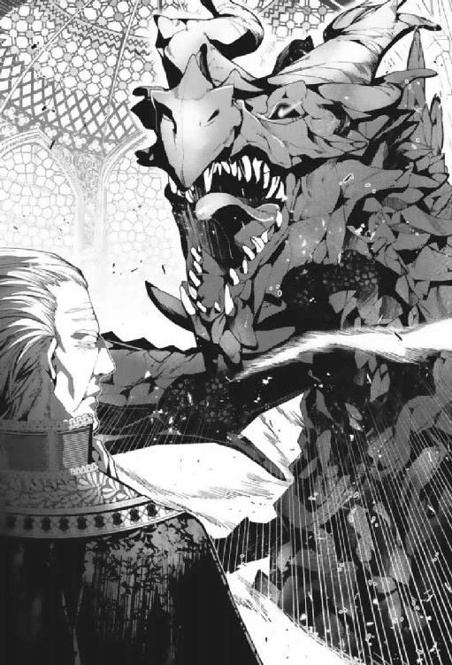

| 召しませ守護竜さま！【SS付】【イラスト付】 (フェアリーキス) | |
| 小桜けい | |
| 株式会社ジュリアンパブリッシング (2016) | |
この作品はフィクションです。
実際の人物・団体・事件などに一切関係ありません。
プロローグ
アデリナ・クラッセンは裕福な伯爵家の一人娘だったから、六歳の誕生日には盛大な祝宴が開かれ、素敵な贈り物を山ほど貰った。
玩具に珍しい異国の飾り物、綺麗な挿絵の本、新しいドレスや数々の装飾品。
それから──漆黒の雄々しい竜を描いた、見事な一枚の絵画。
立派な額縁入りの大きな絵を前に、アデリナは感激のあまり息をするのも忘れてしまった。
漆黒の竜は、四百年前にこの国の建国に関わった守護竜様だ。大きな翼の生えた背には、後に初代国王となる金髪の少年を乗せている。
建国記の絵本を読んで以来、すっかり守護竜様に憧れてしまった娘のために、両親は有名画家にこれを注文してくれたのだ。
その日はもう、祝宴の最中もずっと、アデリナの頭の中はその絵でいっぱいだった。
入浴して着替えてから、もう眠る時間になったけれど、メイドにあと少しだけとお願いして、居間に飾った守護竜様の絵を見に行った。
招待客にいた女の子は、この絵を怖いなんて言っていたけれど、全然気にならない。
鋭い金色の目でこちらを見つめる守護竜様の、なんて素敵なこと！
近づいたり離れたりして、色んな角度から散々眺めた後、長椅子に寝転んでうっとりと見惚れているうちに、いつのまにか眠ってしまったようだ。
ふわふわと身体が揺れる感覚に重い瞼を薄く開けると、父に抱きかかえられて子ども部屋に運ばれて行くところだった。隣では母も微笑んでいる。
『......お父様、お母様。わたし、大人になったら守護竜様みたいな方と結婚したいわ』
寝台にそっと下ろされたアデリナは、寝ぼけ眼のまま両親を見上げた。
父から以前、アデリナが大きくなったら最高に素敵な男の人を連れてくるから、その人と結婚して伯爵家を継ぐんだよと、教えられたことがあるのだ。
『それはなかなか難しいな。だが、アデリナの目に適う相手を見つけるように努力するよ』
父は苦笑しながら、幼い娘の頭を撫でてくれた。
大きな温かい手の心地好い安心感に、アデリナはまた幸せな気分で眠りに落ちていく。
この幸せが、ずっと続くものだと信じていた。
──両親が約束を果たす前に亡くなってしまうなんて、微塵も考えはしなかった
１ 守護竜様との出会い
秋の夕日が金色の光を投げかける頃合。
アベンロート王国の王都で最も賑やかな大通りを、一人の少女が歩いていた。
細身の小柄な少女だ。身につけているものは色褪せた質素な衣服で、スカートの裾から僅かに覗く足首は折れそうなほど細く、靴もすっかり磨り減っている。
いかにも貧しい娘といった身なりだ。
しかし、もうじき十八歳になる彼女は、その年頃よりも幾分か幼く見えるものの、非常に可愛らしい顔立ちをしていた。
簡素に束ねられた長いサラサラした銀髪や、ヒスイのように深く綺麗な緑の大きな瞳に、道行く男性がよく目を引かれて振り返る。
そのまま下心を持って誘いの声をかける男もいたが、彼女──アデリナ・クラッセンは、丁寧かつきっぱりと断るので、彼らはすぐに引き下がっていく。
もっとも、断ってもしつこく迫る男もいる。そんな時は全力で走って逃げた。
二年前まで生粋のお嬢様暮らしだったアデリナは、さして体力もないし運動神経だってあまり良くないけれど、一時的な逃げ足だけなら意外と速いのだ。
その逃げ足の速さで二年前も窮地を脱し、こうして王都で息を潜めて暮らしている。
──もっとも、今すぐにでも掴まりそうなギリギリの状態だけれど。
（もし、私が男だったら......）
お父様から領地について学ばせてもらえただろうし、結婚相手だってもっと自由にできたはず。こんな状況にはならなかったかもしれない。
もう数えきれないほど繰り返した思いがまた浮かぶ。
二年前に両親が亡くなり、爵位を継いで正式な女伯爵となった直後、アデリナはとんでもない不幸に見舞われた。
そして今では、王都の片隅にある古い屋敷で細々と一人暮らしをしている。
クラッセン伯爵家自体は、今も裕福な貴族家であり、当主のアデリナは領地の本邸に帰るのを拒まれてはいない。むしろ、さっさと戻るのを期待されているくらいだ。
けれどそれは、悪魔の占拠する牢獄に戻るのも同じだった。
（......言っても仕方ないことを考えるより、できる限りのことをするしかないわ）
ため息を呑み込み、アデリナはしゃんと前を向いて小さな背を伸ばす。
彼女は大切な花のように両親から愛でられた、苦労知らずの温室育ちだったけれど、その温室を失ったらたちまち枯れてしまうほど、貧弱な花でもなかった。
大通りからしばらく歩くと、それまでの賑わいが嘘のように静かな通りに出る。
個々に庭のついた古い屋敷が並ぶこの通りには、正式な名前もあるのだが、今ではだいたい古屋敷通りと呼ばれていた。
アベンロート王国において、爵位は終身制ではない。
後継がしっかりと育ったら、潔く家督を譲って隠居するのが美徳とされ、代わりに家督を継いだ者は、先代が快適に隠居できるように誠意を込めて気を配る。
かつて古屋敷通りは、現役を退いた裕福な老貴族が隠棲する場所として人気だった。彼らの子や孫が頻繁に屋敷を訪れ、幸福な笑い声に満ちていたものだ。
しかし、王都の近くで温泉が発掘されて賑わうようになると、隠居の人気場所はすっかりそちらに移ってしまった。
通りの家はどれも固く門が閉ざされ『売り家』の札がかけられている。
不気味なほどに静まりかえった通りを、アデリナは慣れた足取りで歩き、中ほどにある一際古びた屋敷の前で止まった。
赤いレンガで造られた三階建ての屋敷は、ここで隠居をしていた母方の祖母から、亡くなった際に受け継いだものだ。
アデリナがほんの小さな子どもの頃は、この通りもさびれきっておらず、使用人に付き添われてよく祖母を訪ねた。両親と来なかったのは、決して祖母との仲が険悪だったわけではなく、母は病弱で伏せがちで、父は多忙だったせいだ。
祖母も、アデリナから両親の話を聞くだけでも十分に嬉しいと言い、一人きりの孫をいつも歓迎し可愛がってくれた。
そして、アデリナが六歳の時に祖母が亡くなると、遺言状には『愛する孫のアデリナに、この大事な屋敷を守って欲しい』と、屋敷を正式に譲る旨が記されていた。
両親は、しばらくこの屋敷は閉めておき、アデリナが大きくなって王都に憧れる年頃になったら、丸ごと修復して別邸にすれば良いと勧めてくれた。
祖母への感謝のために、屋敷の権利書と鍵はきちんと自分で保管しなさいと教えられ、アデリナは一番大切な宝物としてそれらを綺麗な箱へしまい込んだ。
──その数年後に、まさかこんな形で屋敷に住むとは思いもしなかった。
祖母から『守って欲しい』と託された屋敷を見上げるたびに、アデリナはいつも不思議な気分になる。この屋敷のほうこそ、アデリナを匿い守ってくれているのだ。
ここも他の屋敷と同じく、周囲を庭と背の高い鉄柵でグルリと囲われている。
アデリナは錠前を開け、さびついて動きの悪くなった重い門を苦労して押し開けた。
この古い屋敷は他にもあちこちの修復が必要だったが、少女の手には余るものばかりで、不自由には我慢するしかない。
それでもまた苦労して門を閉め終わると、帰宅の安心感にアデリナは息をついた。
腕から下げたバスケットに、チラリと視線を走らせる。清潔な布巾の端を少しだけめくれば、五つも入っている焼きたて丸パンの良い香りが、ほんわりと立ち上った。
（このパン、フロレンス様がご自慢というだけあって、本当に美味しそうだわ）
フロレンス嬢は、裕福な商家の一人娘だ。歳はアデリナより少しだけ上らしい。
アデリナは現在、編み物や刺繍品を作っては売り歩くという、お針子の真似事をして生計を立てている。布代金を先に貰えれば、簡単なデイドレスだって仕立てることもあった。
そして少し......いや、かなりふくよかな体型をしたフロレンス嬢は、特注サイズの品を良い金額で頼んでくれる、一番の上客だった。
今日も、注文されたレース編みのショールを届けてきたところだ。
彼女は凝った編み方をしたショールをとても気に入ったらしく、色違いでもう一枚を依頼してから、アデリナの痩せた身体に同情気味な視線を向けた。
『私は食べすぎだってよく言われてしまうけれど、貴女はもう少し食べたほうがいいみたい。我が家の料理人のパンは最高で自慢なのよ。良かったらどうぞ』と言って、パンを持たせてくれたのだ。
社会的な階級で言えば、裕福でも平民の彼女より、伯爵位を持つアデリナが上となる。
昔、下働きに落ちぶれたとある没落貴族の娘が、平民階級の雇い主が同情で上乗せしてくれた賃金を断ったという逸話があるらしい。
かように貴族は誇り高くあれと家庭教師に教えられたその話が、ふと頭をよぎったものの、アデリナはお嬢さんの心遣いをありがたく頂くほうを選んだ。
誇りを持つのだって良いことだと思うけれど、今の自分がかなり苦しい生活をしているのは事実だし、フロレンス嬢の親切な気持ちを悪く受け止めたくもなかった。
だいたい、彼女はこちらを単に貧しい市井の娘だと思っているのだ。うっかり妙な態度をとって詮索などされたら、それこそ困る。
（あの編み方はかなり時間がかかったけれど、あんなに気に入ってもらえたなら苦労した甲斐があったわ）
嬉しそうにショールを羽織り、丸い頬にえくぼを作っていたフロレンス嬢の笑みを思い出し、アデリナも幸せな気分になる。
大抵の貴族令嬢は、嗜みの一環として刺繍やレース編みの基礎を習うが、アデリナはそうした範疇を超え、かなり高度な専門書までも揃えて夢中となっていた。
優しい両親は娘の好きに学ばせてくれたものの、しまいには仕立て屋に弟子入りするのではないかと、ハラハラしていたようだ。
しかし、その趣味が今役に立っているのだから、人生何が幸いするかわからない。
もっとも、王都には有名な仕立て屋の工房が多くあるから、素人の小娘が手芸品を売り歩いても、大抵は全く相手にされなかった。
それよりも、どこかのお屋敷で下働き女中でもやったほうが、仕事はきつくたって、よほど安定して稼げるだろう。
けれど、制約に縛られながら逃げ続けているアデリナは、他所で奉公をすることもできない。今はこれが、唯一の稼ぎ手段なのだ。
アデリナは表玄関まで続く短い砂利道ではなく、小さな野菜畑がある裏庭のほうへ足を向ける。
祖母が健在な頃は、庭師が美味しい野菜やハーブをたくさん育てていた畑も、屋敷が無人のうちに土は硬くなり雑草が生い茂っていた。
ここへ二年前に住み始めてから、アデリナは手芸品だけではとても足りない食費を少しでも補おうと、物置に残っていた古道具を使い、手を豆だらけにして必死で耕したのだ。
畑作りなど何も知らず、苗を買った店で聞いたやり方を精一杯に試したら、小さな野菜がちょこちょこできたのは嬉しかった。
あと一本だけ残っているナスをとれば、これでまた次の作物が育つまで畑は空だ。
（トマトがあれば一緒に煮込みたかったけれど......オリーブ油で炒めて塩を少し多めに振ろうかしら。パンに挟んで食べるのにちょうど良くなりそう）
最後の収穫物の使い道を考え、うきうきと屋敷の角を曲がってアデリナは裏庭に出ると......全身を硬直させた。
野菜畑の脇に、一人の男性が血まみれで倒れていたのだ。
これだけでも重大事件だが、さらに問題なのは、男が一糸まとわぬ素っ裸だということだ。
うつ伏せでまだ良かった......などと、呑気に考える余裕すらなかった。
恐怖と混乱に足をガクガクと震わせながら、アデリナは倒れている男を凝視する。
男は横顔しか見えないが、せいぜい二十代の半ばといったところか。少し硬そうな髪は闇のような漆黒で、肌は褐色をしている。ピクリと瞼が僅かに動いて薄く目が開いた気がしたが、すぐにまた動かなくなってしまった。
髪や肌の色から、彼は異国からの旅人かもしれないと思った。
この国の民は基本的に肌が白く、髪も金や茶色といった薄い色が多いが、近くにある砂漠の国の民はこうした髪や肌の色合いをしており、行商人や旅人もよく見かける。
男はかなり背が高く、戦神の彫刻のように筋骨逞しい身体つきをしていた。だが、その全身には多数の大きな切り傷が無残に走っている。
（え......？）
凄惨な姿から目を逸らせずにいたアデリナは、信じがたいことに気づいて瞬きをした。
すでに出血は止まっているようで、男の傷口に黒っぽい乾きかけた血が付着していると思ったのだが、よく見ればその黒は血でないものもあった。
男の全身には、あちこちに硬そうな黒い鱗のようなものが浮かんでいるのだ。
とどめに黒髪の合間からは、金色の角のようなものが二本、小さく突き出ていた。
──もはや、どこから驚くべきなのかもわからない。
（と、とにかく、助けを......）
反射的にそう考え、大通りに駆け戻ろうとしたが......ふと我に返って余計に困惑した。
はたしてこの状況、どこに助けを求めれば良いのか。
全裸の不審な男がいると憲兵所に訴えるか、変な生物がいると魔獣狩人の寄り合い所に駆け込むか、それとも......。
アデリナはすぐに結論を出した。
（お医者様を呼ばなくては！）
不審の塊とはいえ、目の前の男性は大怪我をしているのだ。まだ命がある証拠に、微かに開いた口からは細い呼吸が漏れていた。
貧しい相手に安く診察してくれるという親切な老医者のことを、以前にお客さんから教えてもらった。アデリナはまだそこの世話になってはいないが、診療所の場所は覚えている。
「あの、どなたか知りませんが......待っていてください、すぐお医者様をお呼びします！」
意識があるようには見えなかったが、アデリナは一応男に声をかけた。
「──待て、娘......」
しかし、踵を返して走りだしかけたアデリナの足を、低い男の声が止めた。
振り向くと地面に倒れたままの男が、薄っすらと目を開けていた。とても鋭い目つきの瞳は、まるで晴れた空のように綺麗な青だった。
「ここは......アベンロートの、王都か......？」
「はい。そうです」
アデリナが頷くと、男は酷く顔をしかめて呻いた。やはり傷が痛むのだろう。
「大丈夫ですか!? 今すぐ、お医者様を......」
「やめろ！」
男が突然怒鳴った。瀕死とは思えない鋭い声に、アデリナはビクリと肩を震わせる。
「絶対、誰も呼ぶな......すまん......お主が............な者だったばかりに......巻き込んで......その手で、何か食べさせてくれ......動けな......」
苦しげに続けられた言葉はよく聞き取れなかったが、男が誰も呼んで欲しくないことと、どうやら空腹で仕方ないらしいことはわかった。
しかし、アデリナは彼の頼みを聞くべきか悩んだ。
ちょうど頂いたパンが手元にはあるし、幾ら貧しい生活をしていても、心底困っている人にこれを譲るのは構わない。
それはともかくとして問題は、こんな大怪我なのに誰も呼ぶなという点だ。
絶対に怪しい。警備兵に追われている真っ最中とか、何か人に言えないことをして怪我を負ったという可能性もある。
空き家だらけのこの通りでは、悲鳴をあげたってまず誰にも聞こえない。
幾ら弱っているように見えても、こんな不審な相手へうっかり近づいたら危険ではないだろうか......？
昔だったら、こんな恐れを抱くこともなく、すぐ男を助けようとしたに違いない。
世の中には悪い人がいると知っていても、そういう人はいかにも恐ろしげで危険な風貌で、一目でわかると思っていた。
けれど、事故で両親を亡くした後、平気で人を油断させて騙す者は、意外と近くで上手に息を潜めているのだと思い知らされた。
さらに、人の多い王都ではそれだけ危険も多い。物騒な地区では僅かな小銭目当てに人殺しさえする無法者や、貧しい娘を攫って人買いに売る者も珍しくないそうだ。
（や、やっぱり、憲兵を呼んだほうが......）
どんなに非道な人間がいるか、もう十分思い知ったじゃないか。こんな不審な男の願いなど無視して助けを......この男ではなく、自分のために人を呼んだほうがいいに決まっている。
男の青い瞳を見つめながら、震える足が知らず知らずのうちに後ずさろうとする。
「......っ！」
だが、迷った末にアデリナは男に駆け寄った。
どう見ても彼は重傷だ。その微かな望みをやたらに蹴飛ばすなんてできない。
思えば、知り合いでもないお宅の裏口をいきなり訪問しては、こそこそと手芸品を売り歩くアデリナとて十分に不審な娘だ。
貧しい身なりをした見知らぬ娘に、胡散臭げな視線を向けてピシャンと戸を閉める家が多い中で、フロレンス嬢のように親切にしてくれた人もいた。
おかげで、多少はひもじい思いをしても未だに何とか根をあげず、悪魔のような後見人夫妻から逃げ続けていられる。
だから今度は、自分が見知らぬ相手を助ける番だ。
アデリナは男のすぐ傍に膝をつき、脇に置いたバスケットから急いでパンを取り出す。
食べやすいように小さく千切り、土と血に汚れた口元に差し出すと、男が首を僅かに傾けてパンの欠片を咥え取った。
喉をゴクリと動かしてパンを嚥下した男が、青い瞳をとても嬉しそうに細めた。
「感謝するぞ、娘」
「い、いえ......」
少々尊大な口調ながら真摯な声で告げられ、疑って悪かったと恥ずかしくなる。
だが、次の瞬間、アデリナは驚愕に目を見張った。
男の姿が見る見るうちに変わっていくのだ。
角が引っ込み、黒い鱗が消えた。さらには彼の体中にこびりついている血が黒い霧のようになって傷口に吸い込まれ、裂傷が塞がり始める。
「娘、もっとくれ。早く」
男が言い、有無を言わせないその調子に促されるまま、アデリナは次々とパンを千切っては彼の口に入れた。
五つのパンがその口に消える頃、あれだけの怪我はすっかり消えてしまった。
（ど、どうなっているの......？）
しゃがみ込んだまま呆然としているアデリナの前で、男が満足そうな笑みを浮かべて身を起こす。
「世話になったな、礼を言う」
快活な声にアデリナは我に返った。同時に、堂々と目の前に立ち上がった男の裸体が目に入る。
「きゃあああ！ 変態！」
反射的にアデリナは悲鳴をあげて顔を両手で覆った。
何しろ傷が消えて人間そのものの姿になろうと、男は相変わらず全裸だ。
「なっ!? 誰が変態か！」
「だ、だだだだって......は、裸で何を堂々と......っ!!」
慌てたように怒鳴る男へ、動揺しながら精一杯に言い返した。
彼が衣服を着ていないのは承知していたのだから、もう少し恥じらいを持ってくれれば......いや、せめて、隠す気を微塵もなしで真正面に立ち上がるまでしなければ、アデリナとてこんな態度はとらなかっただろう。
──生まれて初めて、男性の下半身をばっちり見てしまった。
一目散に逃げようとしたが、男のほうが遙かに速かった。逃げ足には自信があったのに、大きな手にがしっと襟首を掴まれる。
「誤解だ、娘っ！ 俺がこの姿でいるのは不可抗力であってだな......くっ！ そもそも、これしきで動じるな！ 少し落ち着け！」
「普通は動じますっ！ そもそも貴方は、どちら様ですか!?」
全裸の変態から偉そうに説教されて落ち着けるほど、アデリナの肝は据わっていない。
ジタバタともがきながら、やっぱり近づくのではなかったと後悔する。
これだけ騒いでも、無人の近所は静まりかえったままだ。それでも、誰か通りかからないかと、アデリナが必死で助けを呼ぼうと叫びかけた時だった。
「......驚かせてすまなかった。俺は、シュヴァルツェンと言う。誓って乱暴な真似はしないから心配するな」
背後から、困りきったような男の声がした。
「シュヴァルツェン？」
この国ではとても有名で崇められていながら、人の名前には決して使われないはずの『シュヴァルツェン』という名に、思わずアデリナは動きを止めて問い返した。
「そうだ。この国では、俺のことは未だに知られているようだが......」
そして男はアデリナの襟首を放すと、目の前へ片腕を突き出した。
全裸の印象が大きすぎて気づかなかったが、その手首には金の腕輪がつけられていた。
古びているが随分と立派な細工で、男の逞しい手首にもブカブカなほど大きい。そして、この国の王家の紋章が刻まれていた。
それだけでも驚きだが、紋章の横に彫られていた文字に、アデリナは目を見張る。
「これ......？」
今年で建国四百年を迎えるアベンロート王国は、かつて戦乱の時代に、敗戦国の一平民だった少年が仲間を集めて戦い抜いた末に建立した国だ。
その少年──初代国王となったディルク・アベンロートが、強国を相手に無謀とも言える戦いを勝ち抜けたのは、その傍らに黒竜シュヴァルツェンがいたからだ。
どんな逆境でもディルクを守り抜いた漆黒の竜は、やがて畏敬を込めて守護竜と呼ばれるようになった。
このアベンロート王国が未だに『竜の守護した国』と言われているのはそれゆえだ。
一人の少年と一匹の竜の出会いから始まる建国記は、昔からこの国で多くの歴史学者によって書かれ、詩・歌劇・絵画に至るまであらゆる分野でも人気の題材とされている。
......とはいえ、ディルク少年が黒竜のシュヴァルツェンにどうやって出会ったかは、書かれている建国記によってそれぞれ違う。
建国記には曖昧な空白部分が多く、その部分は歴史家達が様々な憶測を立てて補っているせいだ。
しかし、どの建国記でも確実とされているのは、初代国王と黒竜が深い絆で結ばれた親友で、シュヴァルツェンは守護竜の名に相応しくディルクを庇って死んだことだ。
建国して間もなく、ディルクが使節を装った刺客から死の呪いをかけられた時、シュヴァルツェンは彼の身代わりとなって石化し、命を落とした。
大広間で石となった巨大な竜はとても動かせず、守護竜の眠りを妨げないようにと、ディルクはその広間を霊廟として閉ざすことにした。そして、国王となった際に守護竜へ贈った指輪の文面と、同じ文字を扉に刻んだ。
『ディルク・アベンロートは、親愛なる守護竜シュヴァルツェンの永遠の友であると誓う』
この不審な男性が持つ腕輪には、その有名な文と同じものが刻まれていた。
「守護竜様の指輪と同じ......？」
思わず呟くと、男が深く息を吐く。
「これがその指輪で、今は人間の姿をとっているが、俺の本当の姿は黒竜だ」
夕日に照らされた男は、精悍な顔に少し悲しげな色を浮かべてアデリナを眺めていたが、不意にその表情が不機嫌そうなものになる。
「俺は竜だから、無駄な衣服など着ていなかったのだ。これが俺の普通なのであって、断じて変態ではない！」
「そ、そうですか......すみませんでした」
アデリナは冷や汗を浮かべつつ、一応謝った。
建国記なら当然知っている。それどころか、幼い頃に絵本で子ども向けの建国記を読んで以来、守護竜シュヴァルツェンに憧れ、様々な建国記を読み漁ったほどだ。
六歳の誕生日には、両親から建国記の一場面を描いた絵画も貰った。
どれほど眺めても飽くことはなかった、あの宝物の絵画も、領地の本邸に残してきてしまった。今はどうなっているか確かめる術もない。
ただ、実物の絵が目の前になくとも、金髪の少年を背に乗せた黒い竜の雄々しい姿は、今でもしっかりとアデリナの記憶に残っている。数々の幸せな思い出と重なり合って......。
──だが、しかし。
なるべく裸体を見ないようにしながら、自称・守護竜様の顔を見上げる。
倒れていた時にも大きい人だと思ったが、改めて並ぶと彼は、小柄なアデリナと頭二つ分は差があった。
アデリナの不審たっぷりな視線を受け、彼が片眉を吊り上げた。
「非常に疑わしそうな顔だな。証拠まで見せたのにまだ信じないのか？」
「守護竜様は石化の呪いで亡くなったはずです。それにどう見ても、指輪ではなく大きな腕輪に見えるのですが？」
「確かに一度は石になった。あの時は、全く油断したものだ」
納得いかない部分を指摘すると、彼は気まずそうに頭を掻いて頷いた。
「だが、黒竜はそれで死ぬほどひ弱な種ではない。かなり長い時間がかかったが、石化の呪いが風化して元に戻ることができた」
例の大きすぎる金輪をはめた右腕が、アデリナの前で軽く振られる。ずれた輪は、器用に彼の中指へ引っ掛けられた。
「それからお主の言う通り、これは腕輪ではなく正真正銘の指輪だ。ただし考えてもみろ、竜の指に合わせた大きさなのだぞ」
男がニヤリと笑った。その手首から先が、見る見るうちに黒い鱗に覆われて膨れ上がる。
指は先端に鋭い鉤爪がついた異様な形になり、金の腕輪だったものは、その太い指の一本にピタリとはまって指輪となった。
「っ!?」
さっきから何度目かの驚愕に、アデリナは声にならない悲鳴をあげた。
目を剥いて仰け反った拍子に、視界がクラリと歪む。栄養不足で弱っていたところへ、立て続けに信じられない出来事を見て、ついに気力が堪えられる限界を超えてしまったのだ。
そのままアデリナは、自分でも気づかないまま意識を失った。
『──シュヴァルツェン！』
ふと気づくとアデリナは、赤茶けた荒野で大きな岩陰にいた。
目の前には、一人の少年が立っている。
黄金色の髪と澄んだ青い瞳の快活そうな少年は、十五・六歳といったところだろうか。
だが妙な少年だ。まるで玩具の人形みたいに小さく、身につけている革鎧や編み上げブーツなどは、どれも何百年も昔のような装いだ。
そして少年の手は、薄っすらと綺麗な金色の輝きをまとって見えた。
『良いものを手に入れたぞ。ほらっ、お前の大好物！』
少年は満面の笑みで言い、大事そうに抱えていた袋から赤いリンゴを取り出す。すると、アデリナの口が勝手に動いて歓声をあげた。
『おおっ！ でかしたぞ、ディルク』
その途端、アデリナは自分が今、守護竜シュヴァルツェンの記憶の中にいるのだと自然に理解した。
彼が守護竜と呼ばれるより前の、四百年以上も昔の記憶を見ている。
目の前にいる人間の少年は、巨大な竜の目線で見ているので小さく思えたのだ。
そして彼こそが、後にアベンロート王国を建立し、初代国王となるディルクだった。
ディルクは、キラキラ輝く手でリンゴを掴み、大きく開いた竜の口に放り込むと、黒い巨体に寄りかかって座り、もう一つ取り出したリンゴをシャクシャク齧り始めた。
ここはディルクの故郷を滅ぼした大国で、戦争奴隷が過酷な労働を強いられている採石場の近く。これから密かに仲間を救い出しに行くところだ──と、シュヴァルツェンの記憶と知識がアデリナの中へ洪水のごとくなだれ込んでくる。
押し寄せてくる記憶と知識はあまりに多すぎて、断片的な欠片をかろうじて受け取れるくらいだ。
ディルクの母は人間でも父は黒竜で、シュヴァルツェンと半分だけ同族だった。
黒竜は自身を人間の姿にも変えられ、人間と子を作ることもできるのだ。
しかし、ディルクは黒竜の血を半分引いていても、竜の姿になったりはできなかった。普通の人間よりやや身体能力に秀でているくらいだ。
よって、シュヴァルツェンは彼を、黒竜の数には入れない。
ディルクの両親も故国もすでに亡く、彼と共に旅をしているシュヴァルツェンも、黒竜という種で最後に生き残った一匹だった。
シュヴァルツェンは鋭い歯でリンゴを噛み砕き、口の中に広がる甘酸っぱい味を楽しんでから飲み込んだ。
荒野で食べ物を手に入れるのは困難で、腹は減っていたし暑くて喉も渇いていた。だが、それ以上に干乾びかけていた魔力が、じんわりと体中に満ちていくのがありがたい。
今のリンゴは確かに美味かったが、なんの変哲もないただの果実だ。重要なのはそれが、ディルクの手から与えられたという点だった。
ディルクに黒竜の能力はないが、黒竜が何よりも欲する能力は持っている。
彼は、黒竜に見初められた人間の母と同じく、黒竜に魔力を与えられる『善良な者』だったのだ。
──事の発端は、気が遠くなるほど昔。
まだ多くの妖精や小人が存在し、人間達は小さな集落を作って暮らしていた頃。
強大な力を持つ黒竜の一族は、繁栄の盛りを謳歌していた。
非常に残忍で傲慢だった彼らは、気まぐれに命を奪い、数多の種を滅ぼした。
しかし、とある妖精族を滅ぼしたことで、黒竜達の命運は尽きる。
黒竜の長に、遊び半分で仲間の殆どを焼き殺された妖精の女王から、残った一族全員の命と引き換えにした強力な呪いをかけられたのだ。
『驕りたかぶった黒竜どもめ！ この先、貴様らは自らで魔力を回復することは決してできぬ。貴様らと話せる最後の種族となった人間に、その報いを与えさせよう。人間の中でも、深い優しさと気高い心を持つ『善良な者』から与えられた食べ物だけが、我らの呪いを超えて貴様らの魔力を癒せるのだ。さぁ、これからは弱者の慈悲に縋り、拒絶される絶望を味わい、自らの非道の報いを受けろ！』
黒竜の全員にかけられたこの奇妙な呪いを、彼らは最初こそ笑い飛ばしたが、すぐに事の深刻さを思い知った。
黒竜はその頑強な身体を維持するために、起きている間は自然と常に微量の魔力を使っていた。体内の魔力を多く使えば、炎を吐いたり姿を変えたり、傷を瞬時に治したりもできるが、全て使い切ってしまうと死んでしまう。
魔力は眠れば自然と回復していたのだが、それが一切回復しなくなったのだ。
驚いた黒竜は、妖精の言っていたことを試してみることにした。
黒竜達は呪いを受けると同時に『善良な者』を、手を見ただけでわかるようになった。
たとえその手が病や火傷で爛れていようとも、黒竜には光り輝いて見えるのだ。
だが、性格が良いとされる人間など幾らでもいるのに、妖精の呪いを超えられるほどの者は滅多にいなかった。
彼らは人間の集落を手当たり次第に襲い、ようやく『善良な者』を見つけると、傷つけ脅して無理やり食べ物を口に運ばせたが、魔力は回復しなかった。
強制するのではなく、相手に好意で与えてもらわなければいけなかったのだと気づいた時には、すでに大多数の黒竜が魔力を枯渇させ、亡骸となっていた。
しかし、同胞の末路を見て学んだものの、残りの黒竜は人間達に『善良な者』が必要なことを明かして協力を求めようとはしなかった。
それを弱みとして握られる恐れがあったし、今まで弱者と蔑んでいた相手に慈悲を乞うには、黒竜という種は気位が高すぎたのだ。
どのみち、もはや黒竜を恐れきっていた人間達は、遠くからその姿を見るやいなや逃げ隠れてしまい、話を聞こうとすらしてくれない。
拒絶される絶望と非道の報い──妖精の呪詛を、黒竜達はようやく思い知りながら滅亡していった。
シュヴァルツェンは深い森の奥にある洞窟で、最後の黒竜の卵から孵った。
生まれた時には、一匹の雄竜だけがかろうじて傍で生き残っているだけで、彼から全ての記憶を継承することで一族の命運も知った。
ほどなくその黒竜も魔力が枯渇して死に、シュヴァルツェンは生まれた洞窟でずっと静かに暮らしていた。
短い一時を過ごした同胞からは、魔力が減りすぎる前に森の外に行き、人の姿をとって人間の街で密かに『善良な者』を探せと言われていたが、それに従いたくはなかった。
『善良な者』を見つけて、さらにその相手と友好を築ける確率が、きわどい賭けに等しいからではない。黒竜らしく傲慢な考えで人間を見下していたからだ。
人間という種については、継承した記憶でだいたい知っていただけで、単に弱い種族と見なして興味を持とうともせず、それに媚びるなんて我慢がならないと思っていた。
死んだ父親が黒竜と知ったディルクが、その生き残りを探しに森へ来て出会うことがなければ、そのまま魔力を切らして死んでいただろう。
ディルクとの出会いが、シュヴァルツェンの運命をすっかり変えた。
『善良な者』という理由ではなく、ディルク自身を気に入ったから共に生きることを決め、他の種族を見下すのも止めた。
故郷を焼き滅ぼされたディルクに帰る場所はなく、旅暮らしをしながら、奴隷にされていた故郷の人々を救い出すことに奮闘していた。
故国の王族もすでに国と一緒に滅ぼされており、救い出した人々は自然とディルクを頼るようになった。
仲間を守り戦い続けたディルクの手は、確かに多くの命を救ったけれど、そのために敵へ剣を振るい、やはり多くの命を摘み取ったのも事実だ。
そんな自分がどうして『善良な者』として認められるのかわからないと、ディルクは言ったことがある。敵だから殺しても大丈夫だなんてあるもんかと。
そんなことは、シュヴァルツェンだってわからない。
憎らしい呪いをかけた妖精の価値観なんぞ知るものかと、素っ気なく返した。
ただ、ディルクは無残な乱世で全てを救うことができないと知りつつも、一人でも多く救おうと足掻いていたから......彼の手は血に濡れてもなお妖精の呪いを超えられるのだろうなと、こっそり思った。
記憶の場面は目まぐるしく進み続け、ついにアベンロート王国が建立された。
ディルクはもう少年ではなく立派な成人男性となっていたが、彼の澄んだ瞳も竜に糧を与える手も、何も変わらなかった。
けれど、静まりかえった広間に立っている彼は青ざめ、いつもの快活な笑みは強張ってぎこちない。泣き出しそうなのに無理に笑っているような、変な顔をしていた。
『──なぁ、シュヴァルツェン。お前は全部石になる前に、こんな呪いじゃ死なないと言ったな？ お前は、俺に嘘をついたことなんて一度もなかったから信じるよ。お前は長く眠るだけで、絶対にまた元の姿に戻れる。でも......』
彼は震えていた拳を開き、冷たい石となった守護竜にそっと触れる。手の平に血が滲んでいるのは、強く握りすぎて爪で傷ついたのだろうか。
（馬鹿が。俺を信じるなら、そんなに悲しむな）
シュヴァルツェンはそう言ってやりたかったが、石になった喉からは声も出せない。
石化の呪いは強力だが、数百年をかけて徐々に風化していく。
大概の生き物は石になると同時に死ぬから、石化が解けても朽ちた死体になるだけだ。でも、頑強な黒竜は違う。強力な石化の呪いですら表面を固めただけで、奥深くまで石にして即死させることはなかった。
また、長寿な黒竜なら、石化が解けるまで待っても寿命を迎えることはない。
さらに皮肉なことに、石化した表皮が魔力までしっかりと封じ込めるので、ディルクから糧を貰わなくとも、魔力の枯渇で死ぬことさえなかった。
すぐ呪いを解くことはできなくとも、自然に消えるのを気長に待てばいい。
ただ......石化が解けるには何百年もかかる。ディルクが生きている間に、また動けるようにはならないだろう。
たとえ黒竜の血を引いていようと、彼の身体は殆ど人間だ。怪我をしたってすぐには治らないし、ちゃんと歳をとる。ディルクもそれは承知なのだ。
『お前が動ける頃には、俺はとっくに死んでいるだろうな。どんな爺さんになるか、どうせなら見て欲しかったよ』
軽い口調と裏腹に、青い瞳が悲しげに伏せられる。
『何百年か後にお前が目覚めた時、俺はもういない。けど、俺の子孫がお前にまたリンゴを食べさせるのを期待するよ。その子がもし俺と同じ手を持っていなかったら、『善良な者』を探すのを協力するようにも伝えておく。約束としてここの扉に、これと同じ文字を刻んだ』
ディルクがしゃがみ込み、シュヴァルツェンの前足の指にある金の指輪をコツンと叩いた。石化の呪いは身につけている品までは及ばず、それは石にならなかった。
金色の指輪に刻まれた文字を軽く指でなぞってから、ディルクは顔を上げる。
『お前の呪いが少しでも早く解けるように、ここには誰も入れないし、お前が本当は生きていることも、俺の子孫だけの秘密にする。あんな扉は簡単に壊せるだろ？ 動けるようになったらさっさと出てこいよ』
名残惜しそうに石の首筋を撫でてから、ディルクは踵を返した。
重い音を立てて扉が閉まり、一筋の光も差さぬ霊廟は真っ暗となる。周囲に一切の光がないほうが、少しだけ呪いの風化は早まるのだ。
見開いたまま石化した目を、シュヴァルツェンは微かに使える魔力で無理やりに見えるようにしていたが、それを止めるとたちまち何も見えなくなった。
真っ暗な中で、意識が遠のいていく。目が覚めるのは、長い時間が経って石化が解け始める頃だ。
目が覚めた時にディルクはもういなくとも、奴の遺した国と子孫を守護しようと心に誓った。そうだ、必ず守ろう。何百年経っていようとも絶対に......。
──静寂の中で、どれほど眠っていたのだろうか。
ある日、騒がしい物音がシュヴァルツェンを覚醒させた。扉の外から、多数の甲冑の擦れるような金属音と、大勢の足音が近づいてくる。
寝ぼけたまま反射的に首を上げようとすると、強張りきっていた首がミシリと軋みながら動いた。鋭い痛みと共に表皮の石が割れ、乾いた泥のようにパラパラと剥がれ落ちた。
相当に長い間を眠っていたのだろう。
呪いは殆ど風化しかけていたが、まだ完全ではないようだ。
体内に残る僅かな魔力を使い、このまま強引に呪いの残滓を払うこともできそうだが、間違いなく瀕死寸前まで魔力を使い切るうえに、大怪我をするだろう。
ひびの隙間から閉じ込められていた魔力がじわりと零れ、疲労と空腹に似た飢餓が身体に広まっていく。
シュヴァルツェンは無理に動くのを止め、霊廟の扉が徐々に開いていくのを見つめた。
確か、ここには誰も入ってこないはずだったが......と、覚醒したての頭でぼんやりと考えていると、開いた扉から武装した兵の一団が入ってきた。
松明の灯りが、真っ暗だった霊廟にオレンジ色の光を掲げる。
兵の甲冑や兜は、シュヴァルツェンが知っているものと随分と形が変わっていたが、彼らの兜に描かれているのは、紛れもなくアベンロート王国の紋章だった。
彼らは表面の石がところどころに剥がれかけているシュヴァルツェンを見て、驚きの声をあげた。
『これが守護竜様......』
『本当に、石から戻りかけているぞ！』
口々にどよめく彼らの後ろから、壮年の男が進み出てきた。皴の深い神経質そうな細面の顔で、栗色の髪には白いものがかなり交ざっている。
『これは本来、王家だけに伝わる極秘である。一切の口外は許されんと肝に銘じよ』
威圧的に言った男は、一人だけ甲冑姿ではなく煌びやかな絹服を身につけていた。
男はシュヴァルツェンを見上げ、血の滲む石のひびを眺めて満足そうに頷く。
『石化して四百年近くも経っておるが、完全には呪いは解けていないようだな。幸いだった』
お前は誰なのかと、シュヴァルツェンが問おうとした時、絹服の男が大声で叫んだ。
『しかし、念を入れて急げ！ この竜が意識を取り戻さないうちに心臓を抜き取り、殺すのだ！』
男の言葉に驚いたのは、シュヴァルツェンだけでなく兵達も同様のようだった。
『守護竜様を!? し、しかし、ホラーツト様......』
兵の一人が困惑の声をあげると、ホラーツトと呼ばれた男がそれを睨みつけて制した。
『守護竜は王家の所有物なのだぞ。だからこそ初代国王陛下は、守護竜を石化の身代わりとし、石から戻ることも王家にだけ伝えたのだ』
だが......と、ホラーツトは続けた。
『守護竜は自身が石化したことで、初代国王ディルク陛下とその子孫たる王家を恨んでいる可能性があると、マリウス陛下は危惧されている。歴代の陛下は楽観視していたが、そろそろ呪いも解ける時期だけあり、現国王として守護竜が暴れ出す危険を軽視できぬとのお言葉だ。よって、霊薬となる心臓だけを抜き取り、守護竜を殺すように決断された』
『な、なるほど......』
兵達は困惑顔を見合わせながら頷いていたが、シユヴァルツェンは呆気にとられすぎてなんの反応もできなかった。
──何を言っているのだ、こいつは？ 俺がディルクを恨む？ それに......ディルクの子孫が、心臓を目当てに俺を殺せと......？
『これはマリウス陛下よりの勅命である！ 迅速に心臓を採取し、守護竜の息の根を完全に止めよ！』
片手を高々と挙げてホラーツトが叫ぶと、兵達はまだ若干の躊躇いが残るようだったが、一斉に剣や槍を構える。
それを、シュヴァルツェンは呆然と眺めた。
かつて人間は黒竜を恐れきり、どんなに弱っていても近寄ろうとはしなかった。
だが、黒竜達が次々と魔力を枯渇させ死んでいくうち、大胆にも黒竜の死体を研究し始めた一人の魔道士がいた。
研究成果はなぜか当人の手で焼き捨てられたが、後に一部の焼け残りが発見され、そこには黒竜の心臓が、瀕死の怪我や不死の病を治す薬になると記されていた。
それだけでなく、何種かの薬草で作った薬と一緒にその心臓を食べれば、黒竜と同等の強大な魔力と長寿を手に入れられるとも記されており、人間達を夢中にさせた。
もっとも、その書が発見された時には、すでに黒竜の死体も全て朽ちていたので、試せた人間はいないらしい。
ディルクと生きていた頃、貴重な黒竜であるシュヴァルツェンの心臓を血眼で狙ってくる敵も多かったが、ディルク自身は決してそれを欲しはしなかった。
毒矢で死にかけた時さえも、彼を助けたくてシュヴァルツェンが心臓を与えようと言ったら、激怒してふらつきながら殴りかかってきたくらいだ。
ディルクのためなら、石になっても心臓を与えても構わなかった。
けれど......けれどっ!!
（ディルク!! 俺達は、とんだ愚かな思い込みをしていた!!）
記憶の中のディルクへ叫んだ。
彼の子孫は、ディルクの血を引いていても彼ではない。全く別の人間だ。
それは良いとか悪いとかではなく当然のことだった。その心がディルクと違うのも当然だ。
最後に別れた時、互いにそんなことすら気づかなかった......いや、気づきたくなかったのだ。
これが永遠の別れだという絶望から目を背けるために、確証もない希望に縋っただけだ。
槍に刺される寸前、シュヴァルツェンは渾身の魔力を振り絞り、石化を解除するべく思い切り身体を捩った。
無理に剥がした石が肉を傷つけ、鮮血が飛び散り、目が眩みそうな激痛が走る。傷みきった翼は動かせず、突然動き出した竜に怯んだ兵士の間を、全力で駆け抜けた。
重い扉は兵達が入った後で閉められていたが、体当たりして吹き飛ばす。
こんな扉は簡単に開けられるだろうと言った、ディルクの懐かしい声が脳裏に響き、一瞬足が止まりそうになった。
──俺は、どこに行くつもりだ？
このまま外へ逃げるか......もしくは............。
結局、シュヴァルツェンの足は王宮の外へ向かった。
石化を解くのに予想以上の魔力を使ったせいで、意識が混濁して切れ切れになる。
そして気づけば、見知らぬ古い屋敷の庭に倒れていた。
ここがどこかはわからないが、少なくともまだ死んではいなかったらしい。
無意識のうちに、目立つ竜の巨体から人間の姿へ変わっていたようだが、傷だらけの腕を見れば乾いた血と鱗が入り交じっており、完全に人間の姿をとれてもいないようだ。
魔力は枯渇寸前で、傷を治すことはおろか、一歩も動けそうにもない。追っ手の声も聞こえず、辺りは静かで人の気配もなかった。
そして、しばしまた途切れていた意識を引き戻したのは、今度は小さな足音だった。
薄く目を開けると、蒼白になってこちらを凝視している銀髪の若い娘が見えた。彼女の両手はディルクと同じ、淡い金色に輝いている。
それで、自分がなぜ無意識にここに辿り着いたのかを理解し、舌打ちしたいほど腹がたった。
黒竜は魔力の枯渇で瀕死にまで追い詰められた時に『善良な者』が運良く近くにいれば、その居場所や気配がしみついた住処なども感じ取れる。
それは黒竜に生きる機会を与えることでもあるが、見方を変えれば、死の寸前でも黒竜への恐れから拒絶され、いっそう絶望に落ちて死ねという、意地の悪い呪いの一環だろう。
ここで倒れていたのは、たまたま力尽きたからではなかったのだ。おそらく娘は、この屋敷の住民なのだろう。
霊廟から出た後、魔力を限界まで消費した身体は、本能的に『善良な者』の気配をこの屋敷から感じ取り、ここに導いてしまったのだ。
『あの、どなたか知りませんが......待っていてください、すぐお医者様をお呼びします！』
うろたえた様子で娘から言われ、こちらこそ大慌てとなった。
『善良な者』である娘はやはり心優しく、この異様な姿を見ても助けようと思ったのだろうが、医者なんかで魔力は癒せない。
そして人の姿のまま死んでも、死体はすぐ黒竜の姿に戻ってしまう。
（そうなれば、この娘は......）
霊廟で兵達に厳重な口止めをしていた、ホラーツトとかいう男の冷酷そうな顔を思い出し、ぞっとした。
ここはまだアベンロートの王都内だというから、奴らにすぐ報告がいくだろう。
ここでシュヴァルツェンが死に、その竜の姿を見てしまえば、秘密保持としてこの娘は殺されるかもしれない。
駄目だ。自分を助けようとしてくれたこの娘を、巻き込んでたまるか。
できるだけ早くここを出て、遠くの地へ去る姿を兵に見せるのだ。
けれど、もう身体が動かない。動くには『善良な者』から糧を貰い、魔力を回復しなければ......。
──ブツンと、唐突に流し込まれる記憶が途切れて、アデリナは目を覚ました。
「っ!?」
上体を跳ね起こして飛び起きると、自分が居間の長椅子に寝かされているのに気づく。傍らには、人の姿をしたシュヴァルツェンがしゃがみ込んでいた。
「他に誰も住んでいないようだったから、お主のポケットにあった鍵を使わせてもらったぞ」
「あ......あ......あの、今、見たの、は......本当に......？」
アデリナが震える声で呟くと、守護竜は困った顔で首を傾げた。
「手を見ただけで気絶されたのでは、俺がここにいた経緯を口で説明するよりも、記憶を見せたほうが手っ取り早いかと思ってな。身体に害は及ぼさんはずだが、大丈夫か？」
「は、はい。驚きましたけど......」
長い時の記憶を見て混乱気味だったが、ようやくじわじわと自身の感覚が戻ってくる。
傍らの窓から見える外の景色はまだ夕暮れ時で、気絶してからそれほど時間が経っていないようだ......と思ったところで、アデリナは見慣れた室内に違和感を覚えた。
そして違和感の正体に気づき、もう一度シュヴァルツェンへ恐る恐る目をやった。
──窓のカーテンが消えたと思ったら、素っ裸だった守護竜様が、腰に巻いていらっしゃった。
シュヴァルツェンは、アデリナの視線が腰元を覆っている色褪せたカーテンへ向いているのに気づくと、やけに得意そうに顎を反らした。
「人の姿になるのは久しぶりですっかり忘れていたが、初心な小娘には気遣いが必要だったな。すまんが、勝手に借りた」
「......よくお似合いです」
何と返せば良いかわからなかったので、アデリナは顔を引き攣らせつつ無難な返答をした。
それから今見た記憶を思い起こし、胸中でひっそりと息を吐いた。
（守護竜様が人の姿になれたなんて、初めて知ったわ）
黒竜について一般的に知られているのは、その強靭な力と心臓の効力くらいだ。人間の姿になれることも、『善良な者』を必要とすることも、全く知られていない。
シュヴァルツェンはディルクと二人だけでいた頃は、巨体を目立たせぬためにしょっちゅう人間に変身していたが、他の仲間にもそれらの秘密は教えなかった。
だから二人の出会いも公表されず、後世に書かれた建国記では、歴史家達が憶測で補っている曖昧な部分が多くなったのだ。
そしてディルクは、守護竜がいずれ復活することと、『善良な者』を必要とするのを自分の子孫に伝えても、人間になれることまでは教えなかったのではなかろうか。
何しろ、王家からの命令で捜索している兵達が、巨大な竜ばかり探していたからこそ、人間の姿になった彼は瀕死で弱りきっていても逃げられたのだ。
（それにしても、私が『善良な者』なんて、それが一番信じられないけれど......）
アデリナはじっと自分の両手を眺めるが、シュヴァルツェンの記憶では確かに見えていた淡い金色の光は、幾ら目を凝らしても全く見えない。
たっぷり愛されてきたアデリナは、誰かに親切にされたら幸せな気分になるのを知っているから、自分も他の人にできるだけ親切にしたいと思い、そうして生きている。
裏切られたり嫌なことをされてとても辛かったから、自分はやりたくないと思い、そうして生きている。
それらはごく単純な理想だけれど、実際にはとても難しい生き方だとアデリナは気がついていなかったから、自分がなぜ妖精の呪いを超えることができたのかわからなかった。
無言で手を眺めていると、彼がコホンと咳払いをした。
「記憶を見て理解しただろうが、すぐにここを去るつもりだ。ただ、傷を治すのにまた魔力を使い切ったのでな。もう少し動けるだけの糧を貰えればありがたい」
急に生真面目な調子で頼まれ、アデリナは慌てて居住まいを正して頷く。
「はい」
そして余計なことだとは思いつつ、尋ねてしまった。
「ですが、アベンロートを出ても......この先はどうするのですか？」
「残る意味がないからここを出て行く。それだけで、先などはどうでもいい」
アデリナの問いに、シュヴァルツェンが苦い声と表情で答えた。そして、カーテンのなくなった窓の外に目を移す。
「眠っている間に四百年近くも経っていたのだな。ここが俺の知る景色とまるで違うはずだ。ディルクの子孫はいても......あいつと別人なのも当然のことだ。あいつの作った国は残っていても、俺の守っていたものは何も残っていない」
苦しみを吐き出すように、彼は顔をしかめて唸る。
アデリナも返答に窮し、無言でスカートを握り締める。同情は失礼だとわかっていても胸が痛い。
霊廟を飛び出た時、シュヴァルツェンは一瞬、己がどこへ進むべきか迷ったのだ。
このまま失望を抱えて遠くへ去るか......もしくは引き返して兵にディルクの子孫・マリウスの居場所を吐かせ、彼の元へ行くか。
ディルクの子孫に会おうと思ったのは、恨み言をぶつけるためではない。あの場にマリウス本人はいなかったから、シュヴァルツェンはまだ彼を信じたかったのだ。
あれは単に、黒竜の心臓を欲した他者の差し金で、ディルクの子孫は守護竜を裏切ったりしていないのかもと......。
それでも結局、彼はそのまま王宮から去ることを選んだ。
ディルクの子孫へ僅かな希望を抱きつつ、それが消える可能性を恐れたせいた。
確かにマリウスはあの場にいなかったけれど、ホラーツトの口調から、守護竜が生きているのは王家の秘密となっていたのも本当らしい。本当に現王の命令の可能性もある。
半々の可能性に、シュヴァルツェンは賭けられなかった。
ディルクの子孫に対する希望を全て失うのは、己の死よりも恐ろしかったからだ。
愚かだと思いつつ、完全に絶望するくらいなら、せめてマリウスに会わないことで僅かな希望を抱いたまま死んでしまいたかった。
だから、ここで思いもかけず糧を与えられるアデリナと出会っても、彼が国を去る気持ちは変わらなかったらしい。
彼はどこか遠い地で魔力を枯渇させ、さっさとその生涯を終える気なのだろう。
そんなの、あんまり悲しすぎる。
（だからといって、私が王宮に何かできるわけもないし......それにマリウス陛下は、そんなに酷い方には見えなかったけれど......）
唇を噛んで、アデリナは視線を彷徨わせる。
アデリナの生家であるクラッセン伯爵家は、気候の良い領地を有する、適度に裕福な田舎貴族だ。
温厚な父は野心と無縁の人で、王宮での名声なども特に望まず、先祖伝来の領地管理とそこでの事業を堅実にこなしていた。
病弱な母も、王都の華やかな社交界よりも、領地での静かな暮らしを好んだ。
そうした両親の元で、アデリナも殆ど領地から出ることはなく育ち、夜会などで王宮に行ったことすらない。
だから現王のマリウス陛下について知っているのは、幼い頃に前王が急逝したために早すぎる戴冠をした、まだ僅か十四歳の少年王ということだけだ。
──マリウス陛下の姿を直接に見たのも、二年前の建国祭で一度きりだった。
王都では毎年、秋の終わり頃に盛大な建国記念祭が開かれる。
賑やかなパレードが行われ、国王は屋根なしの馬車に乗ってパレードの中央から国民に手を振るのがしきたりだ。
国王の姿を近くで見られる貴重な機会に、市街地の通り脇には平民や観光客が押し寄せる。屋台も多く出て、大変なお祭り騒ぎだ。
混雑する通りの一角には、貴族用の見物席が特別に設けられ、人ごみに揉まれることもなく見晴らしの良い場所からパレードを観覧できた。
とはいえ、賑やかな場というのは楽しい半面で、それなりに体力を消耗するものだ。
茶会やごく内輪の宴でもかなり疲れてしまう母の身体には厳しいだろうと、クラッセン家は毎年招待を辞退していた。
それをわかっていたから、アデリナも我が侭を言ったりはしなかったが、本当は一度くらい家族で建国祭を見物したいと思っていたのを、両親は察してくれたのかもしれない。
今年は母の体調も随分と良いようだから、思い切って建国祭へ行ってみようと言われて、夢かと思うほど嬉しかった。
領地から王都まで、普通なら馬車で丸一日程度だが、時間をかけて余裕を持った旅程にした。母も具合を悪くせずに済んだし、その分だけ一家で旅行をのんびり楽しめた。
そして無事に王都へ着いて貴賓席に入ると、ついにパレードが始まった。
迫力のある山車に、整然と隊列を組んだ凜々しい王宮の騎兵隊。華麗な踊りを披露する美女達。芸を仕込まれた動物と獣使い。アデリナは興奮し通しだった。
食い入るようにパレードを眺めていると、やがて騎馬隊に囲まれた豪奢な屋根なしの馬車が現れ、周囲の人々が大きな歓声をあげた。
馬車に乗って手を振っているのは、白髪交じりの壮年の男と、金髪の見目麗しい少年。
その美少年こそが、当事十二歳のマリウス陛下で、隣にいる壮年の男は補佐を務めている宰相のホラーツトだった。
世継ぎの王子を産んでそのまま亡くなったマリウス陛下の母上は、儚げな雰囲気をした絶世の美女だったと聞くが、少年王はその容姿をしっかり受け継いだらしい。
肌は透き通るように白く、身体つきも華奢だ。雄々しいとか逞しいとかは言えないだろうが、ほっそりした繊細な顔立ちは、どんな美少女も敵わないだろうと思うほど美しい。
男性としてはアデリナの好みと違っても、あれほど綺麗な少年がこの世にいたのかと、うっとりしてため息が出た。
しかもよく見ればマリウスは、貴賓席と逆側の道に立っている平民へも均等に手を振ろうと気遣っているようにも見える。一方で、宰相はずっと貴賓席のほうばかり向いていた。
偶然そう見えただけかもしれないけれど、あの時の少年王の姿には、とても感じの良い印象を受けた。
──そして楽しかった建国祭の見物を終えて領地に帰った翌日。アデリナの両親は事故で、揃ってこの世を去ったのだ。
建国祭は、最後の幸せな思い出となってしまった。だからこそ、辛さと幸せが入り交じり、より深く覚えている。
シュヴァルツェンの言う通り、マリウスはディルクの子孫というだけで、初代国王とは全く別人だ。髪は同じ金髪でも、顔立ちだって全然違う。
けれど、平民にも貴族にも平等に向けられていた少年王の柔らかな笑みは、ディルクの快活な笑顔とまるで違うのに、雰囲気は似ているようにも感じた。
ただ......それをシュヴァルツェンに言うべきか悩むのには理由がある。
霊廟に兵を先導したのは、確かに宰相ホラーツト本人のようだった。
マリウスが幼少期に戴冠をしてから、政治はホラーツトを中心に行われているそうだ。
彼は宰相であるうえに、マリウスにとっては母方の祖父にあたる。両親亡き今では、たった一人の近い肉親だ。
だからこそホラーツトは、宰相としても親代わりの祖父としても、マリウスに立派な教育を施し、いずれ自身で国政を担えるように導く義務がある。
無論、マリウス自身も王の自覚を持つべきだ。
ところが、市井に流れている噂では、ホラーツトはマリウスを甘やかし、政務の勉強もさせず、離宮でのんびり過ごさせているそうなのだ。
マリウスもそれに甘えているのか、大人しく離宮にいるだけで、王としての役目は建国祭のパレードに出るくらい。
そして前王の時代には、控えめで良き宰相だったはずのホラーツトは、政治の実権を握った途端、まるで化けの皮を剥いだように傲慢で狡猾な本性を露にした。
彼の機嫌をとる者だけが優遇されるようになり、有能な大臣が言いがかりのような理由で何人も解任された。
宮廷内の派閥や官吏の権力闘争は、多かれ少なかれいつの時代にもつきものだが、これは少し度が過ぎていた。
そのうえ、市井に密接な下級役人と警備兵にまで、大きな影響を及ぼし始めたのだ。
王宮に勤める官僚の縁故関係や、賄賂を渡すような者ばかりが、役所や警備隊で地位を持ち、真面目な者は次々とそうした連中に疎まれて追いやられたり、自ら嫌気がさして辞めていった。
当然ながら、残るはごろつきとなんら変わらないような輩ばかりだ。
こうしたことを、アデリナも二年前に王都へ住み出してからすぐに思い知った。
市場を見回る役人が、店の許可証を取り上げると脅して店主から品物をただで巻き上げたりする暴挙を見たからだ。
それが役人のやることかと驚き、諫めようと飛び出しかけたところを、近くの店の女将さんに慌てて引き止められた。
『お止め！ あんたみたいな若い娘さんが首を突っ込んだら酷い目に遭うよ。それに、逆らえば店の被害も余計に大きくなるんだ。嵐みたいなもんで、大人しく言うことを聞いて去るのを待つしかないのさ』
そう言った女将さんも、近くで見ていた者も諦めきった表情だった。
民が秩序正しい暮らしを送れるように務めるべき役人が、強盗まがいのことを平然と行っている。建国祭の見物時には知ることのなかった王都の姿に衝撃を受けた。
貴族や役人が権力を持つのは、その地を安定させる役目を担うからこそで、その力を悪用するようになったらケダモノも同然だと、アデリナは生前の父から言い聞かされていた。
陛下を個人的によく知らない以上、アデリナはマリウスを悪く言いたくはないが、こんな状況もあるからには無責任に庇うこともできない。
離宮で安穏と暮らすだけの無能な少年王と、その王の補佐を名乗ってやりたい放題の悪辣な宰相が、二重の害悪となって王都を駄目にしたというのが、もっぱら市井の評判だ。
二年前の、十二歳だった頃のマリウスが、遠目には雰囲気が良さそうに見えたとしても、迂闊なことを言えば、シュヴァルツェンを余計に苦しめるだけだ。
「あの、守護竜様」
アデリナが迷いながら呼びかけた途端、シュヴァルツェンのしかめ面が酷くなった。
「事情を教えたのだから、もうその呼び方は止めろ。守護竜シュヴァルツェンは四百年も前に石になって死んだ。それで良い」
「ごめんなさい......」
慌ててアデリナが謝ると彼が少し表情を和らげた。バツが悪そうに眉を下げて頬を掻く。
「そうだな。ヴァルツとでも呼べ。敬称もいらん。名だけ呼ばれるほうが俺は好みだ」
「は、はい......ヴァルツ」
少々戸惑いつつ、彼の新しい呼び名を口にする。
「貴方がこの地を離れるのは止めませんが......もし気が向いたら、またここに来てください。魔力が回復できるよう、できる限りのご馳走をします」
自分がこの傷ついた黒竜に何かできることがあるとすれば、魔力を回復させる程度だ。
今は失望に苛まれていても、ここを出てしばらく平穏に過ごせば、また生きる気力を取り戻せるかもしれない。
この貧しい生活では、満足な食料の入手も難しいけれど、彼のためにできる限りのことをしたかった。
アデリナの言葉に、ヴァルツは軽く目を見開いたが、すぐに不快そのものといった表情で立ち上がる。
「悪いが、同情したとでも言うなら不要だ。そんなつもりで記憶を見せたのではない」
「誤解しないでください！ これは私の......貴族としての義務です」
このまま無理にでも去りそうな彼に、急いでアデリナは否定する。
「お主の義務？」
いぶかしげなヴァルツへ、アデリナは居住まいを正してから頷いた。
「はい。信じられないでしょうが、私はこれでもクラッセン伯爵家の当主です。アベンロート王国の貴族として数々の恩恵を受けてきました。恩恵を受けた者は義務も忘れてはいけないと、先代伯爵の父から厳しく教わっております」
懐かしい父の顔が脳裏に浮かび、アデリナは泣きそうになるのを堪える。
伯爵家の令嬢として生まれたアデリナは、ずっとこの国で貴族の特権を受けてきた。
領地からの収入で家は裕福な財を持ち、大抵の欲しいものは買ってもらえた。毎日美味しいものを食べて綺麗なドレスを着て、建国祭でも特別な貴賓席を用意された。
その特権は、クラッセン家を貴族と認める王国があってのことだ。だから我々は貴族の義務を忘れてはならないと、父は常々言っていた。
領民の庇護はもちろんのこと、国の大事があれば財産や命を投じてでも忠義を尽くす。国に多くの恩恵を受けている者は、それだけ多く国へ尽くす義務もあるのだと、娘に説いた。
王宮で地位を高めたり名誉を賜りたいなんて、欠片も望まなかった父だけれど、貴族としての自覚を忘れたこともなかった。
だからこれは、アデリナがヴァルツの記憶を見たことによる個人的な感情だけでなく、この国の女伯爵としての意思でもあった。
「貴方がいなければ、故ディルク陛下が王国の建立を果たすことはできず、アベンロート王家もクラッセン伯爵家も存在しませんでした。......ただ、貴方に対する仕打ちが酷いと思っても、今の私には王宮に抗議する力はありません。せめて貴方が必要とするものを用意することで、恩義を果たしたいのです」
「......守護竜は死んだと言ったはずだ。善良な者だけあり、やはりお主は親切な娘だが、死んだ竜にまで義理を感じることはない」
唸るように言ったヴァルツの両眼を、下腹に力を入れてアデリナは正面から見据えた。
「死んだら何も感じません。貴方は生きているから、受けた仕打ちに傷ついているのではないですか」
そう言った瞬間、彼が息を呑んだように感じた。
黙りこくってしまった彼から、アデリナも視線を外して立ち上がった。
「ご存知ないかもしれませんが、今のアベンロートでは守護竜様に限らずとも、引退した功労者には快適に余生を送っていただけるよう尽くすのが当然となっております。貴方がお役目を引退なさるのであれば、どちらにしても礼儀は尽くすことになります」
台所へ行こうとアデリナが扉に手をかけた時、不意に後ろからヴァルツの声がした。
「アデリナ」
『お主』でも『娘』でもなく、名前で呼ばれたことに驚いて振り返る。
「どうして、私の名前をご存知なのですか？」
考えてみれば、まだ彼に家名以外を名乗った覚えはない。聞かれないし彼が不自由している様子もなかったので、すっかり忘れていた。
「許せ。記憶を見せた時に、お主の記憶も少しばかり見えてしまった」
「え......す、少しとは......？」
そう言ったヴァルツに、ギクっとアデリナは青ざめる。
後ろ暗い過去はなくとも、できれば人に見られたくない恥ずかしい部分くらいはある。
たとえば、一人の時に鼻歌を歌っていたらつい熱が入って熱唱していたとか、新品の下着を気に入って鏡の前でニヤニヤしたとか......。
（あ、あれだけは......ええと、そういえばあれも......いやああ！ 恥ずかしすぎる!!）
幾つかの黒歴史を思い出し、顔を強張らせてプルプル震えていると、こちらへ歩いてきたヴァルツがアデリナの向かいに立った。
「お主の中で、一番強く残る記憶が見えたようだ。二年前の半日程度で......お主が後見人を名乗る輩のせいでここに住むようになった経緯も知った」
淡々と告げられた言葉に、アデリナは息を呑む。
大好きな両親と過ごした幸せな記憶なら山ほどあるのに、自分の中で最も強く刻まれているのが、あの最悪な日だなど凄く嫌だ。
だが、そうだろうと納得できる気持ちもあった。
この屋敷にたった一人で住み、いつ後見人夫妻が自分を連れ戻しに来るかビクビクと怯えている......そんな暮らしを続けている以上、あの記憶は風化するわけがない。
──二年前。
一家で楽しく建国祭から帰ってきた翌日に、悲劇は訪れた。
近場に両親が出かけた際、馬車が壊れて事故が起き、二人は帰らぬ人となったのだ。
唐突な別れに打ちひしがれ、食事も喉を通らず、嘆く他は何もやる気になれなかった。
だが、アデリナはクラッセン伯爵家の一人娘だ。ずっと泣き伏しているわけにもいかない。葬儀から爵位継承の手続きまで、あわただしく数日間が過ぎていく。
父の部下として働くクラッセン領の役人や、伯爵家の顧問弁護士が熱心に動いてくれたので、空虚な人形のように書類へ促されるままサインをするだけで済んだ。
タール夫妻とその息子のグスタフが、揃ってアデリナを訪ねてきたのは、一連の手続きが終わった翌日のことだ。
王都で貿易業を営んでいる壮年の夫妻は、父の遠縁で、昔からたびたび訪ねてくる。
客人だから、いつも礼儀正しくは接していたが、アデリナはどうも彼らが苦手だった。
彼らは伯爵一家には愛想笑いを向けても、伯爵家の使用人には横柄な態度が見えていたし、四つ年上のグスタフも、大人に隠れてアデリナの髪を引っ張ったりして苛めるのだ。
夫妻が葬儀に来たのは普通と思ったが、日も空けずまた訪ねてきたことに、なぜか嫌な予感を覚え、それは的中した。
『これからは貴女が結婚するまで、あたくし達が後見人として支えてあげますからね』
応接間で向かいの長椅子にかけたタール夫人から唐突に言われ、アデリナは困惑した。
『どういう意味でしょうか？ 私の後見は、カルヴェ弁護士に務めていただいております』
アベンロート王国の成人は十八歳だ。結婚や重大な契約を結べるのもその年齢からになる。
早くに両親を亡くしたなどの事情で、成人前に爵位を継ぐのは可能だったが、そうした場合には成人まで後見人が補佐及び監督をするように定められている。
だから、貴族の家では子が生まれるとすぐ、後見人も決めておくのが常識だ。
成人すれば後見人は必要なくなるが、貴族女性の場合は結婚相手も親が決めるのが主流なので、後見人がつく期間を結婚するまでとしておく場合が多い。
財産管理の権利を有するなど、下手をすれば我が子の人生を左右しかねない後見人は、当然ながら信用の置ける相手に頼む。大抵の場合は、親戚の老夫妻などが選ばれた。
アデリナの両親も娘が生まれると、結婚するまでの後見人を親戚の一人に頼んだが、数年前にその人は流行り病であえなく亡くなってしまった。
そこで、カルヴェという伯爵家の顧問弁護士を新たな後見人にしたのだ。
領地を持つ貴族の家なら、大抵は顧問弁護士を抱えている。隣接する領地との諍いが起こった時の対処を引き受けたり、主人の代理で王都へ頻繁に出向いて納税など面倒な手続きを行ったりするのが彼らの仕事で、深い信用がなければ務まらない。
その際、話を聞きつけたタール夫妻が父の元に押しかけて、
『件の弁護士はまだ若い独身男性で伯爵家の縁戚でもないそうではないか。そんな相手よりも、遠縁で人生経験も豊富な自分達夫妻をアデリナの後見人にすべきだ』
と迫ったが、父にきっぱり断られたことも、アデリナはちゃんと知っている。
父の遠縁といっても、タール夫妻とは血縁もなく、普通なら遠縁などとは言えない間柄らしい。
それなのに、裕福だが平民階級の夫妻は、貴族の家との繋がりを貪欲に求めて、父に宴の招待などの口利きをよく強請りに来ていたのだ。
貴族でも醜聞を起こして相手にされなくなる者はあり、平民階級でもそこらの貴族より尊敬を集める立派な人物は多くいる。
父も、肝心なのは家柄よりも人柄だというのが持論だった。部下の出自にはこだわらず能力で人材を登用し、学ぶ気があっても家が貧しい子がいれば学費を出したりもしていた。
だから、父や知人の貴族がタール夫妻を敬遠するのは、単にその人柄を好かなかったせいだと思う。
迷惑がられているのを承知で、遠い縁を口実にして頻繁に押しかけてくる厚顔な夫妻を、娘の後見人にするはずもない。
一方で、カルヴェは伯爵家の親族でも貴族階級でもないけれど、真面目な男だと父は信頼し、家族同然に扱っていた。
そして昨日まで、確かにカルヴェはアデリナの後見人として熱心に手助けしてくれていた。
だが......心臓が不穏にドクドクする。カルヴェは時間に正確で、今日も来る約束をしていたのに、その時刻に来たのはこの夫妻だ。
青ざめたアデリナに、タール氏は脂ぎった顔をニヤつかせ、一枚の書類を突きつけた。
『カルヴェ氏から昨日の晩、どうしても後見人役を務められなくなったと言われてね。私と妻が代理を頼まれたのだよ。後見する子の両親が亡くなっている場合は、こうして代理を頼むしかないからねぇ。しかし、君もしっかりと同意のサインをしているじゃないか』
突きつけられた書類には、難しい法律用語が並べ立てられていたが、紛れもなくカルヴェのサインと、タール夫妻に後見人の代理を頼むということが記されていた。
それになぜか、この書類を見たこともないのに、アデリナの筆跡のサインまで......。
『そんな!?』
思わず長椅子から立ち上がったアデリナは、ふと書類に記された自分のサインの一部が、少し歪んでいるのを見つけ、さらに青ざめた。
ここ数日で山ほど渡された書類の一枚に、白紙同然のものがあったのだ。
あの時、さすがに変だと思いカルヴェに尋ねると、大したことない書類だが忙しいから残りは後で記入するので、指定場所にサインだけしてくれと、やけに冷たく言われた。
両親を亡くしてから毎日眠れず頭がはっきりしなかったうえ、忙しい彼に面倒なことを一切押しつけている罪悪感もあったから、珍しく苛々しているようなその雰囲気に気圧され、それ以上は聞けずにサインしてしまったのだ。
その時、初めてカルヴェを怖いと思った動揺から、サインが変に歪んだのを覚えている。
（カルヴェが、こんな書類を作ったの......？ どうして......？）
魚のように口をパクパクさせていると不意に扉がノックされ、困惑顔の家令が一通の手紙を差し出した。封筒は上質なものだが、宛名の字は書き殴ったように乱れている。
『来客中に、誠に申し訳ございません。しかしエステバン侯爵の使いの方が、火急の用事だとこれを......』
手紙を載せた銀盆を持つ恐縮した様子の家令に、タール夫妻が悠然と手を振ってみせた。
『あたくし達はもう、この子の家族なのだから気にしなくて結構よ。アデリナも遠慮しないで読むといいわ。急ぎだそうじゃないの』
彼らを家族なんて思わないが、家令が部屋を出るとアデリナはその場で立ったまま手紙をすぐ開いた。来客中には無礼な行為だが、非常に乱れた手紙の宛書がどうも気になる。
初老のエステバン侯爵は、亡き父と懇意にしており、よく美しい後妻を連れてここへ遊びに来た。アデリナも幼い頃から可愛がってもらい『おじ様』と呼んでさえいた。
礼節に厳しい公爵が、こんな殴り書きのような宛書を書くなど、不穏な雰囲気がする。
そして──手紙を見て、危うく床に崩れ落ちそうになった。
カルヴェが昨晩、エステバン侯爵の若い後妻と駆け落ちしたそうだ。
しかも後妻の部屋にあった日記には、アデリナの亡き父が生前から二人を応援して、自分に何かあったら駆け落ちできるよう大金まで用意してくれたと記されていたそうだ。
侯爵はそれを信じて怒り狂っていた。互いの家の醜聞になるので事を公にはしないが、今後はクラッセン家と絶縁すると、手紙には怒りに歪んだ文字で書かれていた。
アデリナが取り落とした手紙を、タール夫人が素早く取り上げて勝手に読み、ニンマリした。
『あらまぁ。侯爵様の妻を寝取るなんて、それはもう戻ってこれないわけね。今頃は隣国にでも逃げているのではないかしら』
夫人の笑い声を聞きながら、魂が抜け落ちたようにアデリナは立ち尽くした。
あの真面目な彼が、人妻と道ならぬ恋に落ちたうえ、自分を裏切ったなんて信じたくないが、証拠の数々が目の前にある。
『堅物だった貴女のお父様も、こんなことに手を貸すほど、カルヴェ氏を大事にしてたのね』
『嘘よ！ お父様が、そんなことをするはずはないわ！』
長椅子に戻って茶を啜りながらニタニタする夫人に、アデリナは反射的に怒鳴った。
確かに父は、カルヴェを信頼して仕事を任せる一方で、歳の離れた弟のように大事にしていた。だからこそ不貞など知ったら、絶対に止めるはずだ。
（違う......！ 手を貸したのは、お父様じゃなくて、この人達だわ！）
証拠なんか何もないが、ニマニマほくそえんで頷き合う夫妻を見て、瞬間的に察した。
伯爵家や領地のお金なら、領地役所や家令も管理しているのだから、カルヴェが勝手に使えるはずもない。彼が駆け落ちに必要な大金を得たというなら、それはタール夫妻にアデリナを売り飛ばした代金なのだろう。
『なんであれ、あたくし達がアデリナの後見人であることには変わりないわ。貴女の財産を全て管理し、結婚相手も決めるの。グスタフを、クラッセン家に婿入りさせてあげるわ。貴女の十八歳の誕生日に結婚式を挙げるのよ。素敵でしょ？』
本性を剥き出したタール夫人は、満面の笑みで傍らの息子を示す。
赤茶色の縮れた髪をしたグスタフは、夫妻に似て縦にも横にも大柄で、子どもの頃より外見も中身もいっそう不快な男になっていた。
『お前みたいにガキくさい女を妻にしてやるんだから、感謝しろよ』
近づいてきたグスタフに腕を掴まれそうになり、凍結していた思考がやっと溶けた。
『そんな勝手な要求は呑めません！ お断りします！ 今すぐ出て行って!!』
太い手を振り払って怒鳴ったが、次の瞬間、頬に激しい衝撃を受けて床に倒れた。
頬が痛くて目が回る。見上げるとグスタフが拳を固めていて、顔を殴られたのだとようやく理解した。
『もう今までみたいに我が侭な生活は駄目よ。あたくし達は、貴女を管理する後見人なの。逆らう悪い子には、パンの一切れも肌着も与えず、裸で屋根裏に閉じ込めるからね！』
轟然と言い放った夫人に、正式な後見人がどれだけ強い力を持つのか思い知らされた。
タール夫妻は本当に、伯爵家の財産を小銭の一枚に至るまで管理する権限があるのだ。
もっとも、後見相手が幼児ならともかく、十六歳の娘相手に、そこまであつかましくする後見人は少ないだろうが、夫妻はあつかましさにかけて誰にもひけをとらなかった。
グスタフと結婚しろと命じるのが、なお彼らの浅ましい本音を語っている。
後見人を据える期間はアデリナが結婚するまでだが、グスタフと結婚すればタール夫妻は義理の父母となるわけで、結婚後も一生取りつかれ続ける。
『そうそう、アデリナはグスタフと婚約したのだから、さっそく今夜から寝室を一緒になさいね。あたくしは進歩的な人間だから、正式な結婚式まで婚約者を引き離しておくなんて、古くさい考えは御免よ。それよりも、可愛い孫が一日も早く欲しいもの』
ねっとりした声で言い、タール夫人はアデリナを引き起こした。獲物を逃がさないというように力を込められ、悪趣味な色に塗った爪が服の上から痛いほど肩に食い込む。
『アデリナはまだ若いけれど、ご両親みたいにどんな不幸が起こるかわからないでしょう？ 伯爵位を持ったからには、早く次の後継者を作るのも、貴女の義務よ』
テラテラ光る分厚い唇の合間から放出される言葉に、吐き気が込み上げてきた。
アデリナに自分達の孫を生ませ、伯爵家の財産だけでなく、爵位まで丸ごと手に入れようというつもりなのだ。
子どもができたら、彼らの孫へ伯爵家の家督をさっさと移すべく、用済みと殺されかねない。
『嫌......絶対に嫌です！ 貴方達になんか従いません！』
しかし、必死で拒絶を繰り返しても、後見人代理の書類は変わらない。
さらに何度もグスタフに殴られているのを、室内の異変に気づいたメイドが飛び込んで止めたが、彼女も主人に逆らったと殴り飛ばされ、解雇を言い渡された。
財産管理には、使用人の雇用権限も入っていたのだ。
屈強な私兵を外の馬車に連れてきていた夫妻は、伯爵家の召使達全員を脅すようにして、その場で解雇した。代わりに、夫妻の言うことだけを聞く召使を連れてくると言う。
いっそ自分も家を出て、知り合いを頼ろうかと思ったが、それも見越されていた。
もしもアデリナが家を出て知人を頼ったりすれば、すぐに居場所を探し出し、後見人の許可なく娘をかどわかしたとして、その家を訴えると言われてしまったのだ。
助けを請えば相手に大迷惑をかけることになってしまうとなれば、誰も頼ることはできない。どこかで住み込みの仕事を探そうとしても、雇い主を同じ目に遭わせると言われた。
『そんな厄介な娘でも内緒で雇ってくれるのは、非合法の売春宿くらいよ。それより、いい子になってあたくし達と仲良く暮らすほうが幸せでしょう？』
せせら笑う夫人はそう言ったが、アデリナにはどちらも大した違いには思えなかった。
絶望しかけたその時、祖母が残してくれた王都の屋敷を思い出したのだ。
タール夫妻が管理するのは〝アデリナが父から継いだ伯爵家の所有財産〟である。母方の祖母から譲り受けたあの屋敷は、条件に入らない。
それに気づいたアデリナは夫妻の隙をついて応接間を飛び出し、屋敷の権利書と鍵をしまった箱だけを持って必死に逃げた。
王都までの高い馬車代は、身につけていた耳飾りでなんとか支払えた。
そして馬車に揺られながら、これからの生活費を得るために、手芸品を作って売ろうと考えついた。伯爵家にも時おり行商人が来て、メイド達が小物を買ったりしていたのだ。
自分の屋敷に住んで自分で商売するなら、もし見つかっても誰にも迷惑はかからない。
無人となって久しい屋敷は予想以上に荒れ果てていたが、大切な居城だ。
着ていたドレスや装身具を売り、質素な着替え用の古着や、手芸品の材料を手に入れた。
こうして二年間、必死にタール夫妻から逃げ続けて、王都でひっそり生きてきた。
「──ええ。ですから、今の私は爵位だけは持っていても、なんの力もない小娘です」
力なく呟くと、ヴァルツが顎より下にあるアデリナの頭を、宥めるようにポンと叩いた。
「もう忘れたのか？ お主は俺にとって一番重要な力を持っているだろうが」
彼はアデリナの手を取って軽く握り締め、すぐに放した。そしてニヤリと笑う。
「ここを去る前に、やることを忘れていたな。迷惑をかけた詫びと貰った糧の礼に、お主の家と自由を取り戻してやる」
思わぬ申し出に、アデリナは驚愕して目をしばたたかせた──が、口角を僅かに吊り上げているヴァルツの物騒な気配に、頼もしいというよりも、なぜか嫌な予感しかしない。
「すみませんが......具体的にどうしてくださるのか、聞かせてくれますか？」
恐る恐る尋ねると、彼の口元がますます物騒に吊り上がった。
「案ずるな、俺に任せておけ」
「いえいえいえっ！ とっても心配になります！ 何をなさるつもりですか!?」
先ほどよりも蒼白になって問い詰めると、ヴァルツがしぶしぶといった調子で答えた。
「今の世の政治はよくわからんが、とりあえずあの夫婦を震え上がらせて後見人を辞めさせれば問題はなかろう？ なに、奴らが私兵を幾ら雇っていようと、魔力さえ戻れば容易いことだ。四の五の言うようなら、目の前で炎の一吐きでもして......」
「やめてくださああい!!」
問題ありすぎな発言に全力で叫ぶと、ヴァルツが顔をしかめて耳に指を突っ込んだ。
「お主は小さいのに、声はなかなか大きいな」
「す、すみません。でも本当に、そんな乱暴なことはしないでください」
声を抑えて再度訴えると、ヴァルツがいぶかしげに首を傾げた。
「何も殺すとは言っていないぞ。それに、お主が逃げたのは賢明な判断だ。奴らの言いなりになっていたら間違いなく事態は悪化し、下手をすれば殺されていただろうな」
「......はい」
うな垂れたアデリナへ、やや呆れた表情で彼は続けた。
「この先も奴らがいる限り、お主に平穏はないだろう。善良な者は人を傷つけるのを好まないのだろうが、自分を害する輩までむやみに庇って自滅するのは愚かでしかないぞ」
「っ！ 違います！ あんな人達を思いやって、貴方を止めたのではありません！」
見当違いの指摘を受け、弾かれたようにアデリナは顔を上げて反論した。
「貴方がタール夫妻を脅したら、どんなに口止めをしてもいずれ王宮に知られます。そうしたらクラッセン伯爵家は酷い騒ぎに巻き込まれて大迷惑です!!」
本当は『たとえ自分を苦しめた人でも傷つけたくない』なんて聖女みたいなことを言って自分を飾りたい気持ちもあったけれど、正直な気持ちを吐き出す。
「善悪ではなく、単に私が迷惑だから断るのです。そ、それに......」
ヴァルツに残酷なことを告げるのが辛くて、声と握り締めた手が震える。
「貴方の行動がどんな理由であれ、宰相のホラーツト様はきっとそれを利用するでしょう。守護竜だった貴方が、やはり王家を恨んで見境なく民を襲うようになったなどと......自分達が貴方を襲うことを正当化するためには、そう語るのが一番効果的なはずです」
彼の記憶で見た霊廟での光景から、容易に想像がつく。
兵達は勅命と言われても、守護竜を殺すことに躊躇いが残っているようだった。
王家に忠誠を尽くす兵達は、守護竜が身を挺して初代国王を守ったあげくに『王家の所有物』扱いされていることへ、思うところがあったのではないだろうか。
だからこそ彼らは全力で襲うことができず、ヴァルツも反撃して彼らに怪我を負わせることなく逃げられたのだ。
守護竜を完全に悪役へ仕立てあげ、己を正義にできる機会を、宰相が逃すはずもない。
「そんなことになったら、私は何も嬉しくありません。ですから、止めてください」
興奮で呼吸を荒くしているアデリナを、ヴァルツは困惑気味の顔で眺めていたが、やがて深々と息を吐いた。
「わかった。ならば、お主が望むやり方を言え。可能な限りは叶えてやる」
「私が決めるのですか!?」
思わず聞き返すと、ヴァルツは鷹揚に頷いた。
「俺は今の世に疎いうえ、お主はディルクと同じでなかなか口煩そうだからな。文句を言うなら自分で考えろ」
そういえば彼は昔、あんまり荒っぽい行動をしそうになるたび、ディルクからド突いて止められていたらしかった......と、アデリナはうろたえつつ、また記憶の断片を思い出す。
初代国王陛下は、言い伝えられていた通りの人格者だったが、意外とツッコミに容赦がなかったのだと、ヴァルツの記憶で初めて知った。
それでも『口煩い』と言いつつ、彼のまとう尖っていた空気が少し和らいだ気がして、アデリナは嬉しくなる。
とはいえ、守護竜が睨むだけでもタール夫妻はすぐ逃げ出しそうだが、どうやっても後で大騒ぎになるのは目に見えている。穏便な手段などすぐには思いつけない。
タール夫妻には、ここにいることをとっくに知られている。
彼らがすぐにアデリナの居場所を突き止めても、強引に連れ帰ろうとしないのは断じて優しさではなかった。
アデリナがまだ、成人して正式な結婚を許される十八歳になっていないからだ。
十五・六で結婚もしていない貴族の娘が、恋人の子を身篭ったりすることもあるが、そうした生まれは醜聞として家名を傷つけ、その子どもに一生涯つきまとう。
欲に目が眩みきったタール夫妻は、そこを忘れていて、すぐさまアデリナにグスタフと寝所を共にさせようとしたのだろう。
だが、後見した成人前の娘に強要して子を作らせたという醜聞が広まれば、まず大抵の人から軽蔑の視線を向けられると思っていい。
それではせっかく伯爵家を手に入れても、貴族の人脈と社会的な地位を手に入れたい夫妻には都合が悪い。
アデリナはこの屋敷の他に行く当てもなく、捕まえているも同然だ。十八歳になってから連れ戻してもいいし、その前に貧しい生活に音をあげれば、そこを懐柔するほうが今後も上手くいくと考えたのだろう。
その証拠に、クラッセン領の伯爵邸を陣取ったタール夫妻は、時おりここへ来ては『結婚は十八歳まで待ってあげるし、自分達と暮らせば、こんな貧しい生活をしなくて済むのに』と、猫撫で声をかけてくる。
だからアデリナは今のところ完全に自由とは言えなくても、自力の生活を維持さえすればなんとか彼らと距離を置けるという、微妙な状況だった。
「──なるほど」
それを聞いたヴァルツはアデリナを眺め、軽く息を吐いた。
「奴らが余裕を見せるのは、その気になればいつでもお主を力づくで連れ帰れるからだな」
「ええ......」
おまけに、もうあと少しでアデリナはついに十八歳となってしまうのだ。ここから逃げようにも、今度こそどこにも行く当てはなくなる。
すっかりしょげ返ってしまうと、また宥めるように頭を撫でられた。
「そう落ち込むな。まぁ......ともかく、お主が納得できる手段を考えつくまで、しばらくここに滞在させてもらうぞ。人の姿のままで目立つようなことさえしなければ、王宮の奴らに見つかる危険は少ないだろう」
大きな手の温かさに、アデリナは込み上げそうになる涙を堪える。
ヴァルツだって大変な目に遭ったばかりで酷く傷ついているはずなのに、アデリナを心配し、力になろうとしてくれている。
彼はやはり、本物の守護竜様だ。憧れていた守護竜様と共にいる感激に胸が熱くなる。
──だが、これだけは譲れない。
アデリナはヴァルツの腰に巻かれているカーテンを、横目でチラッと見る。
「では、服を持ってきますので、まずは着替えてください！」
そして彼の返事を待たず、衣服を取るために今度こそ居間を飛び出した。
２ 守護竜様と同居生活
アデリナの祖母が亡くなった際、屋敷にあった高価な家具や調度品の殆どは、知人へ形見分けをしたり、引退する召使に与えた。
祖母が大事にしていた衣装箱も高価なものだったが、昨今では箱型の衣装箱よりも、ドレスを皴にならず吊るしておける背の高い衣装棚や、猫足の優雅な引き出しつきチェストが主流になって久しい。
なので、移動するにも一苦労な重たい衣装箱は、一室の隅にそっと置いたままにされていた。中身もそのままにされたのは、祖母を知っていた者には、あっさりと処分するのに少々躊躇われる理由があったからだ。
その衣装箱に祖母は、若くして亡くした後も愛して止まなかった夫──つまりアデリナの祖父の衣類を、思い出として何着か大切に保管していたのだ。
「──これが今の世の服か。なかなか悪くないな」
台所でせっせと料理をしているアデリナのところへ、ヴァルツがトラウザーズとシャツを身につけ終わって出てきた。
「わ......」
彼の姿を見て、アデリナは思わず感嘆の声をあげそうになってしまった。
飾り気のない簡素な型の服だったが、それだけに古くても時代遅れには見えない。
衣類の保存用に入っていた乾燥薬草も質が良いものだったらしく、随分と長く放っておかれていたのに、上質なシャツ類は虫食いなどもなかった。
祖父は逞しい軍人だったと聞いていたが、その衣服は大きさも見た目も、精悍な顔立ちに均整のとれた長身のヴァルツにピッタリと合っていた。
なおかつ、アデリナの好みのど真ん中にも、これ以上ないほどピッタリ合っていた。
絵画で見る守護竜の姿は昔から大好きだったが、人間の姿でもこんなに好みと合ってしまうなんて思いもせず、あわあわと口元を戦慄かせてしまう。
（さ、さっきまで、全然そんな風に思わなかったのに!?）
身なりを整えた彼が、別人のように素敵になったというより......おそらくは全裸だったり腰にカーテンを巻いていただけだったりという部分に意識がいきすぎていたせいだろう。
彼の記憶を見ていた時も、全てヴァルツの視点と考えだったせいで、人間になった彼自身の姿も別段異性として意識していなかったのだ。
以前、遠目にマリウス陛下を見た時には、その美少年ぶりに天使が降臨していらっしゃるのかと驚いたし、人の多い王都で見目の良い男性を見かけたことも多々あるけれど、こんなに素敵だと思う相手は初めてだ。
真珠貝のボタンを興味深そうに弄っている横顔を、食い入るように幾らでも眺めてしまいそうになる。
（うぅ......あんまりジロジロ眺めるのは失礼だから......）
自分に必死で言い聞かせて手元へと視線を戻す。
畑からとってきたナス一本に香草が少々、卵一つとミルク、少量の小麦粉。
情けない話だが、家中の食料を集めてもこれしかなかった。安価な食料が手に入る市場もすでに閉まっている時間だ。
考えた末に、手元の材料でクレープを作ることにした。
使用人を多く抱えるクラッセン伯爵家には、当然ながら料理人や台所メイドもいた。
いつもいい匂いのする厨房を覗きに行くのは、子どもの頃から大好きだった。料理人が素敵な料理やお菓子を作るのをうっとり眺め、ちょっとだけ手伝わせてもらったりもした。
まさか将来はこんな状況になるなんて、その頃は想像もしなかったけれど、料理の基礎経験はとても役立ち、この二年間で安くて簡単な料理を作るのにも随分と慣れてきた。
フライパンにクリーム色の生地を薄く伸ばし、縁が乾いてきたら破れないよう慎重にひっくり返す。
微かに茶色く焦げ目のついた丸い生地が焼けると、良い香りが台所に広がっていく。
「随分と変わったものがあるな」
不意に、ヴァルツが肩越しにヌッと手元を覗き込んできて、アデリナは危うく飛び上がりそうになった。
精悍な顔がすぐ傍に迫り、心臓が大きくドクドクと鳴る。
ヴァルツはそんなアデリナの気など知らず、手元のほうを興味深げに眺めている。
「もしやこれは、今の世の炉か？ 火石を使っているようだが......」
「え、ええ。このレバーで火をつけたり消したりして、火力を調節もできるんですよ」
まだドキドキしつつ、アデリナはフライパンを加熱している魔鉱石装置の炉を説明した。
細い鉄の足を組んだ炉には、魔鉱石の一つである火石がはめ込まれている。
魔鉱石は、水を沸き出させたり火や光などを起こせる、不思議な石の数々だ。
魔鉱石が産出されるのは遠い西北の国々で、昔は交通事情の悪さなどから、この地で魔鉱石は殆ど見られなかったらしい。
大陸街道がこの地とそちらを繋いだり、こうした魔鉱石の装置が開発されたのは、ヴァルツが石になったずっと後のことだ。
非常に便利な魔鉱石の装置は、この国でも富裕層を中心にたちまち広まった。
屋敷に魔鉱石装置がなければ、薪の扱いや水汲みに不慣れなアデリナは、調理はもちろんのこと、洗濯や風呂を沸かすのだっていちいち大仕事だったろう。
もっとも、魔鉱石は永久に使えるものではない。
装置が壊れない限り、火石や発光石を新しいものに取り替えればまた使えるけれど、魔鉱石はまだまだ高価で、今のアデリナにはとても買えない。
屋敷の装置に使われている魔鉱石は、殆どがもう効力を失いかけており、台所の火石も日に日に火力が落ちている。使えなくなるのは時間の問題だろう。
「火力調節までできる火石の炉に、発光石のランプか......随分と便利な世の中になったな」
炉をひとしきり眺めたヴァルツは、天井から下がる発光石の照明装置を見上げ、独り言のように呟いた。
それから、壁の棚やそこに置いた調理器具まで、興味津々に観察し始め、時おり頷いたり何か呟いたりしている。
四百年というのは長い年月であり、ヴァルツの知っていた時代からは、色んな物が信じられないほど変わったのだろう。彼がそれをどう感じようと、慣れるしかないのだが。
せめて彼が何か尋ねたらできる限り説明しようとアデリナは心に決め、残りの生地を焼き上げる。刻んだナスを炒めて塩を振り、香草と一緒にクレープで小さな筒状に包んだ。
「やはりそれはクレープだったか！ 今でも食べられているのだな」
台所探索を終えたらしく戻ってきたヴァルツが、クレープを見て凄くホッとしたような顔をした。
もしかして彼は先ほど、焼けている生地を見ながら、はたしてこれは自分の知る料理なのかと、内心でドキドキしていたのだろうか。
そう思うと、本当は伝説の竜である彼が、なんだか妙に可愛く思えてくる。
「ええ、一般的ですよ。今ある材料では、これくらいしかできないのですが......」
小さな五つのクレープを盛った皿を、アデリナは台所中央にある木のテーブルに載せた。
正式な食堂は別にあるが、そちらは広すぎるので今は閉めている。
表面にタイルがはめ込まれた引き出しつきのテーブルは、本来なら作業台と台所メイドの食事テーブルを兼用するものだけれど、見た目も使い勝手も抜群なのでお気に入りだ。
いつもなら、テーブルの引き出しにしまってあるカトラリーを取り出してから食事にするが、今日はその代わりにもう一度入念に手を洗った。
お茶も用意してヴァルツに椅子の一つを勧め、自分は隣に座る。
（これなら、食べさせるのにも困らない形だと思うけれど......）
程よく焼き色のついたクレープは、我ながら良い出来栄えと思う。
だが、アデリナは落ち着かない気分で、クレープとヴァルツを交互に見る。
ディルクから糧を受け取っていた時、彼はいつも竜の姿でリンゴだろうと焼き魚だろうと大きな口で丸ごと受け止め、鋭い牙でバリバリと噛み砕いていた
多分、それならアデリナとてまだ気楽にぽいぽいとクレープを口に放り込めただろう。
だが、今の彼は慎重に姿を隠している身だし、屋敷の中で巨大な竜の姿に戻られては困る。そんなに広い部屋はないし、床が抜けるに違いない。
（普通に、手に持って食べさせればいいだけよね。さっきも庭でそうしたのだし......）
心の中で己に言い聞かせるものの、妙に意識してしまう。
ふいに、昔メイドに借りてこっそり読んだ恋愛小説で、イチャつく主人公の恋人達が互いにサンドイッチを食べさせ合っていたシーンを、急に思い出してしまった。
使用人以外の男性と話す機会も少なかったアデリナは、恋をしたこともなかった。
いずれ婿を取る身だから、どのみち自由な恋愛などしないつもりだったけれど、親同士の決めた結婚でも仲の良かった両親を見て、淡い期待は抱いていた。
お互いを思いやれば、結婚してからでも十分に愛は育めるはず。
いつか素敵な旦那様ができたら、少し恥ずかしいけれどこんな風に仲良くしたい......なんて、うっとり想像しながら繰り返し読んだ。
理想のお相手は、もちろん守護竜様が人間になったような男性だ。けれど、アデリナの想像力ではその姿を上手く思い描けず、ぼんやりした逞しい影に留まっていたが......。
──まさかご本人......いや、ご本竜と、こうなるとは思ってもみなかった。
しかも実物は、どんな理想で築いた妄想も敵わないと思うほど素敵なのだ。
（あああっ、そんなにワクワクした顔で見ないでください！）
しかも、ヴァルツがもの凄く期待に満ちた顔でこっちを見ているから、心臓はいっそうバクバクと激しく脈打つし、赤面するどころか緊張で青ざめてしまう。
テーブルに突っ伏して無理だと訴えたくなったが、寸前で思いとどまった。
彼が期待しているのは魔力回復であって、アデリナとの恋人ごっこではないのだ。ディルクに貰う食べ物だって、いつも凄く嬉しそうに食べていたじゃないか。
（そ、そうよね......私だけ勝手に盛り上がって......恥ずかしい）
慌てふためいていた気持ちがシュルシュルとすぼみ、なんだか途端に虚しくなってくる。
アデリナは深く息を吸い、クレープを一つ持ってヴァルツの口元に差し出した。
「はぁいっ、どうぞ！」
それでも、まだ残っていた緊張のせいで見事に声が裏返ってしまった。
「指を噛んだりはしないから、そう怖がるな」
ヴァルツがくくっと喉を鳴らして笑い、アデリナの手をそっと掴んで、自分の口元へ引き寄せてから、パクリとクレープを中ほどから食い千切る。
どうやらヴァルツは、アデリナの緊張をまるで別の意味に解釈したらしい。
内心でホッとした時、ヴァルツがアデリナの手へいっそう口をつけ、クレープの残り半分を食いとった。
「ひゃっ」
温かな唇と硬い歯の感触が指先を掠め、ゾクリと胸まで駆け抜けた妙な感覚に、アデリナは思わず肩を竦めた。
「すまん、どこか痛かったか？」
驚いたようにヴァルツが手を放して尋ねる。
「い、いいえ......大丈夫です」
アデリナは急いで言い、二つ目のクレープを持った。
そのアデリナの手を取って引き寄せたヴァルツの仕草が、先ほどよりもやや慎重になっているようなのは、気のせいだろうか。
胸の鼓動はちっとも落ち着かないまま、三つ、なんとか四つ目と食べさせていく。
（はぁ......やっと最後......）
五つ目のクレープを手に取った時には、実際にはほんの数分だというのに、アデリナは大仕事でもこなしたように、精神的に疲労困憊していた。
ところが、ヴァルツは最後のクレープを食べようとせず、妙な顔でアデリナと空になった皿を交互に見ている。
「どうかしましたか？」
アデリナが首を傾げると、ヴァルツも同じように首を傾げた。
「あまりに美味くて夢中で食ってしまったが、お主の分は後で作るのか？」
率直に問われ、アデリナは先ほどとは違う理由で顔を赤くする。
「いえ......私は、そんなにお腹が空いていませんので」
ところがそう言った瞬間、空っぽの胃袋が抗議するかのごとく鳴った。
「お主の腹は別の意見のようだな」
冷ややかな声で指摘され、いたたまれずにアデリナは顔を反らした。
「あ！ これは、その......どのみち、大した量はご馳走できないので......」
視線を彷徨わせつつ、必死で言い訳を探していると、不意に少し強めの力で手を取られた。
ヴァルツの手に引っ張られて肘がひょいと曲がり、クレープが今度はアデリナの口元に押しつけられる。
「んっ!?」
驚くアデリナを、ヴァルツの少し金色がかった青い両眼が真っ直ぐ見つめていた。
「量がどうであれ、お主の分まで奪うつもりはないぞ」
心外だと言わんばかりの彼の表情と声に、アデリナは後悔した。
全部あげようとしたのは良かれと思ってだったけれど、ヴァルツはそんなことを望んではいなかったのだ。
閉じた唇をクレープにくっつけたまま、アデリナは黙って頷いた。
「ほら、口を開けろ。こんなに美味いクレープは初めて食ったぞ」
アデリナが作ったクレープなのに、なぜかヴァルツが自信満々な調子で言う。
変だと思っても、嬉しそうに細められた瞳につい見惚れてしまい、知らずに開いた口にクレープの端が押し込まれた。
ほんのり温かいそれを、アデリナは急いで小さく噛み千切って飲み込んだ。
「あ、あとは自分で食べられますから......」
小声で訴えると、ヴァルツが満足げに微笑んで手を放した。
アデリナはそんな彼から視線を逸らし、耳まで火照っているのを感じながらパクリとクレープの残りに食いつく。そしてあっという間に食べ終えた。
空腹を満たすには到底少なすぎる量だったはずなのに、とても満足できて......今まで食べた物の中で一番美味しかったような気もした。
──廊下にある柱時計の音が、夜の九時を告げるのが聞こえた。
（......ヴァルツはどこに行ったのかしら？）
湯浴みを済ませたアデリナは、作業場と寝室を兼用している部屋で注文されたショールを編みながら首を傾げた。
屋敷の二階にあるこの部屋は、元々は祖母の寝室だった。
広い寝台の他に、座り心地の良い安楽椅子や刺繍道具を入れるのにちょうど良い机なども残っている。刺繍や編み物の楽しさをアデリナに初めて教えてくれたのは祖母だ。
アデリナは編み棒を机に置いて立ち上がると、窓のカーテンを細く開いた。
近くの空き屋敷はどこも真っ暗だが、遠く市街地は酒場など繁華街の灯りで賑わっている。そのさらに向こうに瞬く光は、幾つもの高い塔を備えた王宮だろう。
（まさか、王宮に行ったなんてことは......）
ヴァルツは食事の後、『クレープの他にも、今の世で変わらず残っているものがあるか知りたい』と、アデリナを質問責めにした。
聞かれたのは、魔獣は今でもいるのかとか、市街地の様子や王都を囲う城壁についてなど、ごく日常に関するものばかりだった。政治や王宮に関しては特に聞かれなかったが、なんとなく彼が意図的に避けているような気もした。
それから彼が、地図や歴史書もあれば見たいと言い出したので、書庫に案内したのだ。
屋敷の二階は、大半が酷い雨漏りにやられているけれど、アデリナの寝室や書庫の辺りはまだ無事だ。
書庫には少しの本と、壁の一面にかけられた何枚かの額縁入り地図が残っている。
王都の道や、国内領地に近隣諸国と、それらの地図は数十年前のものだったが、ここ最近は大きな戦もなく、そう変わってはいないはずだ。
ヴァルツが地図を眺めている間に、アデリナは大急ぎで彼の寝場所を作ろうと、閉め切ってあった隣の客用寝室を掃除することにした。
寝具は古布などで我慢してもらうことにし、覆いを外した寝台や床の埃を拭いたりして、なんとか使える程度にしたのだが、書庫に戻ればもう彼の姿はなかった。
別室を探検しているのかと思ったが、呼んでも返事はなく、一階や地下の洗濯場にもどこにもいない。
外に出たようでもないと思うのは、玄関の鍵が内側の掛け金までしっかりと閉まっていたからだ。鍵はアデリナしか持っていないし、持っていても外からでは掛け金はできない。
唐突にここへやってきた彼は、忽然と、なんの前触れもなしに消えてしまった。
アデリナは軽くため息をついて椅子に戻り、編み物を再開する。聞こえるのは時おり風が窓ガラスを揺らす音と、編み棒の鳴る微かな音だけ。
いつもと同じ静寂が、やけに寂しく感じる。
一人きりの静かな屋敷には、ヴァルツがいた痕跡なんて欠片もない。
今さらながら、今日の出来事は全部幻だったのではないかと疑わしくなってくるほどだ。
そもそも、突拍子もない話だ。守護竜が人の姿で庭に倒れていたり、初代国王と過ごしたその記憶を見たりなんて......他の人に聞かされたら、アデリナだって信じないだろう。『きっと疲れているのね』なんて思ってしまうに違いない。
（本当は全部、夢だったのかしら......）
アデリナは部屋の隅に置いたバスケットを、チラリと眺める。
もしもヴァルツの痕跡があるとすれば、あの中に入っていた五つのパンと、食品棚の中身が全部消えているという、消滅した痕跡のみだ。それから、アデリナが覚えているということだけ。
形として目の前に残っているものなんか、やっぱり何もない。
それに気づいた途端、なんとも形容しがたい不安が背筋を這い上った。
（別に......もしおかしな夢だったとしてもいいわ。今はちゃんとこうして起きて、ショールを編んでいるもの）
アデリナは頬をペシペシと叩いて気合を入れ、懸命に編み棒を動かす。
とても疲れて眠くなってきたけれど、なんだか不安で眠りたくない。
それでも、下がってくる瞼を無理にこじ開けて編み目を数えるうちに、意識が朦朧としてきて、いつしかアデリナは椅子にもたれたまま眠り込んでしまった。
ふと、アデリナは誰かにふわりと抱き上げられたのを感じた。
まだ半分眠っている意識はおぼつかず、眠くて開かない瞼の裏へ、六歳の誕生日に貰った守護竜様の絵が鮮やかに映り込む。
──そうだったわ......私、あの絵を見ながら眠ってしまったのね......。
夢うつつのまま、アデリナはぼんやりと考えた。
今はまだ、六歳の誕生日だったのだろうか。
もうとっくに、お父様に寝台へ運んでもらったと思っていたけど......それに、もうずっと長い時間が経って......。
どうしようもなく怖くて寂しくて、自分を寝台に横たえて離れようとした腕に、目を閉じたまま縋りついた。
（お父様......お母様......私、いっぱい夢を見たの......一人ぼっちになって、辛いことがたくさんあって......それからね、人間になった本物の守護竜様とお会いしたの......でも......）
閉じた瞼から、じわりと涙が溢れ出る。
──全部、夢で良かった。
守護竜様が王宮から裏切られて命を狙われるなんて。お父様の信頼していた人が私を裏切って悪い人に売るなんて。
──覚めれば終わる悪い夢だったの。守護竜様も私も、本当は辛い目になんか遭っていないのね。良かった......。
縋りついた腕に頬を擦りつけると、すべすべした絹シャツの感触がした。
骨ばった大きな手が優しく頭を撫でてくれ、その手にも頬擦りする。
「おねがい、さみしいの。いっしょにねて......」
忙しいお父様に我が侭を言っては駄目だと思いつつ、目を瞑ったままいっそう力を込めてしがみつく。眠くて瞼が重いだけでなく、目を開くのがなんだか妙に怖い。
しばらくそうして縋りついていると、アデリナの隣へ大きな身体が横たわり、そっと抱きしめられた。
温かな体温と鼓動が伝わってきて、安堵にふにゃりと頬が緩む。なんて幸せなんだろう。悪い夢なんて全部忘れてしまおう。
顔を埋めた広い胸は、父のお気に入りの香水ではなく、なぜか全然知らない香りがしたが、それでも目を開けたくはなかった。
「ゆめで、よかった......おとうさま......」
抱きしめられる心地好さにうっとりしたまま、アデリナは再び深い眠りの沼にずぶずぶと沈んでいった。
翌朝。カーテンの隙間から早朝の光が差し込み、目を覚ましたアデリナは、まだ自分が夢を見ているのかと何度か瞬きをした。
（......え？ え？）
しかし何度瞬きをしても、目の前には自分をしっかりと抱きかかえて、ぐっすり眠っている精悍な男の顔が見える。
「きゃあああ!?」
悲鳴をあげてアデリナが跳ね起きると、ヴァルツが顔をしかめて呻き、鋭い目を開いた。
「......煩いな。どうした」
どうやら夢幻ではなかったらしい彼はムクリと上体を起こし、まだ少し眠そうな顔で呑気に大欠伸をする。
「な、何もここに寝なくとも......寝所がわからなければ、私を起こば良かったではないですか！」
竜の彼は気にならないのかもしれないが、人間の娘として一応の抗議をすると、ヴァルツが顔をしかめて椅子を親指で示す。
「覚えていないのか？ あそこで熟睡していたのを寝台に運んでやったら、お主が一緒に寝ろと要求したのだろうが」
「えっ!? う、あ......そ、そうでした......ような......すみませんっ!!」
今さらながら、夢うつつでした己の言動を薄々思い出し、アデリナは真っ赤になって頭を下げた。
ヴァルツは、昨日渡した祖父の衣服のままで、襟元のボタンを幾つか外している。
アデリナが寝ぼけて頬を擦りつけていたのは、そのシャツだったらしい。
幾ら寝ぼけていたにしても、一緒に寝てくれと男性に縋ったなど恥ずかしすぎる。穴がなくても自分で掘って埋まりたい気分だ。
すっかり寝乱れていたネグリジェの裾や胸元を、慌てふためきながら直して寝台を出る。
安楽椅子から自分の肩掛けを取って羽織ろうとしたアデリナは、ふと机の上を見て目を丸くした。
編み途中のショールの隣に、数十枚の銀貨が無造作に積み上げられている。
アデリナが小さな銀色の山を凝視していると、背後からヴァルツの声が届いた。
「受け取れ。お主が礼の方法を決めるまで、しばらくここにいることになりそうだからな。当面の食い扶持を稼いできた」
「で、でも、こんな大金どうしたのですか!?」
食費ということだろうか？ しかし、食料品店を丸ごと買い占められそうな金額だ。
うろたえるアデリナに反し、ヴァルツは引き続き呑気に伸びをして、気だるそうに黒髪をかき上げた。
「それは俺が狩った猪の魔獣の代金だ。魔獣狩りも未だに健在だと、昨夜にお主から聞いただろう」
「魔獣狩り......」
唖然としたまま、アデリナは鸚鵡返しに繰り返す。
野山に住む動物が三倍ほどの体躯へ巨大化し、凶暴化することがある。それが魔獣だ。身体の大きさ以外に、目が燃えた石炭のごとく真っ赤に光るから一目でわかる。
小ウサギから若ジカに年老いたクマまで、肉草食や年齢を問わず魔獣化の可能性はあったが、不思議なことに野生動物に限られ、家畜が魔獣化することはない。
そして魔獣となったが最後、餌も食べずただ死ぬまで暴れ続けるので、捕まえて飼育し研究に使うことも不可能だった。
魔獣は数日から数週間ほど暴れて力尽きると、毛や骨まで全てドロドロに溶けてしまう。だが、その前に殺せば死骸が溶解することはなかった。
魔獣の肉は硬すぎるし不味くてとても食べられないが、その丈夫な角や毛皮は高値で取引される。危険を覚悟で魔獣狩りを生業とする者は昔から多かった。
ただ、野生で発生する魔獣は、城塞に囲まれた王都まで入ってくることはまずない。
彼は一体、どこで魔獣などを狩ったのだろうか？
そんな疑問が、アデリナの顔にしっかりと出ていたらしい。ヴァルツが寝台に腰をかけたままニヤリと笑う。
「あのクレープが美味かったせいか、随分と魔力が回復した。人間の姿でも、城壁を飛び越えるくらいわけもないことだ」
「飛び......っ!? 城壁を!?」
王都をグルリと囲む石造りの城壁は、一番低いところでも十数メートルはあるはずだ。
「ああ。俺のこの姿が知られていなくとも、守護竜は王都の外へ逃げたと思わせたほうが良いだろう」
ヴァルツはそう言い、昨夜のことを説明し始めた。
彼は書庫で地図などを一通り確認し、人目につかぬようこの屋敷から城壁へ赴くと、わざと目立つように竜の姿へ戻って派手に飛び立ったらしい。
突如として姿を現わした守護竜を兵達は大騒ぎして追ったが、ヴァルツは城壁の外にある森でまた人の姿となり、追っ手を無事に撒いた。
そして、守護竜は外に行ったと城壁の警備がすっかり手薄になった頃合を見計らい、今度は人の姿で城壁を飛び越えて戻ったのだ。
ちなみに猪魔獣は、追っ手を撒いたついでに森で見つけて狩ったのだが、大型の獲物を抱えて密かに戻るのはさすがに厳しかったので、その近くの農村で売ってきたらしい。
夜遅かったが酒場はかろうじて開いており、相場の半額で良いと言ったら、店主は大喜びで詳しいことも聞かずに買い取ってくれたという。
「だから、その金は安心して使え。お主が食い物を買えなくては俺も困る」
「はい、ありがとうございます」
そういうことならと、アデリナは安堵したものの、もう一つまだわからないことがある。
「ヴァルツは昨夜、鍵も持っていなかったのに、どうやってこの屋敷を出入りしたのですか？」
アデリナの問いに、ヴァルツはそんなことかと言うような顔をして、天井を指した。
「やけに雨漏りの跡があると思ったら、上階の天窓が破けていたからな。帰りも遅くなりそうなことだったし、そこから出入りした」
「......あ、そこでしたか」
もはや驚きすぎて、大きな反応をする気力も失せた。
この屋敷を傷めている原因は、三階の天窓が大きく壊れていることだ。
天窓は高い位置にあり、その下の床板はかなりの範囲が腐っていて脚立を置くことすらできない。
アデリナの手にはとても負えず、そこからなら侵入者も鳥かコウモリくらいだと、諦めていたのだ。
ヴァルツは猪の魔獣なんて大物を狩ったり、城壁を飛び越えたり、人の姿のままでも信じられない力を発揮できるらしい。
それなら、窓の近くに高い木などもなくたって、三階建て分の高さの天窓から出入りするくらい余裕ですよね......と、心の中で頷く。
それでも今朝、間違いなく一番驚かされたのは、寄り添って一緒に寝ていたことだ。
広い胸の感触や、抱きしめられていた腕の心地好さを思い出してしまい、アデリナはまた頬が赤くなってしまいそうになった。
食料棚が空っぽなので、アデリナは着替えてから買い物籠を腕に、まずは市場へ出かけることにした。
朝の空気は随分と冷たくなってきた。
王都の城壁の向こうに昇ってきた朝日が、気持ちの良い秋晴れの一日を予感させる。
あの高い石組みの城壁を飛び越えるなんて信じられないと思いつつ、アデリナは隣を歩くヴァルツをそっと眺める。
古屋敷通りは、今朝も相変わらず静かだったけれど、夜中に守護竜が城壁を飛び越えて姿を現わしたなんて、城壁に近い市場は大騒ぎになっているに違いない。
王宮の兵もあちこちにいるかもしれないから、本当は市場には一人で行くつもりだった。
しかし、ヴァルツに留守番してくださいと言ったら『人間姿なら平気だ。俺も行くぞ！』と猛烈な反論をされ、一緒に行くことになったのだ。
屋敷から歩いて半刻ほどの市場は、近隣の農村から運び込まれた新鮮な野菜や肉が早朝から並ぶ。
市場は兵で溢れかえっているかもしれないとの心配は、意外にも杞憂に終わった。
屋台や天幕つきの露店が並ぶ、簡素な朝市を賑わわせているのは、いつも通り主婦や下働きなどの買い物客だ。料理店の仕入れに来ている者も多く、まとめ買いの値切り交渉などの喧騒で朝から活気に溢れている。
もっとも、兵はいなくとも、城壁を越えて王都の外に出た巨大な竜の姿は、十分噂になっているようだ。
あちこちで立ち話をしている人々から『守護竜様』という単語が、時おり聞こえる。
しかしヴァルツはそうした声よりも、四百年前とはすっかり変わった市場の品物や人々の装いのほうに、ずっと興味津々だったらしい。
興奮気味にあちこちを見回しながら、アデリナの腕を掴んでずるずる引っ張っていく。
「この、紫のはなんだ？」
店先に並んだ野菜の中で彼が指したのは、クマラという芋だった。
アベンロート王国では、農業が盛んだ。
四百年の間に多くの荒野を開墾し、病気や冷水害に強い作物を作ろうと、魔道士や学者を集めて品質改良などの研究を重ねてきた。
クマラもその成果の一つだ。皮は濃い紫色をしているが、白い中身は火を通すと綺麗な金色になる。甘味が強く、焼いてそのまま食べても良いし、バターなどをつければさらに美味しい。安価で栄養も豊富という、庶民の心強い味方である。
「これはクマラというお芋ですよ。甘くてとっても美味しいんです」
アデリナは簡単に説明し、クマラを買うことにした。店の主人に二本くださいと示し、銀貨を一枚渡す。
「お嬢ちゃん、お仕事ついでに異国の客人のお守りかね？」
中年の店主がアデリナに芋を渡しながら、ヴァルツに聞こえないようこそっと尋ねてきた。
簡素ながら上質な服を着て、この国の庶民には常識の芋も知らないヴァルツを、黒い髪に褐色肌といった風貌から、異国の貴人とでも判断したようだ。
アデリナがちょうど、下働き娘のような質素な麻のエプロンドレスを着ていることもあり、高級街の観光に飽きた客人が、使用人に市場を案内させている図に見えなくもない。
そういうことにしたほうがいいだろうと、アデリナが曖昧に微笑んで誤魔化すと、肯定ととったらしい店主は苦笑した。つり銭と一緒に、芋をもう一本寄越す。
「朝から大変だな、おまけしとくよ」
「ありがとうございます」
ニカッと笑う気前の良い店主に、アデリナも笑顔で礼を言うと、ヴァルツに袖をツンツン引っ張られた。
「ここは終わったか？ 次に行くぞ！」
また気になるものを見つけたらしいヴァルツは、目を輝かせてアデリナの腕を引っ張っていく。まるで、好奇心いっぱいの子どものようだ。
彼が興味を示したものを説明しながら、幾つかの野菜とベーコンやバター、パンにミルクに卵などを少しずつ購入してアデリナは買い物籠に入れる。
ちょうどリンゴの収穫時期なので、見事に色づいた赤い実が荷車に山積みされて売られていた。
ヴァルツの大好物であるそれも、もちろん購入する。
大きなリンゴを二つ入れると、柳の買い物籠は満杯になった。
ズシリと腕にかかる重みがさすがに辛くなり、籠を逆の腕に持ち替えようとしたら、ヴァルツの手が伸びてきてひょいと奪い取られた。
「重かったのなら、早く言え。俺はクレープも上手く作れんし今の世に詳しくもないが、お主よりも腕力はあるのだぞ。なんのためについてきたと思っている」
満杯の籠を軽々と持つ彼を、アデリナはポカンと見上げた。
どうやら市場へついてきた理由は、新しく見る時代に興味があったからだけではなかったらしい。
彼は強大な力を持つ黒竜だけれど、人間のアデリナと自分が得意なことはそれぞれ違うと踏まえたうえで、上手く補い合おうと考えてくれているのか。
「はい。お願いします」
なんだか嬉しくなり、自然と笑みが零れてしまうと、ヴァルツも目を細めて微かに口元を緩めた。
（あ......この顔......）
昨日、クレープをアデリナに食べさせた時と同じ笑みに、思わず見惚れる。
守護竜シュヴァルツェンを描いた有名な画家の作品は幾つもあり、様々な表情やポーズで描かれている。
アデリナが今まで一番好きだった彼の表情は、六歳の誕生日に貰った絵に描かれていた、漆黒の竜の凜々しい表情だったけれど、それは二番になってしまった。
今、人の姿になってこちらへ向けられている彼の笑みが、一番好きになった。
見ていると、胸の中がほんわり温かくなって、心臓の奥が少しくすぐったいような、不思議な気分になる。
「──おい、守護竜の騒ぎを聞いたか？」
しかし、雑踏の中から不意に聞こえてきた会話が、ほんわり気分を一気にかき消した。
アデリナ達のすぐ傍には、ソーセージを挟んだパンを売る屋台があり、数人の労働者らしい男達が集まって、パンと茶を片手に休憩をとっていた。
「王宮の地下で、いきなり石から戻って暴れ出したんだろ？ 城壁の外に逃げたらしいって、うちの村にも朝早くから兵が捜索に来たぞ」
アデリナ達が聞いていると気づかず、男達は守護竜騒ぎの話で盛り上がり始めた。
どうやら市場に兵がいないのは、すでに城壁の外で大量の兵達が守護竜の捜索に当たっているからのようだった。
昨夜のうちに農村地帯へ通達された王宮からの布告には『石化していた守護竜が突然に復活し、王宮の兵士達へ問答無用で襲いかかったあげく、王都の外へ逃走した。大がかりな討伐隊を組むので、何か情報があれば王宮へ知らせるように』と記されているらしい。
事実とまるで違う王宮の布告に、アデリナは愕然とした。
もしもヴァルツがタール夫妻を脅したりすれば、それを宰相に利用されるかもと危惧はしたが、何もしなくてもこうして平然と嘘を並べ立てられ、結果は同じだったなんて。
（酷い......！）
アデリナが憤りに、握り締めた両手を震わせた時だ。
「うちの伯父貴がさ、霊廟から守護竜が出てきた現場にいたんだ」
男の一人が得意げな様子で言い、仲間の注目を集めた。
「そういや、城の衛兵やってるんだったな。伯父さんは怪我しなかったか？」
「ああ。足を食い千切られる寸前だったらしいけどな。でも、大怪我させられた兵が山ほどで、霊廟は血の海だったってよ」
「ひでぇな。何が守護竜だよ。魔獣同然じゃねーか」
口々に勝手なことを言う男達の傍らで、アデリナは悔しさにいっそう身を震わせた。
（嘘つき！ 王宮の衛兵だったら、本当のことを知ってるはずなのに！）
霊廟の床に流れた血は、石化を解除した際の、ヴァルツ自身からの出血だけのはずだ。
守護竜を殺せと言われて躊躇う素振りだった兵士達も、王宮に都合の良い嘘を振りまき始めたようだ。
（それともお城の兵達は、嘘を言えと宰相様に脅されたのかしら？ タール夫妻が、私を見捨てるように役人達を脅かしたみたいに.........）
──あれは、アデリナが王都に逃げ込み、夫妻に居場所を突き止められてすぐのことだ。
クラッセン伯爵領の役人の一人が、王都の屋敷を密かに訪ねてきた。
金茶色の髪をかっちり撫でつけて眼鏡をかけた若い男は、ボードワンという名で、クラッセン領の役人達を代表して訪ねてきたと言った。
生前の父から、彼は非常に優秀な努力家で、まだ若いながら他の役人達にも一目置かれていると聞いたことがあった。
しかし、アデリナは彼についてそれくらいしか知らず、他の役人とも親しくはない。
娘婿を迎えて家を継がせる大抵の貴族と同じように、父もアデリナの婿になる男に領地経営は任せるつもりで、娘にはそうしたことを全く教えなかったからだ。
伯爵邸に役人を招いた宴などでも、男性の招待客が殆どの場に、結婚前の貴族令嬢がみだりに顔を出すものではないとされていたから、ほんの少し挨拶に出た程度だった。
ボードワンは、カルヴェの裏切りとタール夫妻によってアデリナが逃げざるを得なかった事情は承知していると告げ、前伯爵が不貞の手助けをしたなど信じないとも言った。
また、前伯爵が万一の事態にも仕事が滞らないように準備してくれていたため、当主不在でも領地経営は継続できていると教えてくれた。
タール夫妻はさっそく伯爵領の税収を増やしたいとも言ってきたが、役人達は経費削減など工夫して伯爵家に納める金額を増やし、領民への大きな影響はなくしてくれたそうだ。
それを聞き、アデリナは心底からホッとしたうえで、ボードワンに深く感謝を伝えた。
自分が残っても何もできなかっただろうが、クラッセン領の内部事情がどうなったかは、ずっと気になっていたのだ。
『......しかし、我々ができるのは領民への悪影響をなるべく軽くする程度です。申し訳ありませんが、貴女には一切の手助けができません』
ボードワンは沈痛な面持ちながら、きっぱりと断言した。
一連の事情を知って憤るクラッセン領の役人達へ、タール夫妻はカルヴェの失踪に自分達が関与した証拠はないと開き直ったうえ、脅しをかけたそうだ。
法的に、自分達がアデリナの後見人であり、伯爵家の実権を握っている事実は揺るがない。余計なことを詮索したりアデリナに手助けする者がいれば、役人の中で当事者以外の《誰か一人》を見せしめに選び、家族も含めて惨めに路頭に迷わせてやると......。
こうなれば役人達は互いに疑心暗鬼になり、仲間が妙なことをしないか牽制し合うと見越した、酷い脅しのやり口だ。
『伯爵家の部下でありながら、当主に対して薄情だと罵ってくださって構いません。我々には、同僚に危害が及ぶのを承知で貴女を助ける勇気はないのです』
そう頭を下げる彼を、冷たい人だとアデリナは罵れなかった。
伯爵家の当主として領主経営をきちんと行うなら、法律に税、資産の運用などに通じ、領地とそこに住む人々の生活を安泰なものにできなければいけない。
その大変な部分をしてくれているのは、領地に残って働いている役人達だ。
彼らにすれば、うわべだけの当主のアデリナよりも、自身の家族や苦楽を共にしてきた仲間のほうがずっと重要に決まっている。
タール夫妻の脅しに屈して、アデリナを見捨てると宣言したって責められるはずもない。
アデリナにできるのは、無力な自分に代わって領地の人々をタール夫妻からできる限り守って欲しいと、ボードワンに頼むことだけだった。
──王宮の兵達が、このように脅されて嘘の噂を振りまき始めたのかは知るよしもないが、やりきれない気分でアデリナは唇を噛む。
言うだけ言って食べ終えると、男達は空になった茶の容器を屋台に返して散っていく。
それを見送ったアデリナは、そっと傍らのヴァルツを見上げた。彼はやや険しい表情で唇を引き結び、その視線はどこか遠くへと向けられている。
今の話で、ヴァルツが衝撃を受けないはずはないだろう。
アデリナは彼の手首へ視線を移した。
褐色の手首を覆うのはシャツの袖口だけで、初代国王の言葉が刻まれた金の輪はない。
今朝、彼は市場へ行く前にそれを外し、アデリナが彼に用意した部屋の机の引き出しへと、無造作に突っ込んでいた。まるで、見るのも辛いというように視線を逸らしながら......。
「あの......」
なんと励ましたら良いかわからなかったが、沈黙に耐えられずアデリナは声をかけようとした──が。
「あそこの店に行くぞ！」
唐突にヴァルツが前方を見据えたまま、籠を持っていないほうの手でアデリナの腰を抱き寄せる。
「きゃっ!?」
アデリナの足が地面から僅かに浮き、ヴァルツに小脇に抱えられた状態となる。
そのままヴァルツは人ごみの中を素早く駆け始め、アデリナはあわあわと目を白黒させた。なぜこの状態で人にぶつからずに済むのかも考えられない。
悲鳴すらあげられず蒼白で抱えられていると、市場の端近くの屋台でヴァルツはようやく止まった。
「い、いきなりどうしたのですか？」
彼の手が離れてやっと地面に下ろしてもらえ、アデリナはぜーはーと荒い呼吸をつきながら尋ねる。
「先ほどから、これが気になってな」
ヴァルツがワクワクと目を輝かせて示したのは、小さな荷車を屋台にしたリンゴ飴の店だった。小さな穴を空けてある天板に、木の棒を挿して飴で包んだ小ぶりのリンゴが行儀よく立って並んでいる。
頭巾を巻いた人の良さそうな老婆が、ニコニコとヴァルツに笑いかけた。
「これはリンゴに飴をかけた菓子ですよ。一つ食べてみませんかね？」
「わ、懐かしい」
大好きだったお菓子を前に、アデリナはつい歓声をあげた。
子どもの頃、メイドと領地の町に出かけた時、この赤くてキラキラしたリンゴ飴の屋台を馬車から見かけて、食べてみたいと強請った。
伯爵家でお茶の時間に出るような菓子とは随分違ったけれど、宝石みたいに綺麗でとっても美味しくて、両親にもお土産に買って帰ったら、二人とも喜んで食べてくれた。
リンゴ飴を買うことにし、赤い果実を閉じ込めた飴の棒を、アデリナとヴァルツはそれぞれ一本ずつ受け取る。
ところが、ヴァルツはひょいと長身を軽く屈めると、当たり前みたいな顔をしてアデリナの持っているほうへかぶりついた。
固い飴とリンゴが齧られ、カシュリと小気味のいい音が立つ。
「ヴァルツ!?」
驚きにアデリナが声をあげると、ヴァルツの持っている飴がぬっと口元に突き出される。
「今さら驚くことでもないだろう。なんならお主にも、俺が食わせてやる」
「いえ、そうではなくてですね......」
ここは市場の端で人も比較的少ないとはいえ、往来で......と、アデリナは赤面してキョロキョロと辺りを見渡す。
それに黒竜が『善良な者の手』から糧をとるのは、魔力を回復させる時だけ。普通の食事は、自分で食べてもいいはずだ。
「ここでは自分で食べるか、それが嫌なら家まで待ってください」
ひそひそとアデリナが囁くと、ヴァルツは軽く片眉を上げて不満を露にしたが、二口目を食べるのを止めてくれた。
「おやおや、お若い人達は仲のいいことで」
老婆にウフフと含み笑いで追い討ちをかけられてしまい、アデリナは自分の頬もリンゴ飴みたいに真っ赤になっているのを感じた。
「か、買い物も終わりましたし、早く帰りましょう！」
片手を頬に当てて冷やしながら、アデリナは早足で歩き出す。ヴァルツもその隣をピタリとついてくる。
同じ速度なのに、アデリナと違ってまるで急いでいるように見えないのは、長身の彼とは足の長さからして違うせいだろう。
帰り道を、二人とも特に口を利かず歩いていたが、アデリナは時おり気になってヴァルツの顔をチラチラと横目で窺ってしまう。
彼は特に表情を変えないまま、行きにも通った町並みを眺めながら黙々と歩いている。
（......ヴァルツは討伐隊の話を、聞いていなかったのかしら？）
アデリナにはっきり聞こえていた位置で、まさか彼に聞こえなかったはずもないと思うが、リンゴ飴の屋台に意識が釘づけになっていたのだろうか......？
けれど、自分が大々的に追われ始めたのを彼が知らなくても、それはそれで困ることではある。
ようやく屋敷に帰ると、アデリナはついに我慢できなくなった。
「ヴァルツ」
大きく齧られたリンゴ飴を握り締めたまま、台所のテーブルに買い物籠を下ろしたヴァルツを呼ぶと、彼がこちらを振り向いた。
「貴方について、市場で話されていたことですけど......王宮の方達は......」
声が震えそうになるのを我慢しながら、思い切って尋ねかけると......。
「さっきからやけに何か言いたげだと思ったら、そのことか！ さすがだと俺に感心したのなら、遠慮せずさっさと褒めたたえろ！」
なぜか、ヴァルツがとてつもなく得意げな声と表情になり、ペシペシとアデリナの背をはたく。
「──え？」
「小細工はあまり得意でないが、今回は我ながら上出来だな。奴らは俺が王都の外へ逃げたとすっかり信じ込んだわけだ。せいぜい頑張ってあちこち探せば良い」
腕組みをしてフフンとご満悦な様子の彼を、ポカンと眺めてしまう。
「あ、あの......では、別にショックではなかったんですね......？」
ヴァルツはとうにこの事態を予測していて、先手を打っておいたということなのか。
たはたはと気が抜けてしまい、床にへたり込みそうになりながら、アデリナは大きく安堵の息を吐く。
すると、不意に彼が真面目な顔になり、無言でじっとアデリナを見つめた。
「私の顔、何かついていますか？」
あんまり長く見つめられているので、だんだん恥ずかしくなってきた。片手で自分の頬や額を触っていると、ヴァルツがゆっくりと首を横に振る。
「お主はどう考えても俺に肩入れをしすぎだ。俺と会ったのはつい昨日なのに、記憶を見たせいで、ずっと一緒にいたように錯覚しているのではないか？」
「あ......」
言われた通りだと、アデリナは気づいて目を見開く。
ヴァルツと出会ってからまだ二日と経っておらず、彼には驚かされ戸惑うことばかりだ。
その一方で、もう随分と長く一緒にいるような親近感を覚えていることも確かだった。
守護竜とはいえ、人間の男性姿の彼としばらく二人きりで暮らすことに抵抗を覚えなかったのも、そのせいだろう。
「記憶を見せるやり方を知ってはいても、実際に見せたのはお主が初めてだ。あまり良くないかもしれんと思いながら、緊急事態だとやってしまったが......やはり間違いだったな」
彼はボソリと呟き、困りきったように大きく息を吐いた。
「す、すみません！ 私、馴れ馴れしくて......」
冷や汗をかくアデリナに、ヴァルツが苦笑してまた首を横に振った。
「苦情を言っているのではないし、謝るのは俺のほうだ。お主が幾ら優しい娘でも、出会ったばかりの相手と古くからの親しい相手とでは、思い入れの度合いは随分と違うはずだろう。そこを、俺に関して惑わせてしまったと後悔している......すまない」
苦しげな謝罪にアデリナは息を呑み、しばし躊躇ってから尋ねた。
「それは、私が貴方の記憶を見なければ、討伐隊の話を聞いても平気でいられたという意味でしょうか？」
「少なくともあんな風に、自分が命を狙われているような顔にはならんだろう」
アデリナの問いに、ヴァルツが悲しそうに微笑んだまま頷いた。
彼の大きな手が片方伸びてきて、頬にそっと触れられる。
「必要な部分より、随分と多く見せてしまったようだな。それだけに影響も深いのだろうが、俺が礼を果たしてお主の前から消えたら、全て夢だったと忘れてしまえ」
頬から手を離した彼に気楽な調子で言われ、ズキリとアデリナの心臓が痛んだ。
「......忘れたくないと思ったら、それも肩入れをしすぎですか？」
消えそうなほど小さな声で呟くと「ああ」と、あっさり頷かれた。
「そうですか......」
アデリナは俯いて唇を噛む。もやもやした重苦しいものが喉に詰まったような、酷く嫌な気分だ。目の奥が熱くなってきて視界が歪みそうになるのを、瞬きして堪える。
アデリナは大きく息を吸って顔を上げ、勢いよくリンゴ飴をヴァルツに突き出した。
「わかりました！ いずれ貴方を忘れるかもしれませんが、今はちゃんと覚えていますから！ ちゃんと食べて魔力を回復してください！」
自分のことすら満足に救えない無力な小娘としては、どうにもできないことが多すぎる。だからせめて自分のできることをしようと思った。
「フン、さっきはよくも焦らしてくれたな」
ヴァルツがニヤリと笑い、リンゴ飴に齧りつく。とても美味しそうに食べ、小ぶりのリンゴはあっという間に芯だけとなった。
「リンゴは生で食うのが一番美味いと思っていたが、意見を変えた。これを考えた者は天才だ」
最後の一口を飲み込んでから、ヴァルツは感慨深げに頷く。そしてアデリナの手に残っているリンゴ飴の棒を指差し、今度はやや人の悪い笑みを浮かべた。
「しかし、これで魔力は回復できないぞ。手で直接持っていないだろうが」
「えっ!? でしたら、どうしてわざわざ、私の持っていたほうを食べ......んぐっ!?」
言いかけた途端、ヴァルツが持っているリンゴ飴で口を塞がれた。
「なぜだろうな？ 魔力回復ができないと承知でも、お主に食わせてもらうほうが美味そうに見えた」
からかうなんて酷い！
アデリナは飴に塞がれた口の中でむぐむぐ唸ったが、楽しげに笑うヴァルツを見ていると、怒る気もすぐ引っ込んでしまう。
「私は自分で食べますからっ！ う......ペタペタする......」
アデリナは飴から無理やり顔を離し、ヴァルツの手からリンゴ飴の棒を取った。彼に押しつけられた飴で頬っぺたがベタつく。つい触ってしまうと、前髪にもくっついた。
「顔中がベタベタで、余計に小娘らしくなったぞ」
くくっとヴァルツが喉を鳴らして意地悪く笑う。
誰のせいだと、少しムッとして彼を見上げたアデリナは、彼の口端にも飴の小さな欠片がくっついているのを発見した。
「ヴァルツだって、口の周りが汚れていますよ」
「ん？」
彼は長い指で自分の口端に触れ、指先についた飴の欠片をペロッと舐め取る。
そして、なんだか妙な表情になり、しばし考え込んでから唐突に呟いた。
「普通に美味いが......やはりお主に食わせてもらうほうが良いな」
「っ!? ケ、ケホッ!! コホッ！」
さらっと言われたセリフに、アデリナは危うくリンゴを喉へ詰まらせそうになり、盛大に咽返る。
「大丈夫か？」
背中をさすられ、アデリナは目に涙を滲ませて咽させた原因の彼を見上げる。
食べさせるのは恥ずかしいので、魔力回復に必要な時だけにしてくださいと言おうと思ったのだが......。
「ケホッ......食べさせるのは、家の中だけにしてください......」
と、妥協してしまった。
３ 守護竜様の求愛給餌
アデリナがヴァルツと暮らし始めてから、二週間が瞬く間に経った。
よほど大怪我をしたり、大量に魔力を消費しなければ、魔力回復は一日に一度で十分らしい。量もそう多くなくて良いという。
意外にも彼は果物や菓子が好物なようなので、アデリナは小粒の果物や一口サイズの菓子を用意して、昼食のデザートに出すことにした。
何しろ、ヴァルツにとっては恋愛じみた行為でないと何度自分に言い聞かせても、やっぱりどうしても妙に照れてしまうのだ。
だから、昼食の終わり際にささっと食べさせて、終わったら大急ぎで片づけをしたりと、忙しく動いて、そうした気持ちを誤魔化そうという作戦だった。
──しかし。
アデリナは現在、ヴァルツの膝に横座りで乗せられていた。
凄く恥ずかしいのだが、片腕でがっちり腰を抱えられており、鉄輪みたいに強い手はアデリナがじたばたもがいたところでビクともしない。
薄皮ごと食べられる種無しの葡萄をヴァルツに食べさせた後、今日こそ逃げようとしたのだが、やっぱり捕まった。
「ほら、口を開けろ。好き嫌いは良くないぞ」
もの凄くニコニコしたヴァルツが、摘んだ綺麗な薄黄緑の葡萄をアデリナの口元に突きつける。
（だから、好き嫌いではありません！ 私には人に食べさせてもらう必要がないし、恥ずかしいから嫌なんです！）
心の中で叫んでも、しっかり口を閉じたままでは声に出せない。
なぜかヴァルツは市場に行って以来、魔力回復するたびにアデリナを素早く捕獲しては自分の膝に抱え、自分からもこうして食べさせようとするのだ。
それに、リンゴ飴の時みたいに、魔力回復以外にも隙あらばアデリナの持っているものをひょいと咥え取って、代わりに自分の持っているのを寄越したりする。
「不思議だが、お主に食わせてもらうとなんでも余計に美味いし、お主にこうして食わせるのも楽しくてな。まぁ、良いから食え」
楽しそうに言うヴァルツを、アデリナは赤面しつつジト目で見上げる。
ディルクにはこんなことをしていなかったようだし、だいたい膝に乗せて食べさせるなんて、いちゃついてる恋人か、もしくは小さな子ども扱いだ。
そしてヴァルツは、アデリナに迫ったり愛を囁いたりもしないから、完全に後者だろう。
もしや彼は、アデリナが小さいからと、竜の赤ちゃんに餌でもやっている気分なのだろうか。
（私、幾らなんでも、そこまで小さく見えるとは思わないけれど......）
なんだか悔しくて、閉じた口を尖らせてプイと横を向いたら、唐突にヴァルツが窓の外を見て声をあげた。
「おい」
「え？」
思わずつられて窓の外に注意を向けると、力の抜けた唇の隙間に葡萄を押し込まれた。
小さな果実がツルンとアデリナの口に滑り込む。
「んっ!?」
「まさか、こんな手に引っ掛かるとはな」
目を丸くしたアデリナの頭をポンポンと叩き、ヴァルツが喉を鳴らして笑う。そして皿に残っていた葡萄の房からもう一粒摘んだ。
「次はどうやって食わせてやろうか」
「うぅ～」
やはり子ども扱いしてからかっているのかと、アデリナは思い切りそっぽを向いて、瑞々しい葡萄粒を噛み砕く。
プツンと薄皮が弾けて、甘酸っぱい果汁が口内に広がる。とても美味しい。
横目でチラッとヴァルツを見れば、彼はとても嬉しそうにニヤニヤしていた。
彼は、感情がはっきりと顔に出るほうだ。
先日に市場で買ったクマラ芋を、庭の落ち葉を集めて焼いた時だって、『紫の芋など想像したこともなかったからな......』なんて、最初はかなり怪訝そうな顔で呟いていたけれど、一口食べたらたちまち満面の笑みになってかぶりついていた。
アデリナは、彼の嬉しそうな顔を見るのが凄く好きだ。
誰でも、不機嫌な顔より笑顔のほうがいいだろうけれど、ヴァルツのそういう顔を見ると、なぜか胸がきゅんと疼いて幸せな気分になる。
だから、こうして餌づけみたいに抱えて食べさせられるのは恥ずかしいし困ったと思うのに、いつも凄く嬉しくてご満悦な顔をされると、怒る気もなくなってしまう。
けれど......。
──子ども扱いされているだけなのに、自分だけやたらと恥ずかしがるなんて、自意識過剰なようで、惨めではないか。
複雑な気分を抱きながら、咀嚼した果実を飲み込んだ時、窓から少し離れたところにある枝に、一羽の小鳥が止まっているのに気づいた。
空からもう一匹の小鳥が舞い降りて、先にいた小鳥の隣に止まる。
庭木の葉はすっかり落ちており、二羽が仲良く嘴を寄せている微笑ましい光景がよく見えた。
──ポトン。
不意に、ヴァルツの指の間から葡萄が零れ落ち、アデリナのスカートの上で軽く弾んで止まった。
「......ヴァルツ？」
顔を上げると、彼は窓の外を食い入るように凝視していた。
まるで、信じられないものを見たような表情をして、身体を硬直させて微動だにせず、葡萄を落としたことにも気づいていないようだ。
また何か、新たな引っ掛けの手口ではないかと少々警戒したが、どうもそんな余裕もなさそうなほど、青ざめてさえ見えた。
アデリナも急いで窓の外に目を凝らすが、見えるのはいつもと同じ、秋色になった庭の景色だ。
「ヴァルツ、どうかしましたか？」
不安になってまた声をかけると、ようやく彼が我に返ったようにこちらを見た。
「いや......なんでもない」
しかし、そう言いながら、彼はやけに落ち着かない様子ですぐに視線を逸らした。
アデリナのスカートに載ったままだった葡萄を、まるで仇みたいに睨みつけたかと思うと、素早く摘み取って自分の口に放り込んだ。
「......？」
妙な様子の彼をポカンと見つめていると、軽々と膝から持ち上げられて隣の椅子に移された。
「すまん。少し戯れが過ぎたな」
視線を逸らしたまま苦々しげな声で言われて、アデリナは慌てて両手を振る。
「あの、本気で怒ったわけでは......」
「わかっている。俺がやりすぎたと思っただけだ」
ようやくヴァルツがこちらを見て苦笑したが、その声も表情もやはりどこかぎこちない。
「それよりも、今日は客に品物を届けに行くと言っていなかったか？」
「あ、はい。あと少しでできるので......」
フロレンス嬢に注文されたショールを、あとほんの少しで仕上げてから届けに行く予定だ。
「魔鉱石の装置も使い慣れてきたし、片づけは俺がやっておくから早く行ってこい。じきに雨が降ってきそうだぞ」
そう言うと彼は、もうアデリナのほうを振り向きもしないで、さっさと皿を片づけ始めた。
「......それではお願いします」
その様子を妙だと思いつつ、もう一度窓の外の景色を見て、アデリナは素直に従うことにした。
今はよく晴れているが、空の向こうに黒っぽい雨雲が立ち込めているのが微かに見える。
この季節は天気が変わりやすく、激しい雷雨となる場合も多かった。
アデリナは部屋に戻り、ショールを急ぎつつも丁寧に仕上げてから籠に入れる。
随分と寒くなってきたので上着を羽織り、簡単に身支度を整えた。
台所をそっと覗くと、もうヴァルツの姿はなくてテーブルや皿も綺麗になっていた。代わりに、上階のほうから微かな物音がする。
彼は、料理を作るのは苦手と言っていたが、けっこうなんでも器用にこなすようだ。
アデリナが、タール夫妻を無難に追い払う方法をちっとも思いつかないので、暇だと言ってここ最近は屋敷のあちこちを修繕してくれている。
さっきの彼の様子は気になるが、とにかく早く届けてこようと、アデリナは外に出た。
ヴァルツは三階の窓辺から、静かな通りを歩くアデリナの後ろ姿を、じっと眺めていた。
一つに束ねた銀髪をしなやかな尻尾みたいに揺らして、元気にテクテク歩く姿は、なんとなく可愛い小動物を思わせる。
彼女が角を曲がり、その姿が見えなくなると、ヴァルツはようやく視線を窓の外から外した。
握り締めた拳は人間の形をしていたが、表面にだけ硬い竜の鱗を浮かせていた。魔力が十分にあればこうした芸当も自在だ。
──俺は、何をやっているんだ！
内心の叫びと共に拳を振るい、柱の補強に当てた板へと釘を打ち込む。思い切り殴れば壁は木っ端微塵だが、もちろん慎重に手加減していた。
ただ今、ヴァルツが行動の面で何をやっているかといえば、屋敷の修繕である。
例の壊れた天窓や、そこからの雨漏りで腐った床や壁を地道に直していた。
ディルクと一緒に過ごしていた頃は、幾つもの砦や城砦を移り住み、半壊している廃墟を修復して使うこともあった。
その時代の建物よりも、ずっと洗練された建造物を完全に修復するのは難しいものの、見た目を気にしなければ補強くらいはできる。
続けて拳で釘を打ち込みつつ、ヴァルツはいっそう顔をしかめた。
建物の修復をするのが不満なのではない。アデリナに要求されたわけではなく、ヴァルツが見かねて自分で始めたことだ。
「俺が約束した礼は、あの娘に本当の家を取り戻すことで、この屋敷の修繕じゃないだろう」
ヴァルツは舌打ちをして、今度は声に出して己へ言い聞かせる。
アデリナを苦しめる元凶の後見人夫妻は、時おりここへ様子を見に来ることもあるそうだが、この二週間には来なかった。
彼女の記憶で見た、夫妻とその息子の行動には反吐が出そうだ。
そんな連中を痛い目に遭わせることに、躊躇う気など微塵もない。
だが、王宮から追われているヴァルツが盛大に荒っぽい真似をして後見人をとりやめさせたところで、アデリナの言った通りに彼女は大迷惑をこうむることになる。
単純に個々の力で勝敗を決める竜と違い、人間社会とは面倒なものだ。
（そういえば、大昔もよくこの手の問題でディルクにド突かれたな......）
乗り越えてきた数々の厄介な出来事を思い出し、つい遠い目になってしまった。
もっとも、そんな面倒な人間社会──しかも戦ばかりの乱世を経験すれば、それなりに小賢しい知恵もつくというものだ。
心優しいアデリナなら、こんなことは思いつきもしないだろうが......。
──ヴァルツが奴らを真っ向から退けては支障が出るならば、いっそ暗殺すれば良い。
人の姿になると火も吐けず、本来の竜の姿より力が格段に落ちるものの、それでも普通の人間よりは遙かに高い身体能力を有している。
方法を考えるのはアデリナに任せると言ったものの、魔力がすっかり回復しても彼女に妙案が出ないようなら、最初からこの独断を実行するつもりだった。
目的を伏せたまま、アデリナからさりげなくクラッセン伯爵邸の間取りなどを聞いておけば、そっと忍び込んで夫妻を密かに殺すことなど造作もない。
それならば守護竜の仕業とは気づかれないはずだ。
しかしアデリナは、たとえ夫妻の死で自由になれても、自分を騙すようにして情報を引き出し、暗殺などという手段を勝手にとったヴァルツに恐怖と嫌悪を抱くと思う。
ヴァルツが別れを告げても、また自分の元へ来るようになんて二度と言わなくなる。
それでちょうど良いと思っていた。
元々、どこか遠い地で魔力を枯渇させ、この生涯に幕を下ろすつもりだったのだ。
どんなに嘆こうと、大切に守ったディルクはもういない。自分だけ今さら復活して......。
「なんの意味があるのかと......そう思っていたのにな」
板を打ちつけ終わったヴァルツは、廊下の壁に背をもたれて座り込み、自嘲気味に呟いた。
すでに魔力は十分に回復している。
クラッセン伯爵家の屋敷はそこそこ遠いそうだが、人間の姿で赴いて悪辣な夫妻を暗殺するのも可能なはずだ。
けれどヴァルツは、その準備を始めようとしていない。伯爵邸の場所さえ聞いていない。
原因は単純だった。
アデリナと過ごすうちに、彼女から恐怖の視線を向けられ、拒絶されるのが嫌になったからだ。
さっさと夫妻を暗殺すれば、アデリナはヴァルツもこの古い屋敷も必要なくなる。懐かしい我が家と自由を取り戻し、以前の使用人達だって呼び戻せるだろう。
亡くなった両親は戻らなくとも、故郷で幸せな生活を送るうちに、恐ろしい黒竜のことなど忘れられるはずだ。
そしていずれ相応しい男と結婚し、その男と領地を治めて幸せな家庭を築く。
「......俺は、そうさせるべきだろうが」
呻いて瞑った瞼の裏に、アデリナの顔が鮮やかに浮かぶ。
妙だと思い始めたのは、初めて一緒に行った市場でリンゴ飴を買った時だ。
リンゴ飴は彼女が手にしていても、棒に挿して持っているのでは魔力も回復できない。
意味のないことだとわかっているのに、どうしてもアデリナの持っているほうを食べたくなり、彼女には自分の持っているほうを食べさせたくて堪えきれなかった。
おかしな衝動は、それからもずっと続いていた。
魔力回復に十分な糧を貰った後でも、アデリナから食べさせて欲しくなり、彼女にも食べさせたくなる。
アデリナはそれを、ヴァルツが単にからかっていると思っているようだ。
しかし、顔を赤くして抗議するアデリナはもちろん可愛いと思うものの、別にからかうつもりではなかった。
我ながら妙だなと思いつつ、無性にそうした衝動に駆られるのだ。
それで今日の昼食時も、アデリナを捕まえて葡萄を食べさせ、非常に気分が良かった。
ところが、膨れっ面でそっぽを向いてしまったアデリナを、どうやって宥めようかと考えながら、何気なく窓の外を眺めた時だ。
少し離れた枝に、二羽の小鳥が止まっているのが目に入った。ヴァルツの視力は人間よりずっと良いから、離れた位置でも小鳥の様子がつぶさに見えた。
二羽の小鳥は同じ種類だったけれど、先に枝に止まっていたのが雌で、後から来たのは雄だった。雄は小さな嘴に麦粒を咥えていて、目当てだったらしいその雌に与えていた。
それを見て、ヴァルツはようやく気づいたのだ。
──己が無意識に、アデリナへ同じ求愛行動をとっていたのだと。
彼女は膨大な記憶を読みきれず、黒竜の身体やディルクに関しても、中途半端にしか理解していないようだ。
だから、雄が番に望む雌に餌を差し出す『求愛給餌』という求愛行動が、竜族にもあるのだと知らなかったのだろう。
黒竜の雄も、生涯を添い遂げたいと望む雌を見つければ、できるだけ良い食べ物を探してきてはせっせと贈る。断られても根気よく通い、無事に番となれば、その後も愛しい番にいっそう夢中で尽くし続ける。
ただ、基本的に似通っている竜族は、時には他種族の竜も番とするのに、黒竜だけは他の竜族と決して番にはならなかった。
竜種の中で唯一、人間と同じ言葉を発することができてその姿にも変われる黒竜は、もしかしたら竜よりも人間のほうに近い種なのかもしれない。
しかし、ディルクの父親である黒竜は、『善良な者』だった人間の女を愛して番にしたけれど、そんな例は他に聞いたことがない。
黒竜は基本的に、同じ黒竜としか番わないものだ。
ヴァルツは人の姿になった自分の見た目が、人間の女からそれなりに高い評価を得ると知っていた。
ディルクと旅をしていた頃は、酒場の女や娼婦と仲良くしたこともある。
彼女達はなかなかの情報通だし、広い人脈を持っている者もいる。敵の情報を聞いたり、力を貸してくれそうな奴を紹介してもらったりもした。
ディルクは健康な男で見た目も悪くないくせに、好きな女以外を口説くのは嫌だなんて言うから、そこはもっぱらヴァルツの役目だった。
人間の女と遊ぶのは、それなりに楽しいとは思った。
ただしそれは、無ければ無いで別に良いという程度だ。どんなにイイ女だと思っても、番にしたいとまで渇望したことは一度もなかった。
（......あの娘が『善良な者』だからか？）
ヴァルツはディルクに親友として強く好意を抱いたが、それは自然なことかもしれない。
『善良な者』とされる正確な判断基準は不明だが、そうなれるのは少なくとも感じが良くて他者から好かれやすい者のはずだ。
そしてアデリナは、ヴァルツがディルク以外に初めて会った『善良な者』だ。
彼女もやはり、とても優しく好ましい娘だ。好意を抱くのは自然なことだが......。
（アデリナ......）
躊躇いつつ、心の中でその名を呟く。
『お主』と呼びかけるばかりで、ヴァルツはまだたった一度しか彼女の名を呼んでいない。あえてそうしているのは、自分の中で彼女の存在を少しでも薄くしたいゆえだ。
アデリナは心根が良いだけでなく、見た目も非常に可愛らしい。まさにヴァルツの好みそのものだ。
今まで年齢も容姿のタイプも様々な女を見たが、これほど魅力的だと思う娘は初めてだった。
とはいえ、そう思ったからこそ、深く惹かれまいと決意したのだ。
惹かれればそれだけ別れが辛くなるのは、ディルクでもう十分に思い知っている。
初日の晩、寝ぼけた彼女から一緒に寝てくれと縋られたのは、欲情をそそられるに十分だった。ついグラッと理性が緩み、危うく誘惑に負けそうになったのは事実だ。
だが、どうやらアデリナは両親の夢でも見ているようだと気づいたので、こやつはまだ乳離れもできていない小娘だと己に言い聞かせ、なんとか平静を保てたのだ。
アデリナが討伐隊の件を聞き、まるで我が事のように嘆いているのに気づいた時だって、不覚にも嬉しく感じたものの、素直にそれを認めたくなかった。
記憶に影響されたせいで大げさに受け止めているのだと彼女に言ったのは、自分にもそう言い聞かせるためだ。しかし。
『忘れたくないと思ったら、それも肩入れをしすぎですか？』
悲しそうな顔でそんなことを言われてしまい、もっと距離を置けと、それ以上に強く言い聞かせる気も失せてしまった。
どのみち、アデリナが自由を取り戻せば、すぐに別れるのだ。
だからせめて、ここにいる僅かな間くらいは、健気で優しい彼女の親切を素直に受け入れ、仲良く暮らしたって良いではないかと思った。
こちらが内心の距離さえしっかり置いていれば大丈夫だ。
そう呑気に考えでもしなければ、やりきれなかった。
──それがまさか、自覚もしないまませっせと求愛行動をとっていたとはっ!!
この事実に気づいた時は衝撃のあまり硬直し、もう一度石化したかと思った。
求愛給餌は、本来ならば雄が雌に与えるだけだ。
ヴァルツがアデリナからも食べ物を寄越して欲しい衝動に駆られるのは、彼女が糧を与えて黒竜に魔力を回復させられる『善良な者』なので、本能的な習性が少し変わってしまったのかもしれない。
これが求愛行為だと自分でもなかなか気づけなかったのは、そうして本能が少し歪んだ影響もあるのだろう。
──いや、何かの間違いだ!! そもそも、寝ぼけて俺を父親と間違えてくるような小娘だぞ！ 幾ら好ましくても色恋沙汰などできるか!!
必死でそう思い込もうとしてみたが、もう手遅れだった。
小柄でも幼い顔立ちでも、アデリナが一人前の女だと認識しているから、本能的に求愛してしまったのだ。
自覚した途端、アデリナに求愛給餌をしたいという欲求も、彼女の小さな手で糧を与えて欲しいという欲求も倍増した。
今すぐアデリナを番にしたい。
食べ物どころかいっそ手を直接......むしろこのままテーブルに押し倒して、身体中どこもかしこも舐めしゃぶりたいという素直な欲求まで、背筋をゾクゾク這い上る。
それを必死で堪えたのは、いきなりこれをやったら、今度こそ間違いなく変態認識されて泣かれるから......というのもあるが、もっと切実な問題からだ。
王宮から追われる身となったヴァルツの番になれば、アデリナまで祖国から追われる身となる。
助けてくれた彼女に、奪われたものを取り返してやると言った約束を反故にするばかりか、彼女の身の自由を、今度はヴァルツが奪うも同然だ。
それでも、アベンロート王国を捨てて生涯を添い遂げる番になってくれと、ヴァルツが精一杯に格好つけて求愛したら、アデリナは申し出を受けてくれるだろうか？
（......多分、受けてくれるだろうな。アデリナの性格ならきっと断れない）
修理した天井を眺め、ぼんやりと考える。
無理やりに見せられた記憶のせいで、アデリナはヴァルツにすっかり親近感を抱いているようだ。同時に彼女は、黒竜の命運も承知している。
傍にいて欲しいという黒竜の願いを『善良な者』が断るのは、死ねと言うのも同然だとわかってしまっているのだ。
だから、優しいアデリナはヴァルツを拒絶できないだろう。
深く愛する男が他にいるならともかく、そんな相手もいないようだから、なおさらだ。
ヴァルツに抱くのは同情と親近感だけで恋心なんかなくたって、自分の身を捧げて助けようとしてくれるはずだ。
同情されるなんて大嫌いなはずなのに、それで彼女が手に入るのならば喜んでつけ入ろうとさえ一瞬考えてしまい、そんな自分に心底嫌気がさした。
（くそっ！ 番にしたい女など、ディルクと散々に旅をしていた頃にも見つからなかったのに......なんだって今さら！）
胸中で毒づいてから、ヴァルツは先ほどよぎった考えが間違いなのに気づいた。
黒竜にとって必要な『善良な者』というのも惹かれた要素だとは思う。けれど、番にまで望んだのはきっと、アデリナに心を救われたからだ。
彼女は理不尽に苦境へ追い込まれても押し潰されず、自らの手で糧を稼ぐことで悪辣な夫妻と戦っている。
何不自由なかった身から貧しい生活に落とされ、自分が生きるだけでも必死だったはずだ。
そんな中でも見知らぬ男を優しく助け、その正体が追われる身となった守護竜だと知ると、礼儀を尽くすためにまた来てくれとさえ言った。
貴方はまだ生きており、だから傷ついているのだと......懸命に、ヴァルツに生きる気力を取り戻させようとしてくれた。
己がどれほどアデリナに救われていたのか、情けないことにようやく本当に理解したのだ。
身体の傷は魔力で癒せても、ズタズタになった心を癒すことなどできないと思っていたのに、いつしか痛みが和らぎ始めている。
その見えない傷を癒しているのは、アデリナの優しさだった。
ただ......それに気づいたことで、今度はアデリナを得られないと、新しい傷を開いてしまったわけだ。
フロレンス嬢を訪ねたアデリナは、そこで彼女にそっくりな従姉妹を紹介されて、刺繍入りハンカチやポーチなど何点かの細々した注文を貰っていた。
フロレンス嬢は、先週から家に滞在している従姉妹へ、アデリナが今まで彼女に製作した品を見せて、大いに宣伝してくれたそうなのだ。
そのうえフロレンス嬢は、今日も焼きたての丸パンを持たせてくれた。
「貴女、とても顔色が良くなったわよ。いっぱい食べて元気をつけて、また素敵な品物をお願いね」
「はい。先日に頂いたパンのおかげで、とても助かりました」
おっとり微笑む彼女に、アデリナは心から礼を言った。
自分では結局食べなかったけれど、おかげでヴァルツを助けられたのだ。
「では、失礼いたします」
アデリナは新しいショールをさっそく羽織ったフロレンス嬢と従姉妹へ、丁寧にお辞儀をして商家を後にした。
帰路を辿るアデリナの足取りは、うきうきと弾んでいた。
靴下のサイズを測ったり刺繍モチーフを決めるなどで、予想外に遅くなってしまったが、新しい顧客を紹介していただけたのはとてもありがたい。
喜びを噛み締めたアデリナは、焼きたてパンの入った籠に視線をやり、様子のおかしかったヴァルツのことを思い浮かべた。
（ヴァルツだって、前に食べた時はゆっくり味わうどころじゃなかったでしょうし......この美味しそうなパンで、少しでも元気になれるといいけれど）
そして、立派な大型の馬車が向こうからやってくるのに気づき、慌てて脇に避けた。
豪華な最新式の馬車には、これが城の高官用であることを示す紋章がついていた。商家のある高級住宅街は王城にかなり近く、この付近ではよくこうした馬車を見る。
ヴァルツはアデリナを一人で出歩かせるのが心配なようで、今日もついていこうかと言ってくれたのだが、こういう場所なので断ったのだ。
馬車が通り過ぎると、アデリナはまた歩き続けた。
高級住宅街から商店の多い大通りに移ると、どっと賑やかになったが、去年までこの時期の大通りはもっと人で溢れかえり、宿も連日満杯になっていた。
その大賑わいがなくなったのは、もうすぐ開かれるはずだった建国祭が、今年は中止になったせいだ。
復活した守護竜が、魔獣化したように暴れたうえに消えたとあっては、それを神聖な初代国王と共に崇める祭りはできないと、王宮より布告があったのは先週のことだ。
建国祭は、王都の民にとって最大の楽しみというだけでなく、大きな経済効果も促す。有名な祭りを目当てに国内各地や他国からも観光客が押し寄せ、祭りの前後の日にも王都を見物して、色々と買い物をしていくのだ。
守護竜のせいで景気が悪くなって困ると、市場や商店の店主はぼやいており、代わりに景気対策として、商店街主催の美人コンテストが開かれるそうだ。
当のヴァルツは、それが耳に入ってもあまり気にした素振りは見せず、アデリナにコンテストへ出てみろなどと冗談交じりに言っていた。
（本当は、ヴァルツは何も悪くないのに......）
アデリナのほうが悶々と憤りを抱えてしまい、ちょうど目に入った美人コンテストの張り紙から、フンッと顔を背けた。
『顔色が良くなった』と、フロレンス嬢に言われたのは、ヴァルツのおかげで栄養のある食べ物が十分買えるようになったからだろう。
ヴァルツは先日、もう一度夜中に出かけて今度は大鹿の魔獣を狩り、別の村で売ってきた。
最初の猪魔獣の代金と合わせれば、ヴァルツの寝具や新しい魔鉱石といった必要なものを買っても、まだかなりの金額が残った。
残りのお金を、彼はアデリナの欲しいものに使えと言い、また魔獣を狩ってきてやるとも言ってくれたけれど、魔獣狩りはしばらく止めてもらった。
猪や大鹿の魔獣なんて、普通なら数人がかりでやっと狩る大物だ。それをあっさりと一人でしとめるなんて、何度も繰り返したらたちまち有名人になってしまうだろう。
幾ら人間姿を知られていないとはいえ、守護竜を追って討伐隊が王都の近辺を捜索している今、あまり目立たせたくはない。
残りのお金は、食べ物やどうしても必要なものだけに使うことにしたから、まだ十分に残っている。
それに、一緒に暮らしているとはいえ、ヴァルツは家族でも恋人でもないのだ。頼りすぎるのは良くないと思う。
だから、新しいお客様を紹介してもらえたのはとてもありがたかった。
すでに空はどんよりと分厚い雲に覆われ、道行く人々は空模様を気にしながら急ぎ歩く者が多い。通り沿いの店も外テーブルや立て看板を片づけ始めている。
（もう降り出しそう......今夜は雷雨になるかしら）
帰路を急ごうと、籠を抱え直したアデリナは、ふと前方を見て顔を強張らせた。
数人の男と一人の女が、けたたましいはしゃぎ声をあげながら、こちらへ歩いてくる。
男達は昼間からかなりの飲酒をしているらしく、赤ら顔に完全な酔眼だ。いずれも高価そうな装いで、いかにも金持ちのドラ息子といった雰囲気だった。
一人だけいる女性は、どうやら娼婦のようだ。濃い化粧に、大きく胸元の開いた派手なドレスを着て、中心格らしい大柄な男にしなだれかかっている。
──グスタフだった。
タール夫妻がクラッセン領の伯爵邸に住み始めても、彼だけは王都の自宅に残った。
王都でアデリナの居場所をタール夫妻が突き止めた時、彼も一緒に来ていた。
そして、アデリナが万が一にも別の場所へ逃げたりしないように、自分が王都に残って頻繁に監視をすると、両親に言っていたのだ。
しかし、幸いなことに彼はその役目を全く放棄して、古屋敷通りには寄りつきもしない。
代わりに以前、こうして仲間や娼婦を連れて騒いでいるのを、一度だけ遠目に見かけたことがある。
親から離れて気楽に遊び暮らしたかっただけかと安心し、実際に今まで真正面から出くわすこともなかったのだが......。
アデリナは気づかれないように顔を伏せ、素早く脇を通り抜けようとしたのだが、遅かった。
「よぉ。奇遇だな」
こんな時に限って目ざとくアデリナを見つけたグスタフが大股に近づき、行く手を阻むように立ち塞がる。
大柄な彼に立ち塞がれるとかなりの圧迫感がある。しかし、その巨体にヴァルツのような逞しい雰囲気はなく、だらしなく膨らんでいるという感じだ。
「......お久しぶりね」
仕方なくアデリナは挨拶をした。
「あら、随分と可愛い子じゃない。ねぇ～、どういう関係？」
金髪の娼婦が、グスタフに腕を絡め豊満な胸を押しつけつつ、こちらを品定めするようにジロジロと眺めた。
「一応、俺の婚約者だ。敬ってやれよ、こんなみすぼらしいなりでも女伯爵様だぜ？」
酒臭い息と共に吐かれたグスタフの言葉を、彼の仲間は冗談と受け止めたようだ。娼婦は曖昧な苦笑をし、男達は手を叩いて大笑いする。
アデリナは冷めた視線を彼らに向けた。笑いたければ好きに笑えばいい。
ヴァルツから『好きに使え』と渡されたお金は、立派なドレスを仕立てられるほど残っている。でもそれは、今のアデリナには必要でないから買わないのだ。
古着でも綺麗に洗濯をしているし、ツギも可愛い形にして刺繍で飾ったりと、ちゃんと工夫をしている。そこに目を留めて、繕い物の依頼や刺繍入りハンカチの注文をくれるようになったお客さんもいた。
だから、自分の技術を認めてもらえたこの服を、古着でも恥ずかしいとは思わない。
「はじめまして。アデリナ・クラッセンと申します」
軽くスカートの端を摘んで腰を屈め、丁重な礼をすると、はやし立てていた男達が一瞬ピタリと口をつぐんだ。娼婦もぎょっとしたように目を丸くしている。
「アデリナ・クラッセンって......じゃあ、マジか？」
ややあって、男の一人が気まずそうな目でアデリナを見た。彼らも一応、タール夫妻とクラッセン家の経緯を知っているようだ。
「ごきげんよう」
驚いている酔っ払い達を押しのけ、アデリナはさっさと立ち去ろうとしたが、グスタフに肩を掴んで引き止められた。
グスタフは不快なニヤケ面を近づけ、アデリナに見せつけるようにもう片手で娼婦の腰を抱き寄せた。
「今から娼館に行くんだが、お前も一緒に来いよ。コイツのついでに可愛がってやるぞ」
「なっ!?」
「お前を早く孕ませろって親父達が煩くてな。俺も面倒なんだよ。お前も来月で十八歳だろ？ 少しばかり早く仕込んでも問題ないさ」
ゾワリと総毛立ち、アデリナは反射的に彼の手を肩から振り払った。
どっと冷や汗が吹き出て、心臓がバクバクといっそう不穏に鳴る。
（遅れた誕生日のおかげで、もう少しくらいは猶予があると思ったのに......）
役所に届け出られている書類では、アデリナが十八歳になるのはまだ半月ほど後だ。
しかしアデリナは両親から、自分の本当の誕生日は、それより一ヶ月前だということを聞かされている。
母はアデリナを身篭った時、予定よりも随分と早く産気づいてしまったそうだ。そのせいで、とても小さく産まれたアデリナは、母と共に生死を彷徨ったらしい。
そして、ようやく二人の容態が安定して、アデリナが初めて眼を開けたのは一ヶ月後。
本来なら生まれた日を役所に届けるのが、父はその喜ばしい日のほうを正式な誕生日にしたいと、役所に一ヶ月遅れの誕生日を登録したのだ。
なので、本当はもう半月前にアデリナは十八歳となっているけれど、タール夫妻達がそれを知らないのは幸いだと思っていた。
......けれど、大した役には立たなかったようだ。
仲間の男達も、ニヤニヤとアデリナを嫌な目つきで眺め始めたが、娼婦だけは困惑顔になっていた。
「うーん。揉め事になりそうなのはちょっと......うちのお店、女の子の持ち込みも遠慮してもらってるし......」などと呟いている。
グスタフと恋仲というわけでもなく、単なる客の一人といったところなのだろう。
「店には追加料金をはずむさ。なんならお前が、こいつに色々教え込んでやってくれよ」
娼婦が迷惑がっているのに気づきもせず、グスタフは彼女を抱き寄せてアデリナを指差すと、信じられないことを口にし始めた。
「だいたいこいつとは、親が決めたから仕方なく婚約したんだ。ちょっとくらい面が良くても、こんな貧相な身体に欲情できる男がいるかよ。こういう女らしいのが無理なら、せめて技術で頑張ってもらわなきゃな」
娼婦の肉感的な腰元をいやらしい手つきで撫で回しながらグスタフは、アデリナの胸元へバカにしたような目線を向ける。
「ふ、ふざけないで！」
カッと頭に血が上る。しかし、『私を娼婦扱いするなんて失礼な！』と怒鳴りつけようとした寸前で、アデリナは息を呑んだ。
その言葉は、グスタフの傍らで困惑している娼婦を......いや、彼女と同じ立場の女性全員を侮辱し、自分は彼女達より偉い存在だと言っているに等しいと気づいたからだ。
貴婦人達の間では、娼婦というのはむやみに男へ媚を売る卑しいふしだらな女だとされ、アデリナもいつしかそう認識していた。
自分は身体を売りたくないと思う。けれど、アデリナが手芸品を売るしか生きる手段がなくなったように、娼婦になるしか道のなかった人もいるだろう。
箱入り娘でなくなってから初めて、家の事情で身売りをする女性がいることも、娼婦は遊興で身体を開いているのではなく、対価を稼ぐために働いているのだとも知った。
それを知ったうえで、どうして彼女達を卑しいだなんて蔑むことができるだろうか。
「......急いでいるので、失礼します」
アデリナは詰めていた息を吐き、グスタフから顔を背けて踵を返す。
「おい、勝手に行くなよ」
立ち去ろうとするアデリナの肩を、グスタフは再び掴もうとしたが、素早く腕を伸ばした娼婦が彼の首に抱きついて引き寄せる。
「お高くとまった女伯爵様なんか、放っておけばいいじゃない。それよりも早くお店に行って、イイことしましょ」
彼女は妖艶な笑みを口元に浮かべながら、グスタフの顔を柔らかそうな胸の谷間に押しつける。
そしてアデリナにだけ見える位置で、さっさと行けと言うように片手を振った。
「む、う......ま、それもそうだな。つまらない女がいたら白けるだけだ」
胸に顔を擦りつけてグスタフが鼻の下を伸ばしている隙に、アデリナは石畳を蹴り、精一杯の駆け足でその場から逃れる。
言葉で告げることはできなかったが、心の中であの娼婦に何度も感謝を述べた。
しばらく走ると、さすがに息が切れてきてアデリナは足を緩めた。バクバクと鳴る心臓を押さえ、呼吸を整えながら歩く。
空はどんより濁った色と暗さを増し、遙か上空からは時おりゴロゴロと低い不穏な音がする。
（家に着くまで雨が降りませんように......降っても、雷だけは鳴りませんように！）
再び足を速めつつ、アデリナは心の中で祈った。
アデリナは雷が大の苦手だ。幼い頃、雷雨の晩は必ず両親の部屋で寝かせてもらった。
ある程度大きくなると、さすがに両親の寝台に入り込むわけにはいかなかったが、屋敷のメイド達が、その役を代わってくれるようになった。
自分の広いベッドで一緒に寝ようと言うアデリナに、さすがにそれはできないと彼女達は断ったものの、雷雨の晩にはメイドの誰かしらが、寝具を持ち込んで長椅子に寝泊まりをしてくれたものだ。
いつもの就寝時間より、ちょっとだけ遅くまでおしゃべりを楽しんだりして、雷や稲光の怖さなんか忘れられた。
この二年間で最も辛かったのは貧しさより、どんなに辛くて怖く寂しい時でも、一人きりだったことだ。
ポツリ、とアデリナの頬に一粒の水滴が当たり、続いて大量の雨粒が空から降ってくる。
空の上で満杯の桶が溢れ出したとでもいうみたいに、雨は瞬く間に土砂降りとなった。
アデリナは上着を脱いでパンの入った籠にかけ、自分の身体で覆うように抱え込む。
濡れた石畳の上を滑らないように気をつけながら、懸命にまた走り出した。
滝のごとき雨が石畳を打って白い飛沫をあげるのを、ヴァルツは三階の窓辺でじっと眺めていた。
品物を届けて、すぐに帰るとアデリナは言っていたのに、やけに遅い。
（何かあったのか......いや、この豪雨ではどこかで雨宿りしているのかもしれんな）
そわそわと落ち着かない気分で、暗くなった通りに目を凝らし続ける。
後見人夫妻のロクデナシ息子は王都に在住しているそうだから、できればアデリナを一人で出歩かせたくなかった。
だがアデリナは、今まで毎日一人で歩いていても大丈夫だったと言い、やや言い辛そうに、顧客の家は王城に近いのだと付け加えたから、ヴァルツに気を遣っている彼女へそれ以上は食い下がれなかった。
それでも、せめてもう少し詳しい場所を聞いておけば良かった。今さらながら後悔していると、不意に雨の中を、誰かがよたよたと歩いてくるのが見えた。
よく見ればそれは、妙に屈み込んだ変な姿勢で小走りしているアデリナだ。
（怪我でもしたのか!?）
急いで階下まで下りた。門を開ける手間も惜しく、片手で柵を掴んで飛び越える。
もうかなり近くまで来ていたアデリナが、驚いたように顔を上げた。
「ヴァルツ!?」
その声は元気そのもので、具合が悪いようにも聞こえずホッとした。
ヴァルツは問答無用でアデリナを片腕に抱え上げ、再び門を飛び越えて屋敷に駆け込む。
玄関扉を閉めてからそっとアデリナを下ろすと、真ん丸く見開かれた緑色の目がヴァルツを見上げた。
「びっくりしました......でも、ありがとうございます」
そう言った彼女は、やはり怪我をしている様子もなかったが、見事に全身ずぶ濡れだった。
雨だから濡れるのは仕方ないとしても、なぜか上着を着ておらず、丸めてしっかりと両腕に抱えている。
濡れたブラウスが細い身体に張りついて、ツンと尖った胸の頂が誘うように布を押し上げているのに気づき、ヴァルツは素早く視線を逸らした。
「随分と濡れたな」
「こんなに急に降ってくるなんて思わなくて。でも、これは無事でしたよ」
アデリナが嬉しそうに言い、丸めていた厚手の上着を解いて中から籠を取り出す。籠の中には、まだほんわりと温かそうな香りを立てているパンが入っていた。
「商家のお嬢さんがくださったんです。これだけは濡れないようにって......」
そこまで言うと、アデリナはくしゃみをした。唇は青ざめて小刻みに震えている。相当に冷え切っているようだ。
上着も着ないで冷たい雨に打たれてきたのだから無理もないだろう。
「お主の努力は認めるが、とにかく身体を拭け！」
ヴァルツは彼女から籠を取り上げて手近な棚に置き、急いで持ってきた大きめのタオルをアデリナに頭から被せる。
「あ、ヴァルツも濡れて......」
ガチガチと歯の根を鳴らしながら言われ、ヴァルツも僅かに外へ出ただけなのに、豪雨でかなり濡れたことに気づいた。
「俺はこれくらいで風邪などひかん。それよりも湯の準備をしてくるから、拭き終わったらすぐに浸かれ」
「は、はい。おねがい、します......」
そっぽを向いたまま、かなり素っ気ない口調になってしまったせいか、アデリナが悲しげに眉を下げたのが目端に映った。
しまったと思い後悔したものの、ヴァルツはさっさと踵を返して浴室の準備をしにアデリナの寝室へ行く。
古くても貴族用の館だけあり、主な寝室には専用の浴室がついているのだ。
火と水の、二つの魔鉱石がついた蛇口をひねって、陶器の浴槽に湯を注ぎ始める。
流れ出す温かな湯を触って温度を確かめながら、ヴァルツは苦い思いにしかめ面となった。
多分、アデリナは貰ったパンを家で待つヴァルツにも美味しく食べさせたいと思って、濡らさないよう頑張ったのだろう。
本当は、それをもっと褒めてちゃんと感謝を示したい。思い切り抱きしめて頭を撫でて、濡れた身体だって、丁寧に拭いてやりたくて仕方ない。
だが、アデリナに惹かれてしまい、無意識に求愛行動までとっていたなど、とんでもない。もう必要以上に接触はしないと決めた。
（......これ以上、深みにはまってたまるか）
「ふぁ......」
浴槽で温かい湯に浸かり、アデリナは心地好さに思わず声を漏らした。芯まで冷え切っていた身体に、じんじんと血が巡っていく。
（危ないところだったわ......）
あの娼婦が機転を利かせてくれなかったら、無理やりグスタフに連れて行かれたかもしれないと思うと、ゾワリと背筋に悪寒が走る。
面倒くさがりのグスタフは、親に命じられなければ近場にいても手出しはしてくるまいと、どこかで油断していたのも確かだ。
身震いしてから、アデリナはつい胸元に視線を落とす。ゆらゆら揺れる湯の中に見える白い乳房は、お世辞にも豊かとは言えない。
元から食べても太らない体質で、特に女性の使用人達は羨ましいと言ってくれたが、グスタフが揶揄したように、色気に乏しい貧弱な体型と称されれば否定もできない。
（それにしても驚いたわ。大きな胸って凄い威力なのね）
アデリナの脳裏に、肉感的な肢体と妖艶な美貌を持った娼婦が蘇る。
非常に傲慢で乱暴なグスタフを、からめ捕るように操るなど、彼女の豊かな胸の攻撃力には感心するばかりだ。
もっとも、彼女と同等の胸を持っていようと、アデリナにあんな鮮やかな真似は到底できなかっただろう。だいたい、グスタフには指一本だって触れたくない。
この体型ゆえに、グスタフがアデリナを好みでないと言うなら、貧相な胸に感謝したいくらいだが......。
アデリナは、自分の胸をしげしげと眺めてため息をつく。
（......ヴァルツも、ああいう胸が大きくて色気のある美人が好きなのかしら？）
ふと、そんなことを考えて落ち込んでいるのに気づき、慌てて首を振った。
浴槽の中で、貧相な胸を隠すように身体を丸めて、膝をぎゅっと抱え込んだ。
彼が、どんなタイプの女性が好きかなんて、アデリナが見た記憶の中には入っていなかったし、知る必要もないと思う。
だって、そんなことを気にして、しかも自分は好みに見られないかもと残念に思うなんて......。
鼻先までパシャンと潜り、アデリナは温かな湯の中でぎゅっと息を止めた。
──まるでヴァルツに、そういう目で見て欲しいようではないか。
脳裏に響く責めるような声に、湯の中でゆるゆると首を振る。
（そういうつもりじゃ......ヴァルツは素敵だと思うけど......）
ヴァルツは、アデリナが彼の記憶を見せられたせいで、旧知という感覚に惑わされていると言うけれど、それには異論を唱えたい。
旧知なだけでは好きになれないと、タール夫妻で証明されている。
昔、まだ彼らに愛想よく振る舞われていた頃も、その行動や言動の端々から嫌な雰囲気が滲み出ていたから、幾ら頻繁に訪ねられてお世辞を言われても好きにはなれなかった。
けれどヴァルツは......彼がどのように生きてきたかという記憶を見たからこそ、アデリナは彼に好意を持ったのだ。
ヴァルツは確かに、少しばかり思考が単純で荒っぽい部分もあるけれど、優しさや思いやりだってそれ以上に持っている。
黒竜にとって必要なのは『善良な者』であるディルクだけなのに、ヴァルツは徐々に増えていくディルクの戦友も全て、大切に守っていた。
少ない味方だけで強大な国を相手に戦う道は、黒竜の力をもってしても生易しくはない。
彼は自分の身を危険に冒しても、窮地に陥った仲間を助けるほうを優先していた。
それから、好物を食べれば喜ぶし、疲れて機嫌の悪い時もある。相棒のディルクと笑い合い、時にはケンカをしてまた仲直りをしたりと......まるで普通の人間のような面も見た。
実際の彼は、アデリナが守護竜に抱いていた神秘的で超然としたイメージとはだいぶ違った。
けれど、アベンロートが『竜の守護した国』と言われている意味を、初めて本当に理解した気がする。
彼が守ったのは初代国王だけではなく、建国に携わった人達全てだ。
そんな彼だからこそ、いっそう素敵だと思い、一緒に暮らしたこの二週間は毎日が楽しくて幸せで、ほんの少し触れるだけでもドキドキしてしまうのだけれど......。
この感情を、ただの憧れに留まらない恋だと言うのは躊躇われる。
憧れならば、一方的に自分が崇めるだけで満足できるけれど、恋にしたら相手に応えてもらいたい欲求が湧く。
ヴァルツはアデリナを全く子どもにしか見ていないようだし、引退したとはいえ守護竜様に恋をして、その想いが通じて欲しいと願うのは、さすがに大それた望みだろう。
（......違う。ヴァルツにそういう目で見て欲しいとかじゃないわ。今日は危ないところだったから、男の人の嗜好を考えてしまっただけよ）
無理やりにそう結論づけ、アデリナは湯から顔を上げた。
雨は一向に止む気配を見せず、激しい雷雨となってきた。
夕食を終えたばかりの、まだ寝るには早すぎる時刻だが、アデリナは部屋の灯りをつけたまま、布団を頭からしっかりと被り、寝台の上で小さく丸まって震えていた。
ヴァルツが天窓や他の傷んでいた箇所を全部直してくれたので、これだけの豪雨でも雨漏りをしていないようで、心から感謝している。
それでも、強い雨風が雨戸を揺らす不気味な音や、腹の底に響くような恐ろしい落雷の音までは、幾ら屋敷を修理しても防げるものではない。
（ヴァ、ヴァルツってば、なんで今日に限って、すぐ部屋に行ってしまうの!?）
布団の中でガクガクと震えながら、アデリナはつい胸中で文句を言う。
以前なら、一人きりの夕食を簡単に済ませた後は、私室でひたすら注文された品を黙々と作っていたが、ヴァルツが来てからそれが変わった。
一緒に夕食の片づけをした後、居間に手芸道具を持ち込んで、就寝時間まで彼とそこで過ごすようになった。
アデリナが長椅子でショールを編んでいる横で、ヴァルツは今の世を知るために、書庫に残っていた僅かな本を、分野を問わずなんでも熱心に読んでいる。
お互いに黙って集中している時もあれば、たわいのないおしゃべりもたくさんする。彼とは生きてきた時代も、種族すらも違うけれど、そんなことはまるで気にならない。
たった二週間なのに、そうして過ごすのが、すっかり当たり前に思えていた。
それなのに、こんな雷雨の晩に限って、ヴァルツは夕食の片づけを終えるとすぐ、黙って自分の寝室に引っ込んでしまったのだ。
夕方、冷たい雨の中をようやく屋敷の近くまで帰ってきた時に、いきなり飛び出てきたヴァルツに抱え上げられた時は驚いたけれど、心配してわざわざ迎えに出てくれたのかと凄く嬉しかった。
昼食の時の妙な様子から、元に戻ってくれたのかと期待したのに......。
屋敷の中に戻ったら、やっぱり彼は妙に素っ気ないままで、アデリナが風呂から出て一緒に夕食をとっている時も、そのままだった。
ろくにこちらを見ようともせず、黙々と食べるだけで、必要最低限しか口を利かない。
そんな彼に、グスタフと出くわして危うかったことも話しそびれてしまった。
（一体、何があったのかしら......？）
アデリナが思案に耽っていると、唐突に大きな落雷の音がした。落ちた場所は、かなり近いのかもしれない。
「ひゃっ」
アデリナはビクンと肩を跳ねさせ、布団をしっかり抱え直した。
こうした突然の激しい雷雨は、そう長く続かない場合が多い。数時間で止むかもしれないが、それまで一人きりで震えると思うと、果てしなく長い苦行に思える。
（ほんの少しだけ......せめて雷がもう少し収まるまで、ヴァルツの部屋に避難させてもらえれば......）
恐怖にガチガチと歯を鳴らし、アデリナはつい淑女らしからぬことを考えた。
家庭教師から男性に対する心得を教えられたのは、九歳くらいの頃だ。
淑女たるもの──特に結婚前の娘は、昼間でも男性とむやみに二人きりになるものではない。まして、夜に男性の部屋を訪ねるなどもっての外だと厳しく言い聞かされた。
当時はなぜ駄目なのかもわからずに、ただ「はい」と頷いたけれど、今ではちゃんと男女が同衾する意味を知っている。
この屋敷に移ってからは、どんなに怖い雷雨の夜も、こうして一晩中震えながらも耐えきった。だから、絶対に一人で乗り切れないというわけではない。
けれどそれは、一人きりでいるしかなかったからだ。
今は、すぐ隣の部屋に頼もしい存在がいる。それを知っていれば我慢する気力が薄れ、頼りたくなってしまうのが人間の性ではないか。
（どのみち、いつもこの時間はヴァルツと一緒にいたもの。居間か部屋かの違いだけだから、問題ないと思うのだけれど......）
彼とは二人きりで住み、毎日膝に乗せ抱えられても、男女の仲を意識するようなことを言われた覚えは一度もない。
しかも初日の晩などは、寝ぼけていたとはいえ一緒の寝台で眠りさえしたのだ。
それでも、いかがわしいことなど何も起こっていない。
──やはり、自分はヴァルツにとって、可愛がって餌をやる赤ちゃん竜も同然。抱きかかえて眠っても全く問題のない相手なわけだ。
彼のところに逃げ込むための都合の良い言い訳が欲しかったくせに、そう思うと、なぜかズキリと心臓が痛んだ。
（だ、だいたい、ヴァルツは黒竜で私は人間だし、年齢だって凄く離れているもの......好みとかの問題ですらないわよ）
ディルクの両親が黒竜と人間で結ばれた事実は、都合よく忘れたふりをして、アデリナは内心で言い訳を追加した。
（最初の夜みたいに......雷雨が怖いから一緒に寝てとお願いしてみようかしら......？）
様子が変だったヴァルツが一緒にいてくれるかどうかは別として、彼の部屋を尋ねることは、彼にとっては全く女性として対象外であると、アデリナが自身で決定的に認めたうえでの行動だ。
（わかりきっているじゃない。子どもに見られているなんて......）
こんなに怖い夜でも、ヴァルツが傍にいてくれたらさぞ安心できるだろう。
彼は優しいから、雷雨が本当に怖くてたまらないと一生懸命に訴えれば、世話のかかる小娘だと笑って、一緒に眠ってくれるかもしれない。
それは、子どもに見られているからこその魅力的な特権だとわかるのに、なぜか一方で胸が痛くなる。
雨戸を叩く風雨は、また強まってきたようだ。ゴロゴロと雷雲の唸る恐ろしい音も、ひっきりなしに続く。
（どうしよう......）
胸の痛みと、安心が欲しいという欲求が、グラグラとアデリナの中で天秤にかけられる。
しばし悩んでいるうちに、ふと雨風の音が心もち弱まったような気がした。
（あら？）
雷雨が通り過ぎてしまったなら、悩む必要もなくなる。
アデリナがそうっと布団から顔を出した、ちょうどその時。
まるで不意打ちのタイミングを見計らっていたかのように、凄まじい落雷の音が響き渡った。
「きゃあああ!!」
思わず大きな悲鳴をあげ、布団を被って寝台にうずくまると、今度は部屋の扉が勢いよく開かれる音が聞こえた。
「アデリナ!?」
「っ......ヴァルツ......」
焦ったヴァルツの声に、アデリナは布団からそろそろと顔を覗かせる。それを見たヴァルツはホッとしたような顔になり、大股で寝台に近づいてきた。
「いきなり悲鳴が聞こえたが、何かあったのか？」
「いえ......実は私、雷が大の苦手なのです。子どもの頃は、両親とよく一緒に寝てもらったりして......」
しどろもどろに白状すると、ヴァルツは驚いたように軽く目を見開いてから笑った。
「お主はしっかりしているようでも、やはりまだまだ子どもだな。雨が止むまで部屋にいてやろうか？」
気楽な調子で告げられたその言葉は、予想通りだったはずなのに、やけに鋭く胸に突き刺さった。
（あ......私......）
アデリナはぎゅっと唇を噛み締め、ネグリジェの胸元を両手で握り締める。
もうどうしようもない。自分はヴァルツに恋をしている。
一緒にいれば楽しくて、少しでもどこか触れればドキドキと胸が高鳴る。もっと触れて欲しいと思ってしまう。
──ヴァルツに『そういう目』で見て欲しい。
見る見るうちに目の奥が熱くなって、キッと睨み上げたヴァルツの顔が歪んで見えた。
「子どもではありません。私が生まれた時に、父が縁起を担いで誕生日の届出を一ヶ月遅らせたので、本当は半月前に十八歳になりました」
絞り出した声は情けないくらいの涙声だった。どうしようもなく悔しくて悲しい。
縋るようにみっともなく問わずにいられなかった。
「私はもう大人で、貴方に恋することだってちゃんとできるのに......私が子どもにしか見えませんか？」
じんわりと熱い涙が頬を伝うのを感じていると、ヴァルツが深く息を吐いた。
「子ども扱いにしておかないと、お主は困るぞ」
「......え？」
苦々しげに告げられた言葉を聞き返す間もなく、両肩を押されてクルンと視界が反転する。
一瞬、何が起こったのか理解できないほどの早業だった。
寝台へ仰向けに押し倒されたアデリナを、組み敷いたヴァルツが怖いほど真剣な顔で見下ろしている。
「アデリナ」
唸るような声で呼ばれた次の瞬間、顎を掴まれて、唇を彼の唇で塞がれた。
「んっ!?」
驚愕にアデリナは目を見開く。驚くほど近くに彼の瞳があって、鋭く綺麗な青い瞳に視線を捕らえられたまま閉じられない。
ヴァルツの重い身体に伸し掛かられ、息を詰めたままアデリナはブルブルと全身を戦慄かせた。
「んんーっ」
息苦しくなって首を捩ると、押しつけられていた唇が僅かに離れた。
「っはぁ......」
大きく胸を喘がせ、ホッと息を吐いたのもつかの間。またすぐに唇を塞がれた。
アデリナは慌てて唇を閉じようとしたが、ぬめった熱い何かが滑り込んできて阻まれる。僅かな隙間をこじ開けるように、強引に割り開かれる。口内に侵入してきたそれが、彼の舌だと気づいて驚いた。
顎をしっかりと掴んで固定されたまま、ピチャピチャと口腔の中を舐め回される。怯えて縮こまったアデリナの舌を絡め取り、貪るように吸い上げられる。
粘膜を嬲る濡れた音が、妙に卑猥に感じられた。唾液が溢れて口端から零れ出るのを拭う余裕も与えられない。
口づけくらいは知っていたけれど、アデリナの知識では唇を合わせる程度。こんな風に、口腔内を貪られる激しい口づけなんて想像もしなかった。
けれど、驚愕に頭が痺れて手足が震えていても、不思議なことにちっとも不快ではない。
歯列をゆっくりと舌先でなぞられると、ゾクゾクと背筋に奇妙な感覚が走る。
散々に貪られてから、ようやく唇を解放されたが、ヴァルツは伸し掛かったままだ。
今度はアデリナの首筋に顔を埋め、そこをヌルリと舐め上げた。
「あぁっ！」
ゾワリと肌が粟立ち、アデリナの喉から甲高い悲鳴があがる。変に上擦った声は、まるで自分のものではないようだった。
「ん、や......やあっ！」
見知らぬ反応を示す自分の身体が怖くなり、目を瞑ってとっさにもがくと、身体からふっと重みが消えた。
「......？」
恐る恐る目を開くと、上体を起こしたヴァルツがこちらを睨んでいる。
「一人前の女扱いされたらどう困るか思い知ったか？ お主を年端もいかない小娘に扱うのは、手出しを我慢するためだ。次にあんな誘い方をしたら遠慮なく抱くぞ」
苛立たしげに言うヴァルツを、アデリナは呆然と見つめた。
──子ども扱いしたのは、手出しを我慢するため......？
そのまま立ち上がろうとする彼のシャツを、とっさに掴んで引き止めた。
「待っ......」
引き寄せようとしたが、強い力で手首を掴まれ、シャツから引き剥がされる。
ヴァルツは困惑と苛立ちの混ざったような顔でアデリナを眺め、ふいと視線を逸らした。
「すまんが、今夜はもう雷に怯える子どもに戻っても、さすがに一緒にいてやれそうもない」
視線を逸らしたまま告げ、彼はアデリナの手首を放した。素っ気ない声で続けられる。
「お主を困らせるのは、俺も本意ではないからな。雨風もだいぶ弱まってきたし、じきに止むだろう」
放された手首が、パタンと力なく敷布に落ちる。
一瞬、このままヴァルツが部屋を出て行くのを、良い子で見送るべきかと思ったが、アデリナは息を吸い、思い切って叫んだ。
「引き止めたのは、困らないからです！ 小娘扱いに戻して欲しいわけじゃありません！」
敷布を握り締めながらヴァルツを睨み上げると、彼の顔には一瞬狼狽の色が浮かんだ。しかし、すぐ眉間に皴を寄せた彼に、険しい眼差しを向けられる。
「アデリナ・クラッセン伯爵。自分が何を言っているか、わかっているのか？」
あてつけるように家名と爵位までつけて呼ばれるが、アデリナも引く気はなかった。
この国の貴族女性には、特に貞淑さが求められる風潮がある。
男性の部屋を訪れたり二人きりになるどころか、抱いて欲しいと誘うような真似をするなんて、とんでもなくふしだらな行為だろう。
初婚で貴族の花嫁が、結婚初夜に純潔でなかったら、大騒ぎで責められることもある。
（でも......私は......）
昼間、グスタフに肩を掴まれた時は吐きそうなほど気持ち悪かったのに、ヴァルツにはあんなに深い口づけをされても全然嫌でなかった。
ヴァルツは、アデリナをタール夫妻から助けようと言ってくれたけれど、彼の正体を露見させずに夫妻を退かせるのは、正直に言って難しいと思う。
卑怯な手段とはいえ、夫妻は建前としては合法的に後見人となっているのだ。
今日、グスタフに出くわしたのは偶然にしても、あれほど面倒くさがっていた彼が手出ししようとするなど、いよいよ夫妻も本気でせっつき出したのだろう。
娼婦が助け舟を出してくれなければ、今頃は帰ることもできずあの男に純潔を奪われていたかもしれない。近いうちに捕まるかもしれないと、考えただけでもゾッとする。
それくらいなら、純潔でないとグスタフに知られた時、どんなに罵倒され殴られようとも構わない。自分の純潔も心も、本当に好きな相手に捧げたい。
「貴方に抱かれた後で、純潔でないことを誰から罵られようと構いません！ 私が好きなのはヴァルツです！ 貴方でなくては嫌です！」
羞恥で耳まで赤くなっているのを感じながら訴えると、険しかった彼の表情が、ふっと和らぐ。
「随分と馬鹿なことを言うな」
寝台に膝をついて乗り上げた彼に、抱きしめられた。大きな両腕に包み込まれて、ドクンとアデリナの心臓が跳ねる。
「ば、馬鹿で、はしたないことを言っているのは承知ですが......っ!?」
必死で言い募っている途中で、また唇を塞がれた。
髪へそっと差し込まれた指に耳の後ろをくすぐられ、ゾクゾクと背筋をまた不思議な感覚が走る。
何度か角度を変えて啄ばむように唇の表面を合わせた後、トサリと敷布へ横たえられる。
「俺の言う意味がわかっていないようだな。俺がアデリナを抱いた後で、他の男に純潔でないと知られるほど触れさせると思うなど、馬鹿だと言ったんだ」
アデリナの両脇に腕をついて覆いかぶさったヴァルツが、片方の眉をしかめて苦笑する。
「すまんが、俺から離れるのは諦めてくれ。家を取り戻してやるという約束を反故にし、故郷まで捨てさせるとしても、俺の番にしてこの国から連れ出す」
「あ」
アデリナは間の抜けた声をあげてしまった。目から鱗が落ちる思いだったのだ。
ヴァルツと一緒に国を出るという素敵な考えを、どうして思いつかなかったのだろう。
住む場所もない異国で生計を立てるなんて、アデリナ一人では難しすぎるだろうが、魔獣すら簡単に狩れるヴァルツとなら、どんな場所でも生きていける気がする。
同時に、彼もアデリナを連れて遠い地に行けば、王宮の追っ手にも魔力の枯渇にも悩まされずに済む。
しかも、グスタフと結婚する前にアデリナが行方不明となり死亡扱いとなれば、継ぐ者がいなくなった伯爵領は国に返還される。
ここを去ってから、匿名の手紙などで王宮に領主不在を知らせれば、たちまち調査が入るはずだ。
今の王都の様子から考えると、王領地の管理にだってあまり期待はできないが、あの極悪夫妻に好き放題され続けるよりは幾分かマシだろう。
もしかしなくても全ての方向に良いことばかりではないかと、興奮に息を詰めて胸を高鳴らせていると、ネグリジェの大きく開いた襟ぐりにヴァルツが顔を寄せた。
「もう嫌だと言っても無駄だ」
鎖骨に軽く歯を立てる。片方の乳房を布越しに掴まれた。大きな片手にすっぽりと収まってしまう控えめな乳房を、やわやわと揉まれる。
胸の先端がむずむずと妙に疼いて、アデリナは息を詰めた。ツンと尖った先端が麻のネグリジェに擦れ、むず痒いような感覚が増していく。
「あ、いやっ......じゃ、なくて......あ、んんっ」
慣れない刺激に翻弄されていると、布越しに先端をきゅっと二本の指で摘まれた。
途端に胸の奥へ突き抜けた強い刺激に、アデリナは喉を反らせて高い声を放つ。
胸を弄りながら、ヴァルツはアデリナの頬や額へ愛しそうに何度も唇を落とす。
「せっかく石から戻っても、俺にはもう意味のない世界になったと思っていたが......アデリナと会えたなら生きる意味ができた」
独り言のように呟かれた声が、アデリナの心にじんわりと染み渡っていく。
「私......ヴァルツとなら、どこにでも行きたいです......連れて行ってください」
思い浮かんだ素直な気持ちを告げると、息が止まりそうなほど強く抱きしめられた。
「アデリナ、愛している」
切羽詰まったような声と共に唇を塞がれ、激しく貪られる。
いつのまにか、雨戸を叩く風雨の音が止んでいるのにも気がつかないまま、アデリナも夢中で口づけを受け入れていた。
「アデリナに貰う糧はなんでも自分で食うより美味くなるんだが、一番美味いのは本人のようだな」
ヴァルツが口端についた唾液を手の甲で拭い、ニヤリと笑う。
激しい口づけに息を切らせていたアデリナは、すっかり火照った顔を慌てて背けた。
「あ、あの、慣れていないのですから......あまり恥ずかしいことは言わないで欲しいのですが......」
そっぽを向いたままボソボソと呟くと、軽く頬に唇を落とされた。とても嬉しそうに囁かれる。
「そうか。では早く慣れるように、せいぜい毎日励むとしよう」
「えっ!? いえ、違......っ！」
そういう意味じゃないと抗議しようとしたが、突っぱねようとした両手は上機嫌なヴァルツにあっさりと片手で掴まれ、頭上に封じ込まれてしまう。
そのまま、ヴァルツが空いているほうの手でネグリジェの前を止めるボタンを外し始める。
白い胸の膨らみがまろび出る。ヴァルツの視線を避けるように身を捩ると、控えめな胸がふるりと僅かに震えた。
「......がっかりしません？」
言っても仕方ないことなのに、つい情けない問いかけが零れ出る。
「何がだ？」
いぶかしげに問い返され、余計なことを言わなければ良かったと後悔しながら、アデリナは薄く目を開けた。
「ですから、その......胸の大きさが足りないとか......」
視線は逸らしたまま消え入りそうな声で呟くと、ヴァルツが噴き出した。
「そんなことか」
ヴァルツがくくっと喉を鳴らして笑い、押さえていたアデリナの手首を放す。そして、二つの白い乳房をそれぞれ両手でそっと包んだ。
温かくて少し皮膚の硬い手の平が、じかに胸肌に触れて、その下の心臓が鼓動を速める。
やわやわと揉まれるうちに、胸の頂がむずむずしてくる。
「すぐに尖ってきたな」
硬く膨らんだ先端を親指の腹で擦られ、走り抜けた刺激にアデリナは喉を反らして高い声を放った。
「安心しろ。感じやすくて、実に俺の好みだ」
口角を吊り上げたヴァルツが、片側の胸に口を寄せた。
アデリナは驚きに目を見開いたまま、赤みを増した胸の先端がヴァルツの口に含まれるのを見つめた。
過敏になった乳頭が、熱い口腔に包まれ、舌で転がされると、たまらないじんじんとした疼きが下腹にまで広がっていく。
どうしたらいいかわからず、ヴァルツの黒髪を両手でかき抱き、押しつけるように胸を反らしてしまう。
「あっ......ん、ん......はぁ......」
秋も深まっている涼しい夜なのに、全身がかっかと火照り始め、じんわりと汗が滲んでくる。吐き出す息が熱い。
交互に左右の胸を舐めしゃぶられるうち、与えられる愉悦に脳髄がジンと痺れてきて眩暈がした。
胸を責めながら、ヴァルツはネグリジェの裾を捲り上げて手を侵入させる。太腿をスリスリと上下にゆっくりと撫でながら、徐々に撫でる位置を上に上げていく。
「あ、あ......」
今度は、足の付け根の秘められた場所がむずむずした疼きに苛まれていき、アデリナは敷布を握り締めた。
自分でヴァルツに抱かれたいと望んだのに、火照り始めた秘所の、未知の感覚が怖くなってくる。
身体を起こしたヴァルツが、ドロワーズのリボンを解いてあっさりと両足から抜き取る。そのまま膝裏がクルンと持ち上げられ、大きく開かされた。
「あっ！」
思わずアデリナは声をあげ、ギシリと全身を強張らせた。
銀色の薄い茂みと、その下の淡いピンク色をした秘裂が、しっかりとヴァルツの目に晒されている。
潤い始めていた入り口を指先でつつかれ、ビクンと背を大きく仰け反らせた。くるくると小さく円を描くように蜜口を弄られて、くすぐったさとじくじくした疼きが入り交じり、アデリナは身悶える。
「さすがに、よく慣らさんと無理そうだな......」
独り言のような呟きが聞こえ、ぬめりをまとった指が蜜口の上にある小さな突起に触れる。
「ああっ！」
その瞬間、アデリナは頭の先まで鮮烈な刺激に貫かれた。
「やっ、ひ、ああ......そこ、だめぇ......」
口元を戦慄かせ、反射的に秘所を弄る手を退けようとするが無駄だった。
元から力の差は歴然なうえに、今のアデリナは全身どこもかしこも快楽に翻弄されてろくに力が入らない。褐色の大きな手を、自らそこへ押しつけるように触れているだけだ。
くにくにと敏感な花芽を擦られ続けると、全身の火照りが急速に増し、悲しくないのに両眼が潤んでいく。
ほどなくアデリナは一際大きく鳴いて、生まれて初めての絶頂を味わった。ピンと弓なりに反らせた身体をブルブルと震わせてから、ぐったりと敷布に身を落とす。
ぼんやりと虚空を見つめたまま、快楽の余韻にヒクヒクと震えるアデリナを、ヴァルツは満足そうに眺めていたが、急に表情を引き締めて身を起こした。
アデリナのはだけたネグリジェを素早くかき合わせ、真剣な声で呟く。
「馬車と......何体かの騎馬が近づいてくる」
「っ!?」
アデリナは慌てて起き上がり、震える指に苦戦しつつ乱れた衣服を直した。
ヴァルツが部屋の灯りを消してから、そっと雨戸を開くと、いつのまにか雨はすっかり止んでいた。
開いた窓の外に見える夜空には、流れていく雲の隙間から星が煌いている。涼しい夜風に乗って、馬車の車輪や幾つもの馬蹄らしき音が聞こえてきた。
「もしかして、あの人達が......」
ガクガクと足が震える。この古屋敷通りに大人数で押し寄せる者など、タール夫妻しか思い浮かばなかった。
頼りにならないグスタフに業を煮やし、私兵を連れて力づくでアデリナを連れ戻しに来たのだろうか。
唇を戦慄かせるアデリナの頭に、ポンとヴァルツの手が置かれた。
「俺がいるのだから心配は無用だ。お主を傷つける輩の好きにはさせん」
力強い声が、へなへなと萎えてしまいそうだった足腰を奮い立たせてくれた。
「は、はい」
頷いてヴァルツを見上げると、片手を持ち上げられて、手の平にちゅっと口づけられた。
「この手に貰った糧で、魔力も完全に回復できた。あれしきの数を相手にするのは造作もないが、この屋敷を汚すのが嫌ならすぐに逃げるから荷造りをしろ」
「ヴァルツ......」
じわりと温かいものが胸に込み上げてくる。
この屋敷に住んでいるのは仕方のない事情からとはいえ、祖母から譲り受けた大切な場所と思っているのも、彼はちゃんと理解し、せめて争いの剣戟や血で汚さずに別れさせようとしてくれている。
その間にも馬車と騎馬隊の音はどんどん近づき、やはりこの屋敷の前で止まった。
アデリナはヴァルツに一瞬だけぎゅっと抱きついてから、急いで最低限の荷物を取るべく踵を返す。
持っていくものは殆どないとはいえ、このままでは部屋が暗すぎる。灯りを漏らさないためにも雨戸を閉めようとした......が。
「アデリナ様！ いらっしゃいますでしょうか!? クラッセン領役人代表のボードワンです！ このような時間に無礼を承知ながら、火急の用にてお伺いしました！」
張りのある男性の声が雨戸の隙間から飛び込んできて、アデリナの手を止めた。
（......ボードワンさん？）
二年前、同僚を見捨ててまでアデリナを救えないと宣告しに来た、眼鏡をかけた若い役人の苦しげな顔が思い浮かんだ。
（どうして、あの人がまた......？）
混乱を抱きつつ、アデリナは雨戸に顔を押し当てて細い隙間から外の様子を窺う。
月星の明かりで、門の前に立つ二人の人影と、その傍らに止まった箱馬車、数人の騎兵達が黒々とした影になって見える。
門の前に立って屋敷を見上げている二人のうち、片方はどうやら女性らしいと、スカートの輪郭でなんとか察知できる程度だ。
暗い中で、今度はその女性の影が声を張り上げた。
「アデリナ様ぁ！ ロザリーです！ お迎えに参りました！」
（ロザリー!?）
もし彼女が名乗らなかったとしても、その声を間違えるはずなどない。
ロザリーは伯爵家で、アデリナの部屋づきだった若いメイドだ。
淡い金髪にはしばみ色の目をした彼女は、優しくていつも頼もしく、アデリナが何か悩んでいれば些細なことでも親身になって相談に乗ってくれた。
タール夫妻が後見人となったあの日も、アデリナがグスタフに殴られて悲鳴をあげたら、気づいたロザリーが応接間に飛び込んできて、必死に止めようとしてくれたのだ。
彼女も酷く殴られたうえに、真っ先に伯爵家を追い出されてしまったのだが、なぜボードワンと一緒にいるのだろうか？
ボードワンは以前に来た時、アデリナに手は貸せなくても、伯爵家を解雇された使用人達が困っているようなら、新しい勤め先を斡旋するくらいはできると言ってくれた。
それを聞いて安心したし、ロザリーほど有能なメイドなら、あちこちのお宅が雇いたがるに違いないから、新しい勤め先で幸せに暮らしていると思ったのに......。
「アデリナ様！ もう何も心配いりません！ あの夫妻は投獄され、貴女の後見人から外されました！」
（えっ!?）
信じがたいロザリーの言葉に、アデリナはこれ以上ないほど目を見開く。来訪者達を用心深く睨んでいたヴァルツさえも、さすがに驚いているようだった。
「あの女は、アデリナの記憶で少しだけ見た。伯爵家のメイドだった女だな？」
「は、はい。ロザリーなら信用できるかと......」
この暗さでもヴァルツには彼女達の顔が見えていたのかと驚きつつ、アデリナは忠実なメイドを弁護した。
多分、ロザリーがいなければ、こんなに都合が良くて胡散臭い呼びかけを唐突にされても、信じられなかっただろう。
「ヴァルツ......」
おずおずと声をかけると、彼はアデリナの言いたいことを察してくれたらしい。しぶしぶといった様子で、ロザリーの影を視線で示す。
「詳しい話を聞きたければそうしろ。ただし、俺はこの場で信用する気はないから、万が一の手は打たせてもらうぞ」
そう言った後、ヴァルツから告げられた意外な提案に、アデリナは驚いたものの納得し、受け入れることにした。
手短に打ち合わせをしてから、アデリナは急いでネグリジェの上に毛糸のショールを羽織ると、一人で玄関を出てランタンを持ち、門に向かった。
門のすぐ外に立っているのは本当に懐かしいロザリーと、ボードワンだった。
二人とも旅装のようで、厚手の地味なマントを羽織っている。
「アデリナ様!!」
門の鍵を開けると、両眼にいっぱい涙を溜めてロザリーが駆け寄ってきた。
「久しぶりね、ロザリー」
「はい！ 二年間もお一人にしてしまって......手も、こんなに......」
すっかり荒れてしまったアデリナの両手を取り、ロザリーが泣きじゃくる。
その傍らで、帽子を取って胸に押し当てたボードワンが深々と頭を下げた。
「クラッセン伯爵。以前にお訪ねした時、大変な失礼を申し上げましたことを、改めてお詫びさせてください」
以前に会った時と比べて、彼は随分とやつれたように見えた。姿勢はしゃんとしているものの、明らかに頬がこけて目の周りには隈が濃い。
「い、いえ......それよりも、これは一体......？ それに、こちらの方々は......？」
各々の馬の傍で、漆黒の彫像のように佇んでいる騎士達へアデリナが視線を向けると、立派な頬髯を蓄えた壮年の騎士が会釈をした。どうやら彼が隊長のようだ。
「申し遅れました。我々はエステバン侯爵の部下です。こちらのお二人を、クラッセン伯爵の元までお連れするように主から命じられました。お話が済むまでここでの待機をお許しください」
太い声は意外なほど明るい。黙っていた時は怖くさえ見えた厳しい顔つきも、大らかそうな微笑が浮ぶと、一気に騎士姿の気さくなクマさんといった印象になった。
だがアデリナは、気さくそうな騎士隊長に和む余裕もなかった。
「おじ様......いえ、エステバン侯爵が？」
思わぬ名にうろたえ、一行の来訪をいっそういぶかしく思う。
侯爵は、後妻が駆け落ちした件でアデリナの父までが自分を裏切ったと、未だに思い込んでいるはずなのに......。
「驚かせて申し訳ございません。なにぶん、内密の話もございまして......」
ボードワンから、人気のない通りでも用心するかのように声を潜められ、アデリナは頷く。
「わかりました。どうぞお入りになってお話を聞かせてください」
そのまま屋敷に入ろうとしたが、本当に道の脇で待機するつもりらしい騎士達が気になり、隊長に尋ねた。
「侯爵には御無沙汰しております。ここでお待ちくださっても結構ですが、冷えてしまいませんか？ この屋敷に広い厩はありませんが、せめて納屋など屋根のある場所でお待ちになっては......」
もう雨は止んでいるとはいえ、遠路を来た彼らを路上で待たせるのも気が引ける。
「いえ。お気遣いはありがたいのですが、雨が酷かった時に宿で休息もとりましたし、防寒装備もしております」
しかし、元気いっぱいといった力強い声で辞退されたので、アデリナはボードワンとロザリーだけを伴い、屋敷の応接間に向かった。
４ 守護竜様の嘘
来客用の応接間は、この屋敷で一番立派な部屋だったが、数日前まで閉め切られていた。
ここは雨漏りの激しかった箇所なので、一階までも水が滲みて壁の一部が腐っていたし、最近では屋敷を訪れるのもタール夫妻くらいだ。
アデリナもさすがに彼らを屋敷内に入れる気はなかったから、応接間を閉じても支障はなく、二年前にボードワンが訪れた時には居間へ通した。
しかし、今夜アデリナが二人を通したのは、使っていなかったその応接室だ。
ヴァルツがこの部屋も修繕してくれたので、一角の壁紙こそ剥がれているが、随分と綺麗になっている。
そのうえ彼は、アデリナが外へ応対に出ている間に、空っぽだったこの部屋へ、居間から長椅子や低いテーブルを運び込んでくれた。
もっとも、応接間らしい装飾は何もなく、椅子とテーブルの他にあるのは、壁に組み込まれた立派な暖炉くらいだ。それにも薪や石炭の欠片すら入っていない。
しかし、ボードワンとロザリーは部屋の殺風景さなど気にも留めない様子で、アデリナに示されるまま長椅子に座る。
アデリナは彼らと、小さなテーブルを挟んだ向かいの椅子に腰をかけ、右手にある大きな暖炉を視線だけ動かしてチラリと見た。
暖炉側の壁向こうは居間で、そこではヴァルツがこちらの様子を窺っている。
アデリナも最近まで知らなかったのだが、この暖炉には、奇妙な仕掛けがあった。
暖炉の縁飾りを少し操作すると、隣室の居間からこっそりと応接間の様子を覗けるのだ。
ヴァルツが雨漏りを直そうと応接間へ入った時、昔とある城塞で見た仕掛けつきの暖炉に似ていると言い、まさかと試してみてアデリナは驚いた。
居間にある暖炉飾りの小さな穴からは、応接間から気づかれないように室内が見えるばかりか、声までちゃんと聞こえる。
この古い屋敷が建った時、当時の持ち主が何を考えてこの仕掛けを作らせたのか定かではないが、とにかく今はこれが役に立った。
ヴァルツは、アデリナが突拍子もない二人の話を聞くつもりならば、この仕掛けを使って自分に様子を窺わせろと提案したのだ。
万が一にもアデリナへ害が及びそうな時は、ここへ駆け込んですぐ助けられるようにと。
もちろん、アデリナはそんなことが起きるとは思いたくない。特に、ロザリーが悪いことをするなんて有り得ないと思う。
けれど、クラッセン領の役人達がアデリナを助けられない経緯は、ヴァルツにも話してあった。
だから、ボードワンがタール夫妻に脅されて動き、アデリナの信用を得るためにロザリーをも騙して連れてきた可能性だってあると、ヴァルツが疑うのも当然だ。
そこで、礼儀には反するがひっそり見守ってもらうことにしたのだ。
「それで......タール夫妻が投獄されたとは、どういうことでしょうか？ それに、なぜエステバン侯爵の配下の方が？」
つい気が急いて二つの質問を同時にしたアデリナに、ボードワンが重々しく頷く。
「はい。エステバン侯爵は確かに、前クラッセン伯に酷い誤解を抱いておりましたが......」
彼は防水布で厳重に包まれた大型の封筒を取り出し、慎重な手つきでテーブルに載せた。
「侯爵を説得して助力を請い、これを手に入れるのに、二年間もかかってしまいました」
封筒にそっと触れ、ボードワンはこの二年間で自分を含むクラッセン領の役人達が密かに行ったことを話し始めた。
ボードワンは以前に語った通り、アデリナの父である前伯爵が、カルヴェと侯爵の後妻オレリーに駆け落ちを勧めただなど、全く信じていなかった。
そんな人ではなかったという感情的な理由だけではなく、理屈にも合わなかったからだ。
もしも前伯爵がカルヴェに駆け落ちの手はずを整えてやったなら、その時点でアデリナに他の後見人を用意するはずだ。この不自然さは、少し考えれば子どもでもわかる。
後見人の座を欲していたタール夫妻と、資金を欲していたカルヴェが利害の一致で手を組んだと思うのが、ずっと自然だろう。
また、タール夫妻の貿易事業は決して大きくはないのに、どうも羽振りが良すぎる。
夫妻ならカルヴェに大金を払うのも造作はなかっただろうが、その妙な裕福さも不審だ。
他の役人達もボードワンと同じ意見であり、タール夫妻にこの先も脅され続け、クラッセン領を牛耳られるのは御免だという考えも一致していた。
表向きは夫妻に従順な素振りを貫きつつ、彼らは密かにその身辺を調べ始めた。
また、ボードワンはアデリナとの約束を守って、伯爵家を急に解雇されて困っていた使用人達に、次の職場を斡旋してもいた。その中で、特にアデリナを心配していたロザリーへ、危険だが自分に雇われて夫妻を探ってくれるよう求めた。
ロザリーは勢い込んで承諾し、かつらや化粧で変装しては、市場などでタール夫妻の使用人に近づいて様々な情報を集めた。
そして皆で調べた末、タール夫妻が裕福なのは、とある外国貴族と盗品の売買をしているからで、駆け落ちした二人は現在、その貴族の庇護を受けているらしいと判明した。
貿易業を営む夫妻は、通常の取引に紛れて盗品の売買を行い、また大きな盗品を密かに運ぶ時の要領で、カルヴェとオレリーも隣国へ運んだのだった。
だが、一介のメイドやクラッセン領の役人だけで調べるには限界があり、確たる証拠もなかなか掴めない。
そのためには、伯爵家の後見人や件の外国貴族より、もっと強い権力と人脈がいる。それを貸して欲しいと、ボードワンはエステバン侯爵へ密かに申し入れた。
最初のうち、怒りに理性を失っていた侯爵はろくに話を聞いてくれなかったそうだ。
侯爵は、親子ほどに年の離れた若く美しいオレリーを溺愛し、大層自慢にしていた。高価なドレスや宝石で飾り、欲しがるものはなんでも与えた。
ただ、一方で彼女が愛するのは自分の財力であり、自身を愛されているわけではないとも気づいていた。
だからこそ余計に執着した。望む品はなんでも買い与える反面で、自分の許可した外出以外はさせないなど、彼女が辟易するほど束縛してしまったのだ。
侯爵がオレリーを連れてクラッセン家の食事会に訪れた時、伯爵家と家族同然にしていたカルヴェも同席し、歳の近い二人はとても親しげに話していた。
それ以来、オレリーは病弱な伯爵夫人の見舞いを理由に、たびたび一人でクラッセン家に出向いていた。
御者などの証言から、彼女は本当に伯爵家しか訪れていなかったようだし、その折にカルヴェと逢瀬をしていたなら、前伯爵が気づかなかったはずがないと、侯爵は言い張る。
だが、夫妻がカルヴェから直接に後見人役を託された......それも、アデリナを騙して作成した書類で彼らを代理人にしたと聞けば、幾らなんでもおかしいと理解するくらいには、侯爵も冷静さを取り戻していた。
それにエステバン侯爵は、クラッセン家と絶縁したにしても、アデリナを不幸にしてやりたいとまでは思ってはいなかった。
侯爵はタール夫妻と面識がなく、単にクラッセン家の遠縁とだけ認識していた。
アデリナが彼らを拒絶し、家を出て王都にいるとも知っていたが、あの年頃の娘によくある一時的な反抗期だろうと軽く考えていたのだ。
侯爵とて本当は、親友だったクラッセン前伯爵がそんな裏切りをする性格ではないと、わかっていたはずだ。
オレリーが残した日記にしても、わざわざ亡くなった伯爵に不利な証拠を書き残す必要もないのにと、日が経って冷静になるにつれ、疑わしく思えてきたのだろう。
ただ、プライドの高い人ゆえに、自分がまんまと騙されて、間違った怒りの矛先を親友の遺した娘にまで向けて理不尽に罵っただなどと信じたくなくて、不審さに気がつかないふりをしていたのだ。
それでも、ボードワンからタール夫妻の怪しい点や暴挙の数々を聞き、アデリナがどれほどの窮地に落とされているかを知ると、侯爵はようやく自分の過ちを認めた。
非を悔いて指針を決めれば、エステバン侯爵の行動は素早かった。
侯爵は持ちうる全ての力を駆使してボードワン達を援護し、おかげでタール夫妻と隣国の貴族の犯罪証拠を掴むことができた。
オレリーはしたたかな女性で、追っ手に勘づいていち早く自分だけ逃げてしまったが、カルヴェは捕まり、アデリナの後見人役をタール夫妻に売ったと白状した。
事の発端は、オレリーとの不貞関係を前伯爵に知られたことだ。
前伯爵は、親友の侯爵を傷つけたくなかったし、カルヴェのことも心配した。
自分は侯爵に言いつけはしないが、こういうことはいずれ露見する。その前に解消しろと前伯爵に言われ、カルヴェはそれを約束した──が、諦めきれなかった。
彼は勤勉で真面目な性格だったが、魅力的な人妻へ抱いた初めての恋心が判断力を狂わせ、兄のように尊敬していた前伯爵に憎悪を燃やさせた。
──不義の恋など百も承知だ。諦められるものなら、とっくに諦めている。その苦しみも知らず、自分は妻と娘に愛された幸せな家庭を持っているくせに......っ！
そんな憎しみを滾らせるようになった頃、以前からたびたび伯爵家を訪れているタール夫妻が、怪しげな取引に関わっているのを偶然に知った。
その瞬間、カルヴェの耳に悪魔が囁きかけた。彼はアデリナの後見人役と引き換えに、夫妻へ駆け落ちの手助けをしてくれるよう、取引を持ちかけたのだ。
オレリーは贅沢好きな女性だ。幾ら侯爵にうんざりしていようと、貧しさを覚悟で愛だけの駆け落ちなどするはずもない。
だが、これが上手くいけば、タール夫妻から大金と隣国貴族へのツテを得て、そちらで盗品密輸の仕事に加わりながら安泰に暮らせる。さらには憎い伯爵家の幸せも潰せる。
悪事への道を進み始めたカルヴェは、もう後戻りしようとは思わなかった。
前伯爵夫妻が亡くなった事故さえも、自分が馬車に細工をしたためだとカルヴェは告白し、彼には殺人罪も加わった。
タール夫妻も、昨夜遅くに憲兵に捕らえられた。主な罪状は長年の盗品売買となるが、不正入手した後見人の地位ももちろん無効になった。
諸々の処理があわただしく行なわれる中、ボードワンとロザリーは今朝早くにクラッセン領を出て、アデリナを迎えるべく王都へ急いだ。
途中で激しい雷雨に足止めされて遅くなったが、侯爵家の紹介状があったので、城門が閉まった後でも無事に王都へ入ることができたそうだ。
馬車を護衛してきた騎士とは別に、王都の警備隊への連絡に騎馬だけで先行した者もいるから、親の盗品密売に関わっていたグスタフも、今頃は捕らえられているはずだという。
「──エステバン侯爵は、クラッセン家に対して大変に申し訳ないことをしたと後悔しておられました。特に、アデリナ様には許しを願うことすら躊躇われるので、せめて助力だけを差し出したいと、こうして護衛の方々を貸してくださったのです」
ボードワンは訥々と語り終えると、封筒から数枚の紙を取り出して並べた。
カルヴェ達の逮捕状の写しと、タール夫妻がアデリナの後見人になったことを無効にするという書類だった。
そして、すでにアデリナは十八歳で成人しているので、新たな後見人は不要だとも記されていた。
「私は前伯爵より、アデリナ様の生まれ日についてお話を聞いたことがありましたので、勝手ながら登録を訂正させていただきました」
丁寧に頭を下げたボードワンは、アデリナの本当の誕生日まで聞いていたらしい。
そして彼は、俯いたまま再び声を発した。
「......私は孤児で、学校に通えたのはアデリナ様のお父上に援助を頂けたおかげです。それなのに、二年前に私は本気で貴女を見捨てるつもりでした。たとえ恩人の娘でも、貴女自身から世話になったわけではなく、自分や同僚のほうがずっと大切だと言い訳をして......」
彼の声は、先ほどまでの滑らかなものとは違い、泣き出しそうに震えていた。
「皆を代表して貴女を訪ねたのも、嫌な役目を引き受けることで、罪悪感を小さくするためでした。酷く罵られるだろうと覚悟していたのに、貴女は私を含む領民の心配ばかりで......私は、アデリナ様に君主として領地へ戻っていただきたいと思いました」
隈に囲まれた目に涙を薄く浮かべたボードワンを、アデリナは呆然と見つめていた。
胸に熱いものがいっぱいに込み上げてきて、声を出せない。
（こんな......夢みたい......）
二年前に王都へ来てから、アデリナは幾度かエステバン侯爵に手紙を出したのだ。
タール夫妻が後見人となっている以上、侯爵の元に身を寄せることはどのみちできなかったが、せめて亡き父が知人の不貞を助けていたなどという誤解は解きたかった。
しかし、どんなに心を込めて無実を訴える手紙を書いても、返事は一度も来なかった。
そしてじきに、侯爵領までの高い切手を買うお金も難しくなり、アデリナは侯爵の怒りを解くことを諦めてしまった。
もう誰の助けもないのだから、一時しのぎで逃げ続けるしかないのだと諦めた。
でも、アデリナの知らないところで、諦めないで助けようとしてくれた人達がいたのだ。
すっかりやつれたボードワンの容姿が、彼の大変な苦労を語っている。他の役人達も、そしてロザリーも、大変な思いをしたに違いない。
エステバン侯爵も、妻の裏切りに傷つきながら、自分の間違いを認めて協力をしてくれたのだ。
その結果が、アデリナを自由にする書類となって、テーブルの上にある。
「っ......ありがとうございます......本当に......ボードワンさんも、ロザリーも、エステバンのおじ様にも......」
声を上擦らせながら、アデリナも深々と頭を下げた。
──嬉しい。家に帰れる。
自然と浮かんだその思いが、アデリナの目じりに涙を浮かべると共に、無意識に満面の笑みを広げた。
その時だ。
カタンと、微かに小さな音が暖炉のほうから聞こえた。
静かな部屋に、その小さな音ははっきりと響き、アデリナだけでなくロザリーとボードワンも暖炉のほうへ顔を向ける。
暖炉について何も知らない彼らは、特に変わったことも起きていないので、すぐに視線を戻した。多分、鼠か何かの物音だと思ったのだろう。
しかし、アデリナが青ざめて暖炉を凝視しているのを、不思議に思ったらしい。
「いかがなさいましたか？」
「失礼します！ 少しお待ちください！」
いぶかしげなボードワンに焦って返事をし、応接間を飛び出す。
小さな物音が聞こえただけなのに、なぜかゾワゾワと髪が逆立つような悪寒がし、心臓が早鐘のように鳴る。
廊下に出ると、隣の居間の扉は開きっぱなしで、中には誰もいなかった。
「ヴァルツ!?」
思わず彼の名を叫ぶのと、屋敷の外から複数の馬のいななきと、騎士達のどよめき声が聞こえたのは、ほぼ同時だった。
アデリナはすぐ玄関に駆けていった。扉を開けるのももどかしく飛び出すと、門のすぐ外で待機していた侯爵の騎士達が、何か興奮気味にしゃべっていた。
「今の影、人間か!?」
「そりゃ、形はそれっぽかったが......」
「凄い速さだったぞ！」
騎士達は驚いて暴れそうな自分の馬を必死で宥めつつ、自身も興奮が抑えられない様子だ。
「どうしました!?」
「あ、いえ......お騒がせして申し訳ございません」
アデリナが駆けつけると、隊長らしい騎士が気まずそうな顔でこちらを向き、市街地の方角を片手で示す。
「今、このお屋敷の裏庭辺りから、大きな影が飛び出して向こうに駆けていったのですが、暗いうえに信じられないほどの速さだったので、何者か確認もできず......」
（そんな......っ!!）
隊長の言葉に、嫌な予感が確信に変わっていく。全身が総毛立つのを感じた。
アデリナは踵を返し、また屋敷に駆け込んだ。
階段を一段飛ばしで駆け上がり、ヴァルツの使っている寝室の扉をノックもせずに勢いよく開け放つ。
誰もいない部屋で、大きく開いた窓から差し込む夜風にカーテンがはためいていた。
青白い月光に照らされた小さな机が、アデリナの目に入る。
ヴァルツがここに来てすぐ、金の指輪を放り込んでいた引き出しが、半端に開いていた。
とっさに引き出しを覗けば、そこに守護竜の指輪はなく、代わりに走り書きされた一枚のメモが入っていた。
『お主が家に帰れて何よりだ。俺の礼はこの屋敷の修繕ということにしてくれ』
短い別れの文を読んだ途端、足腰から力が抜けそうになり、アデリナは机に掴まって身体を支えた。
（私......最低だわ......！）
つい先ほど、ヴァルツと一緒に行くことを決めたはずなのに、思わぬ吉報に大喜びで飛びついてしまった。
はっきりと口に出して、クラッセン領に帰れると喜んだわけではない。
でも、心の中では確かに、一瞬だけヴァルツとの約束をすっかり忘れていた。
また懐かしい我が家で、昔馴染みのロザリー達と一緒に暮らせるのだという思いで、頭がいっぱいになった。
それが、暖炉の向こうで見ていたヴァルツにもはっきりわかるほど、ありありと表情に出ていたのだろう。
だから彼は、黙って出て行ったのだ。
アデリナが故郷と秤にかけて、もう自分を選ばないと思ったから。
「なんて、ことを......わたし......」
王宮から裏切られたヴァルツは、アデリナに出会って、また生きる意味ができたとまで言ってくれたのに......。
今度は、アデリナが彼を裏切って、もう一度絶望に突き落としてしまったも同然だ。
「ヴァルツ......」
見る見うちに視界が涙でぼやける。
世の中には、アデリナの他にも『善良な者』はいるだろうけれど、ヴァルツはディルクと長く旅をしていた時でさえも、他には一人も見つからなかったと言っていた。
アデリナが彼と一緒に行った市場にも、気の良い人は大勢いたのに、それでも他にはいなかったそうだ。
だから彼が、ここを出て新たに『善良な者』を見つけようと楽観的な考えを抱くとも思えない。
魔力を回復できなくなった黒竜に待つのは死だけだと承知で、ヴァルツは一人で出て行ったのだ。
ジンジンと酷い耳鳴りがして、自分がヴァルツを酷く傷つけてしまったという事実しか頭に浮かばない。
どうして彼が城壁のほうではなく、市街地の方角に向かったのか不思議に思う余裕もなく、アデリナは駆け出していた。
屋敷を後にしたヴァルツは、なるべく人目を避けながら市街地へと走っていた。
屋敷前の路上で待機していた騎士達には、さすがに少し見られてしまったが、あまりはっきりと人相は確認されていないはずだ。
閑静な通りから王都の中心に近い市街地まで来ると、ヴァルツは足を止めてごく普通の人間のように、するりと人の中に混じって歩き出す。
アデリナと出かけたのは市場くらいで、市街地の辺りは来たことがなかったが、屋敷にあった地図でだいたいの主要な施設への道はわかっている。
ただ、地図に記載されている建物は、役所や王立学院などの主だった類だけで、当然ながら細かい街並みの様子などは載っていなかった。
この道は、どうやら娼館や酒場の集まる繁華街のようだ。
いつの時代でもこの手の商売は一目でわかるなと、ヴァルツは街角に立つ個人営業の娼婦や、酒場に娼館と思われる建物を横目で眺めた。
もうかなり遅い時刻なのに、夜の繁華街はまだ賑わっていた。豪雨で宵の口に稼ぎ逃した分を取り戻そうとでもいうようだ。
ヴァルツは声をかけてきた娼館の客引きを無視し、歩みを僅かに速めた。
向かうのは、王都に幾つかある警備所の本拠地だ。
捕らえられた罪人が取り調べを受けたり裁きを待つまでに収容される場所は、今は王宮の地下ではなくそちらの建物だという。
手首につけている金の指輪はシャツの袖の下に隠し、できるだけ目立たないように歩みながらも、知らずに表情が険しく硬くなる。
ヴァルツの視力では、隣室でアデリナに渡された書類の文字すらもしっかり読めた。
小難しい記載の書類は本物と思われるが、ヴァルツは最後まで念を入れて確認することにした。
それには王都の監獄へ行き、先行したという騎兵の報告でグスタフも捕まっているかを確認するのが一番確実で手っ取り早い。
アデリナのために念を入れている......と言えば聞こえはいいのだが、心の底では別の声があるのをヴァツルは否定できない。
最初に疑っていた通り、ボードワン達が夫妻の手先で、全てアデリナを油断させて領地へ大人しく連れ戻すための嘘であるほうを、まだしつこく期待している。
何しろ、そのほうがヴァルツにとっては断然良いのだ。
アデリナはヴァルツと一緒に国を出ると言ってくれたが、僅かな時間で状況は激変した。
皆が苦労して自分を助けてくれたと、あんなに嬉しそうだった彼女に、もう俺と約束したのだからと詰め寄り、せっかく取り戻せた幸せを捨てさせるなんてできるものか。
アデリナは律儀に約束を守ってくれるかもしれないが、間違いなく悲しませてしまう。
けれど、もしもボードワン達の言うことが全て嘘だったのなら、ヴァルツ自身はアデリナを嘆かせることなく、堂々と連れて行くことができる。
何を躊躇うことなく、しっかりと抱きしめられる。これからずっと手放さなくていい。
（未練がましいな、俺は。最初の予定に戻っただけだろうが）
自己嫌悪から舌打ちでもしたい気分になり、ヴァルツは心の中で己を叱咤する。
たとえ自分が手を下さなくても、アデリナが嘆き傷つくのを期待しているなら、大して変わらないだろう。
だいたい、ディルクの子孫・マリウスに会わぬまま国を去ると決めたのは、自分自身だ。
アデリナから貰った最初の糧だって、生きるためではなく、遠い地で死ぬために欲したはずだ。
彼女を番に欲していると気づいた時も、それは約束を身勝手に違えることだと躊躇った。
それがなんと、アデリナからあんなに可愛らしく想いを告げられるなど、どれほど嬉しかったか......。これ以上の幸せはないと思った。
しかし、完全に掴む間際で、その幸せはヴァルツの指の合間をすり抜けてしまったようだ。
いっそ身体を重ねた後だったら、純潔を奪った貴族娘を残すのは無責任だから......などと、彼女を無理にでも連れて行く言い訳もできたが、寸前でそれも間に合ってしまったわけだ。
ヴァルツは想いを断ち切るように頭を振り、歩調をまた僅かに速める。
道の脇の屋台で、警備兵らしき男達がサボって酒を立ち飲みしているのが目に入った。
（......こういうのも変わらんな）
先ほどとは別の苦味を覚えながら胸のうちで呟く。
ディルクと生きていた戦乱の時代は、警備兵も役人もろくに務めを果たさない、治安の悪い小国が多かった。
それでも時おりは、驚くほど規律がしっかりと守られている国もあったものだ。そういう国の軍は大抵強かった。兵の質が良くて統制がとれ、結束も固いために裏切りや脱走兵も出ない。
どうせ国を興すなら、そういうのを手本にしたいとディルクは言っていた。
（ディルクの創った国なら、もう少しマシかと思っていたんだがな......）
ついそう考えてしまい、ヴァルツはまた頭を振る。
もしかしたら、ディルクの存命中は今と様子が違ったかもしれない。けれど、今の国はこの状態というだけで、もはやヴァルツにも関係のないことだ。
これで後は、アデリナが自由と家を取り返せたのが本当だと判明すれば、ヴァルツがこの国にいる理由は、今度こそ残らずなくなる。
気づけばアデリナは一人で、息せき切って夜の市街地を駆けていた。
どうやって屋敷を飛び出してきたのかも覚えていない。
ヴァルツを探さなくてはという焦燥感だけでいっぱいだった。
靴もスカートも泥だらけで、足が滑って何度も転びそうになる。
いつもは賑やかな大通りは、すでに店も閉まって人気もなく、アデリナの足は自然とまだ明るい通りへと向く。
酒場や娼館の並ぶ繁華街は、大通りのすぐ近くにあるのだが、初めて足を踏み入れた。
雨上がりの不快な湿気に、煙草の煙と酒や脂の匂いが混ざった空気が立ち込めている。
馴染みのない繁華街を、アデリナはキョロキョロと眺め回した。
道の脇にも外テーブルが並べられていて、男達と共に、露出度の高い服装の娼婦や踊り子なども酒を楽しんでいる。
発作的に飛び出してきたアデリナは、ネグリジェにショールを羽織った姿のままだ。
明らかに場違いな小娘に、おかしなものを見るような目を向けたり、からかい声をかける酔っ払いもいたが、無視してひたすら探し続けた。
酒場の中には楽器演奏をしているところも多いらしく、賑やかな音楽と笑い声がそこかしこに溢れている。呂律の回らない大声で下品な歌をがなっている酔っ払いも少なくない。
けたたましさで眩暈がしそうになるのを堪え、夜の街を歩く人々の中へ懸命に目を凝らすと、遠くに彼の後ろ姿が見えた気がした。
「ヴァルツ!?」
アデリナは叫んで走り寄ったが、大柄な男が前を横切った少しの間に、その姿を見失ってしまった。
（さっきのは、絶対にヴァルツだったと思うけれど......）
焦りながら、店同士の合間にある細い小路を覗くと、二人の人影が見えた。その店は改装中らしく閉まっており、小路には煉瓦や木箱が乱雑に積み上げられている。
どうやら一組の男女が何か話しているようだ。
「あんたを匿えって!? ふざけないで！ やけに金持ちだと思ったら、盗品密輸で稼いでたって言うじゃないのよ！ そんなのと関わるのは真っ平よ！」
不意に、女の怒鳴り声がはっきりと聞こえた。続いて、男の苛立たしげな声。
「お、おい、声がでかい！ こっちは必死で逃げてきたんだぞ」
その聞き覚えのある声に、立ち去ろうとしていたアデリナは、反射的に身を強張らせた。
「そうね。あんたを捕まえに警備兵が来たら、一目散に逃げたわよね。おかげで、あんたがどこに行ったのかなんて詰め寄られるわ、他のお客さんまで取り調べられるわで、大迷惑だったわよ！」
木箱の陰に急いで隠れ、そろそろと顔を半分覗かせると、薄暗い中でも二人の顔がなんとか見えた。
「っ！」
アデリナは両手で口を押さえ、悲鳴を必死で呑み込む。
声で思った通り、男はグスタフだった。
ただ、夕方には好き勝手に人生を謳歌していた様子だった彼は、今や全身泥だらけで、高価そうな服も汚れきった惨めな状態だ。
グスタフと向き合っているのは、夕方に一緒にいた例の娼婦だった。
彼女は泥だらけではなく、相変わらず派手で綺麗な姿だったが、数刻前には甘えるようにしなだれかかっていたグスタフを、いまや愛想の欠片もなく睨みつけている。
反してグスタフのほうが、彼女へ媚びるような笑みを向けていた。
「そう怒っても、結局は俺に惚れてるんだろ？ だから、俺が店に戻ってこっそり呼んだら、警備兵に知らせないで一緒に来たじゃないか」
「は？」
娼婦が道端の汚物でも見るような目をした。
「あたしが店から離れたのは、せっかく片づけた店内をまた警備兵に踏み荒らされたくなかっただけよ。あたしは店の稼ぎ頭で、女将にも散々世話になったんだからね。店のために、あんたを外で追い払うことにしたの」
「ニネット！ 散々、俺に媚びてやがったくせに、見捨てる気か!?」
「客に愛想よくするのは当然よ。あんたは金払いだけは良かったから我慢してたけど、性癖も酒癖も性格も悪い、最悪の客だったわ。他の女の子も泣いて嫌がるし、そろそろ出入り禁止にしようかって女将と相談してたとこよ。ちょうど良かったわ、さっさと消えて」
「なっ、よくも......卑しい売女の分際で......」
痛烈な言葉を投げつけられグスタフは、目を剥いて顔を歪め、ブルブルと巨体を震わせている。
「その卑しい女に夢中で通いつめたのは誰？」
ニネットという名だったらしい娼婦は、恐ろしい形相に怯むことなく、フンと鼻でせせら笑った。青ざめたグスタフは、言い返しもできずに睨みつけている。
「あんたに金以外の魅力があれば、たとえ国中から追われていても、惚れ込んで匿う女だっていたでしょうにね。自業自得よ」
蔑みも露に言い捨ててニネットが踵を返したのと、グスタフが背後から彼女に掴みかかったのは同時だった。
「お、俺ばっかり、なんでこんな目に......っ！ お前のせいだ!!」
「きゃあ！ っ......放しなさいよ！ このっ!!」
ニネットが暴れ、長い爪でグスタフの太い手を必死に引っ掻くが、振りほどけそうにない。
（た、助けなきゃっ！）
突然の凶行を前に、アデリナは息を呑む。
しかし、非力な自分はグスタフに力ではとても敵わないと、二年前に嫌というほど思い知らされている。
確実に助けるなら人を呼ぶべきだ。アデリナは木箱の陰から飛び出し、通りの方角へ向けて大声で叫んだ。
「誰かぁっ！ 助けてください!!」
だが運の悪いことに、ちょうどすぐ近くの酒場の店先で、賑やかな音楽をかけて踊り子達の出し物が始まったらしい。アデリナの声は、トランペットや太鼓の音、大勢の歓声や口笛にかき消される。
小路から見える人々の目は、壇上で身体をくねらせている踊り子達に釘づけだ。
観衆の中にはなんと警備兵もいて、アデリナは急いで彼に駆け寄った。
「来てください！ そこで逃走犯に女の人が襲われて......」
「んん？ お嬢ちゃん、襲って欲しいとは積極的だぁ、ハハ！ すまんが、本官は仕事中でなぁ～、後で行くから、どこに立ってるか知りたいなぁ」
しかし、振り返った警備兵は完璧に酔眼だった。声をかけたアデリナを街角に立つ娼婦と見たらしく、呂律の回らない声と共に酒臭い息を吹きかけてくる。
「知るなら恥を知って！」
胸元に伸ばされた手を振り払い、アデリナは警備兵を見限って小路に駆け戻る。
ニネットは後ろから喉を締め上げられ、もがいていた。顔が赤紫になり、口から唾液が垂れている。もう一刻の猶予もないと一目でわかる。非力だろうと、自分でなんとかするしかない。
「その人を放しなさい!!」
アデリナはありったけの大声で叫びながら地面を蹴った。ビクリと一瞬たじろいでこちらを向いたグスタフに、身体ごと思い切りぶつかる。
「うおっ!?」
思わぬ襲撃にグスタフはよろめき、ニネットを突き飛ばすように放した。
しかし、慣れぬことをしたアデリナのほうが盛大にバランスを崩し、不様に尻餅をついてしまった。弾みで脱げた靴が木箱にぶつかる。
「アデリナか？ おい......」
グスタフが、やけに間の抜けたポカンとした表情で、アデリナを見下ろした。
ニネットは傍らで地面に倒れ、喉を押さえて激しく咳き込んでいる。とても動けそうにはない。
「い、今、警備兵を呼んできたわ！ すぐに貴方を捕まえに来るわよ！」
怖くて震えが止まらないが、アデリナは必死に立ち上がってグスタフを睨んだ。
さっきの酔っ払い警備兵が来るとは到底思えないが、虚勢でも真に受けて、グスタフがこの場を逃げ出してくれれば良い。そう願ったが......。
「あでりなああああ!!」
グスタフは逃げ出すどころか、奇声をあげてアデリナに飛びかかってきた。
避けようとしたが、足が滑ってよろけたところを押し倒され、地面へしたたかに身体を打ちつける。
「痛っ......あ、ううっ!!」
胸の上に、グスタフの重い身体が伸し掛かった。
自分の二倍近くありそうな体重をかけられ、押し潰されそうだ。息が詰まってろくに声も出ない。両腕もグスタフの脚が乗っていて、ピクリとも動かない。
グスタフは血走った目で、呻くアデリナを見下ろす。
「そうだ、お前が悪いんだ......お前が、さっさと俺のものになってりゃ......クラッセン伯爵家を手に入れりゃ、やばい仕事が見つかっても揉み消せるって、おやじ達が言ってたのに......お前さえ言うことを聞いてれば......」
爛々とした不気味な光が宿る目でアデリナを睨み、グスタフは奇妙に上擦った声を吐き出し続ける。
「逃げるって、おやじ達も捕まったなら誰が俺を助けるんだよ。もうおしまいだ。おしまいおしまいだ......お前の、お前の、お前のせいで!!」
グスタフが手近に転がっていた重そうなレンガを掴み、高々と振り上げる。アデリナは反射的に顔を背け、目を瞑った。
しかし、覚悟していた痛みと衝撃は襲ってくることなく、それどころか不意に身体から重みがすっと消えた。
「ヴァルツ......」
恐る恐る目を開けたアデリナは、呆然と呟いた。
険しい顔をしたヴァルツが、片手でグスタフの襟首を掴み、その巨体をやすやすと吊り上げていたのだ。
アデリナの頭を砕く寸前だったレンガは、ヴァルツのもう片方の手が取り上げており、彼はそれを傍に放り捨てた。
「屋敷に来た連中の真偽を確かめに警備所を探ったら、こいつが捕まる寸前で逃げたと聞いてな。ここを去る前に捕まえようと探していたんだが......」
アデリナへ視線を向けないまま、ヴァルツは苦々しげな声で言い、グスタフを掴んでいた手を一振りした。
あの巨体が軽々と飛んでいき、積み上げられていた木箱の山に叩きつけられる。派手な音と共に木箱が崩れ、グスタフの悲鳴があがった。
「大丈夫か？」
「え、ええ......」
ヴァルツに手を取られ、アデリナは上体を起こして頷く。
「そうか」
彼はホッとしたように息を吐いたが、相変わらずこちらと視線を合わせようとはしない。
「あの、ヴァ......」
声をかけようとしたが、彼はさっさとアデリナから離れると、傍でいつのまにか動かなくなっていたニネットの傍らにしゃがみ込み、首筋に手を当てる。
「この女も気絶しているだけのようだな」
「良かった......その人、以前にグスタフから私を助けてくれたんです」
アデリナが安堵した時、崩れた木箱の合間からケタケタと引き攣った笑い声が聞こえてきた。
「ひ、ひひっ、この腕輪、金だぞ。ん？ なんか彫ってあるなぁ......おい、ニネット、こいつをやるから匿えよ。ひゃははっ！」
木箱の合間から上体を起こしたグスタフが、何かを掴んだ腕を高く上げて振っている。その笑い声は、明らかに正気を失っていた。
「あれは......」
暗くてよく見えなかったが、グスタフが持っているのは守護竜の指輪ではないかとアデリナは気づく。グスタフを投げた時に、ヴァルツの逞しい手首にも大きすぎる竜の指輪が外れ、一緒に飛んでしまったのだろう。
ヴァルツが自分の手首を見て、軽く舌打ちをした。座り込んだまま笑い転げているグスタフに大股で近寄り、その手から無言で指輪を毟り取る。
「うわあっ！ 返......」
駄々っ子みたいな泣き声をあげて手を伸ばしたグスタフは、首筋をヴァルツの片手でトンと打たれると呻き声をあげてひっくり返ってしまった。どうやら気絶させられたらしい。
ヴァルツは指輪を腕に通して袖の中にしまうと、アデリナの傍に膝をついた。
「どうしてこんな場所に一人でいる？」
困惑と苛立ちが交ざったような声で尋ねられ、ヒクッと喉がしゃくり上げる。
殺されかけた恐怖と、ヴァルツを去らせてしまったという罪悪感。彼を見つけられて、しかも命を助けられた安堵感と、様々な感情が一度に押し寄せ、堰を切ったように涙が流れ出してくる。
「ヴァルツ......ヴァルツを、探して......」
言いたいことはたくさんあるのに、上手く言えなくてもどかしい。
「騎士様達が、市街地へ行く影を見たと......だから、追いかけて......っ」
切れ切れに訴えながら、アデリナは夢中で、彼の首に両腕を回して抱きついた。
ヴァルツが息を呑む気配がし、ビクリと身を震わせて、彼はアデリナの肩を掴む。
一瞬、引き剥がされるかと思ったが、彼は躊躇うようにしばし固まった後、そのままアデリナの背を優しく撫で始めた。
「黙って出て行ったのは悪かった。書き置きを残したんだが、気がつかなかったのか？」
先ほどより柔らかくなった声でため息交じりに告げられて、アデリナは小さく首を横に振る。
「み、見ました......」
泣いて掠れた声で答えると、背を撫でるヴァルツの手が止まった。今度は軽々と引き剥がされ、正面から彼と顔を合わせたアデリナは目を見開いた。
ヴァルツは、なんだか変な顔で笑っていた。
「ならば、俺を追う必要などないだろうが。元はといえば、俺が約束を反故にして連れ出したがったんだ。状況が変わったのだから、俺は最初の予定通りに一人で出て行くだけだぞ」
「で、でも、ヴァルツは一人で出て行ったら、魔力が......きゃっ!?」
しどろもどろで言うアデリナの額を、ヴァルツが指先で軽く弾いた。
痛くはなかったけれど、驚いて言葉を途切れさせたアデリナの頭を、彼はクシャクシャと撫でる。
「直接出て行くと言えば、お主はそうして余計な気を回しそうだと思った。だから、わざわざ書き置きにしたというのに、格好つけて出て行ったのが台無しだろうが」
そう言いながら、やはり変な顔で笑っているヴァルツを見て、どこかでこんな顔を見たと思い......ようやく気がついた。
ヴァルツの記憶の中で見た、石化した彼に話しかけていたディルクと同じなのだ。泣き出しそうなのに、無理に笑っているような顔だった。
「気に病む必要はない。おかげで魔力も十分に回復したことだし、あちこちを回れば他にも『善良な者』が見つかるかもしれん」
「......それは、私がヴァルツを忘れて幸せになれるようにとの、嘘ですか？」
思わず呟くと、ヴァルツの笑みが瞬時に引っ込んだ。彼は顔をしかめ、苦しそうな目でアデリナを見つめる。
「何も気にせず帰って幸せになれ。せっかく、旧知が何もかも上手くやってくれたのだろうが」
「わ、わかっていますし、皆にも感謝しています！ 家に帰れるのも嬉しいはずなのに......」
一度は止まっていた涙が、再びアデリナの目じりから溢れて頬を伝い落ち始めた。
「私は、ヴァルツを忘れたくない！ 忘れるなんてできない！ ヴァルツと離れて故郷に帰っても、きっと幸せになれない！ どうしたらいいのか、わからなくて......」
子どもみたいに泣きながら訴えると、そっと抱きしめられた。
「俺も、アデリナに忘れられたくない......」
耳元に囁かれた彼の声はそこで途切れた。代わりに、ガヤガヤと大勢の人の声が近づいてくる。
「なんかさっきデカい音がしなかったか？」
「おいおい、ケンカか？」
さっきはあんなに呼んでも来なかったのに、これだけ大騒ぎになるとさすがに注意を引いたようだ。赤ら顔の男達が集まってきて小路を覗き込んでいる。
アデリナは身体を離そうとしたが、立ち上がったヴァルツに、そのまましっかりと横抱きにされてしまった。
「あの、ヴァルツ......もう大丈夫ですから......」
恥ずかしいので下ろしてくださいと言いかけた時、幾つもの馬蹄の音が大きく響いてきた。小路を覗き込んでいた野次馬達は、慌てて飛びのき散っていく。
猛烈な勢いで馬を走らせてきたのは、エステバン侯爵家の騎士達だった。
「アデリナ様！ 探しましたぞ！」
声をあげた騎士隊長の後ろには、ボードワンが青ざめた顔でしがみついていた。どう見ても事務系の彼に、激しい騎乗は厳しかったようで、少々よろめきながら馬を降りる。
彼は、アデリナを抱きかかえているヴァルツを見て怪訝な顔をしたが、すぐに表情を消して軽く頭を下げる。
「申し訳ありません。お屋敷に残るようにとの御命令でしたが、先ほどは、ただごとでない様子でしたので......」
「心配をかけました。本当にごめんなさい」
慌てて目端の涙を拭い、アデリナは心から謝罪した。
ヴァルツを追って屋敷を飛び出した時、追いかけてこようとした彼らに、絶対に来ないでと、無我夢中で言い放ったのを薄く思い出す。
グスタフが逃げていたのは予想外とはいえ、一歩間違えれば大変なことになっていた。
そもそも、今の王都の治安が悪いのを知りながら夜の繁華街を一人で歩くこと自体、とんでもない話だ。改めて自分の浅慮に恥ずかしくなる。
ボードワンが、コホンと小さく咳払いをした。
「宜しければ、その辺りのご事情は後でお聞かせ願えますでしょうか？ しかし、まずはこの状況を確認したいのですが」
倒れているグスタフとニネットを、彼は視線で示す。
「......はい」
アデリナは少々戸惑ったが、捕まる寸前で逃げたらしいグスタフが女の人を襲っているのを偶然に発見し、自分も殺されかかったところをヴァルツに助けられたと、簡潔に説明した。
「──全く、なんということだ」
警備兵が近くにいたのに、まるで頼りにならなかったと聞き、騎士隊長が渋い顔になる。
すでに、例の酔っ払い警備兵の姿は近くになく、他の警備兵が駆けつける気配も未だなかった。
「王都の警備隊がここまで腐っていたとは......かつての誇り高い姿はどこにいったのだ。嘆かわしい」
騎士隊長は苦々しげに呻いて天を仰ぐと、気を取り直して部下達にテキパキと指示を出し始めた。
騎士達はニネットを介抱したり、気絶しているグスタフを縛って警備本部に連行するなど迅速に動く。
幸いにも、ニネットはすぐ意識を取り戻した。
「げほっ、は、はぁ......あ、あれ......？」
ニネットはキョロキョロと辺りを見回してから、アデリナに目を止めた。
「ええと......確か、クラッセン女伯爵様よね......？」
「ええ。夕方は危ないところをありがとうございました」
微笑んでアデリナが言いそびれた礼を言うと、彼女は照れくさそうに視線を泳がせた。
「いいわよ。それに......こっちも助けてもらったみたいだしね。あの男に大したことできるはずないって、タカを括ったのは間違いだったわ」
ニネットがため息交じりに肩を竦める。
彼女の勤める娼館はすぐ近くで、高級なだけあって娼婦を診る専属医師も常駐しているらしい。骨折などもしていなかったので、彼女はそのまま、騎士の一人に店まで送り届けられていった。
ヴァルツは騎士達の邪魔にならないよう壁際に立っているものの、相変わらずアデリナをしっかり抱きかかえたままだ。
騎士達がアデリナに何か質問したりする間も、ずっと放さない。
そんなヴァルツを皆は不思議に思っただろうに、険しい顔で押し黙っている彼から立ち上る独特な迫力のせいか、何も尋ねずせっせと他の作業に従事するだけだった。
そして、騎士達がそれぞれの役目を果たすために散ると、小路にはついに、騎士隊長とボードワン、それにヴァルツとアデリナだけが残った。
「アデリナ様。失礼ながらこちらの方とは、お知り合いなのでしょうか？」
ボードワンに尋ねられ、アデリナは困りながら黙って頷く。
この場が初対面で、偶然に助けられたなんて言い訳はできない。そうすれば、次は屋敷を飛び出した理由に嘘をつく必要が出てくるからだ。
アデリナは元々、嘘をつくのは苦手だ。その苦手な嘘を中途半端に積み上げても、あっさり崩れるだけだろう。
とはいえ、ヴァルツが守護竜であると明かせない以上は、彼が屋敷に来た経緯や滞在していた理由などを話すわけにもいかず、どうしようかとうろたえる。
「あの、ヴァルツは......確かに先日から、屋敷にはいたのですが、その......」
困りきったアデリナが、おろおろと言葉を探していると、不意にヴァルツが口を開いた。
「アデリナ、そう困った顔をするな。俺が自分で話す」
彼はアデリナにニヤリと笑いかけ、表情を引き締めてボードワンへ向き直った。
「俺はヴァルツと言う。半月ほど前から、あの屋敷に滞在させてもらっていた」
「なるほど......」
きっぱり言い切られ、ボードワンは面食らったようだった。
彼らはタール夫妻を油断させるため、今までアデリナを支援することはできなかったが、夫妻が定期的にアデリナを見張りに行っていたことで、皮肉にもある程度の安否は確認できていたそうだ。
しかしこの半月ほど、夫妻は特に大規模な盗品の仕事で忙しくしており、ボードワン達も彼らを追い詰めるまさに絶好の機会と、あちこちを飛び回っていた。
その僅かな期間に、まさかアデリナが見知らぬ男と二人で暮らし始めていたとは思わなかったのだろう。
明らかに警戒の気配を増したボードワンに、ヴァルツが続けた。
「おおかた、俺が何者か気になるのだろうが......すまんな。あの屋敷に来る前のことは、全く、何一つ覚えていない。つまり、記憶喪失というものだ」
──はい？
その瞬間、ヴァルツ以外の全員が、ポカンと口を開けて彼を凝視した。
アデリナも呆気にとられたが、ハッと我に返って、危うく驚愕の悲鳴をあげそうになる。
（まさか、そんな胡散臭い言い訳で乗り切るつもりなの!?）
ボードワンや騎士隊長も唖然としている中、ヴァルツだけが平然とした顔で話し続ける。
その内容は、
【自分は屋敷の庭に倒れていたところをアデリナに助けられたが、頭でも打ったのか、名前も過去も何も覚えていない。
荷物も何一つ持っていなかったので、アデリナの親切でしばらく屋敷に滞在させてもらうことになり、名前はとりあえずヴァルツとした。
そして、彼女の状況を聞いて気の毒に思い、もし夫妻が捕まえに来たら、旅暮らしでもして遠くに連れ出そうと思っていた】
と、こんなものだった。
また、ヴァルツは暖炉の仕掛けもボードワン達に暴露した。
旧知を信じたがるアデリナへ、自分が無理に頼んで応接間を見張ることにしたのだと言い、さりげなく庇ってくれたうえで、覗き見を謝った。
さらに、自分が一連の話を確かめようと警備所へ確認をしに行ったら、アデリナはヴァルツが遠慮して出て行ったのだと誤解して引き止めに来てくれたのだと、最後まで綺麗にこじつけたのだ。
「──この外見から、俺は異国の出かもしれんな。言葉はわかるが、市場などを案内してもらっても見慣れぬものが多くて驚いた」
よくもまぁそこまで堂々と......と感心するほどの大嘘を、ヴァルツはそう締めくくった。
「それはお気の毒でした」
ボードワンが丁重に言った。眼鏡の奥のいぶかしげな目線からして、多分どころか、間違いなく半信半疑だろうが、この場はそれで収めてくれる気のようだ。
「すると、我々が見た俊敏な影は貴殿でしたか。まるで人間技とは思えぬ速さで驚きましたぞ」
騎士隊長がうんうんと頷き、ヴァルツの逞しい身体つきを見やる。
こちらはもしかしたら本当に信じているのか、大らかそうな表情と声からは、いまいち判断つかなかった。
「あれだけの動きができるなら、どこかで武芸の職にでもついてらしたのかもしれませんなぁ」
「どんな職だったかは知らんが、身体を使うのは得意なようだ」
感嘆を述べる騎士隊長に、元・守護竜様はしれっと返した。
「ボードワンさん」
アデリナは深く息を吸い、自分を自由にするために大変な苦労をしてくれた彼を正面から見つめる。
「私のほうでも、ヴァルツにはとても助けられたのです。屋敷の雨漏りを直してくれたり、魔じゅ......いえ、力仕事で生活費も助けてくれたりして。でも、引き止めようと飛び出した理由はそれだけではなく......」
無意識にヴァルツの服の胸元を握ると、アデリナの肩を抱く彼の手にも軽く力が込められた。
そして、アデリナにだけかろうじて聞き取れるほどの声で囁かれる。
「元々、アデリナを連れて行く先など明確には決めていなかった。俺に行きたい場所があるとすれば、アデリナが幸せに笑って暮らせる場所だ」
（ありがとうございます......ヴァルツ）
彼があんな大嘘をついたのは、やはりこれからも一緒にいてくれるためだったのだと確信し、喜びと勇気が湧いてくる。
「私はクラッセン領に帰ってからも、ヴァルツと一緒に暮らしたいのです。彼が過去を失っていても、私が今、心から信頼している人には違いありません。ヴァルツを......あ、愛しています！ 結婚したいのです！」
夢中で言い終えてから恐る恐るボードワンの表情を窺うと、彼は穏やかに微笑んだ。
「それについては、私めが口を出せることではございません。アデリナ・クラッセン伯爵。貴女はすでに成人し、後見人もいらっしゃらないのですから、ご結婚相手はどうぞ御自身でお決めください」
「......はい。私は、ヴァルツと結婚して二人でクラッセン領を治めようと思います」
自分を後見人のように扱うことはないのだと彼にやんわり指摘されて、アデリナはいっそう顔を赤くして言い直した。
そして少し考えてから、クラッセン領の若い役人代表に頼むことが思い当たる。
「ヴァルツも私も、領地経営についてはまだ何も知りません。父の望んだように、すぐに貴方達の上に立って指揮を執ることは不可能です。ですが、私もこれから学んでいきますので、今後も領地の繁栄に力を貸してくださいませんか？」
「かしこまりました。非才の身ながら、期待に沿えるよう努力させていただきます。婚礼式の準備はただちに開始いたしますが。他にもお手伝いできることがありましたら、なんなりとお申しつけください」
ボードワンが丁重に頭を下げ、騎士隊長はどう反応したら良いか困った様子なものの、小さく手を叩いて祝福の意を示してくれた。
ぐいとヴァルツに抱き寄せられ、また小声で囁かれた。
「まさか、アデリナが引き止めに来てくれるとは思わなかった。これほど幸せな気分は初めてだ......愛している」
その声は小さくても確かに幸せそうで、じんわりとアデリナの心に染み渡る。
「ヴァルツ......」
ずっと人間の姿をとり、王都から離れたクラッセン領で静かに暮らすなら、ヴァルツの正体が露見する心配は少ないだろう。伯爵家とはいえ、政権争いとは無縁な田舎貴族だ。よほどのことがなければ、王宮に呼び出されることもない。
ホッとした反動のせいか、どうしようもなく涙が込み上げる。ヴァルツの首に両腕を回し、濡れた頬を肩口に埋めた。
大騒ぎの一夜が開けた翌朝。
アデリナは屋敷の門前にて、出立するボードワンと騎士達を見送った。彼らは宿に泊まったのだが、改めて出立の挨拶に来てくれたのだ。
今のアデリナは、生家で幸せに暮らしていた時と同じ装いだ。栗色の絹を淡い金色のリボンで飾ったデイドレスを着て、銀髪は一部だけを編んで小さな宝石の髪留めで飾っている。
見た目も着心地もいいこのドレスや髪飾りは、伯爵家で暮らしていた頃のお気に入りで、昨夜ロザリーが持ってきてくれた。
タール夫妻は伯爵家の貯蓄を好き勝手に使い、屋敷内も随分と模様替えしてしまったらしいが、幸いにもアデリナのドレスや大事にしていた小物は全て無事だったらしい。
ヴァルツはアデリナの隣へ寄り添うように立ち、二人の後ろにはお仕着せ姿のロザリーが控える。
残念ながら、アデリナはすぐさま懐かしの我が家に帰るわけにはいかなかった。
何しろ、タール夫妻が二年間も伯爵邸を我がものにしてしまっていたのだ。
当然ながら伯爵邸には彼らの持ち込んだ品が溢れ、例の盗品輸入に関する書類や証拠品までも運び込まれていたらしい。
そのために、隣国からも事務官が送り込まれて、被害届のあった品との照合などが行われることになった。
一通りの手続きが済むまで、もう二週間ほどかかるという。
それまでアデリナは、ヴァルツと引き続きこの屋敷で暮らすのが一番ということで、ロザリーも世話役として残ることになったのだった。
ロザリー以外の使用人達も殆ど全員が、クラッセン家にまた仕えるべく、女主人の帰還を心待ちにしてくれているという。
伯爵家を解雇された彼らは、クラッセン領の役人達が、アデリナが戻るまでの臨時で雇ってくれていたのだ。
それを知って、アデリナがどんなに嬉しかったか。ヴァルツが言った通り、旧知達は何もかも最善を尽くしてくれたのだ。
彼らにアデリナが酬いられることがあるとすれば、立派な当主となることだろう。
「──では、本邸の支度が整いましたら、すぐにお迎えに参ります」
丁重に腰を折るボードワンに、アデリナも感謝を込めて礼を返した。
「宜しくお願いいたします、ボードワンさん。領地に帰りましたら、改めて直接に伺いますが、どうぞ他に御助力くださった方々にも、私が心より感謝していますとお伝えください」
続けてアデリナは、エステバン家に仕える騎士隊長にも感謝を込めて礼をする。
「遠い地より、誠にありがとうございました。エステバン侯爵にも皆様にも、なんとお礼を申し上げて良いか......」
「恐れ入ります」
いかつい顔に満面の笑みを浮かべた騎士隊長は、やっぱりクマさんみたいに愛嬌がある。そのクマさんが、そっとアデリナへ囁いた。
「ここだけの話ですが、一連のことでは侯爵はすっかり落ち込んでしまっておりまして......我々も心配していたのです。しかし貴女様のお手紙は、霊薬と言われる黒竜の心臓よりも、遙かに侯爵を元気づけるでしょう」
「まぁ」
『黒竜の心臓』という単語に一瞬ドキリとしたが、実際のところ、元気づける品を褒める際によく使われる比喩表現でもある。
愛嬌たっぷりな騎士隊長の笑みに、アデリナもつられて口元を緩ませてしまう。
昨夜、驚くことがありすぎてくたびれきってはいたものの、眠る前にエステバン侯爵へ手紙を書くことは忘れなかった。
真相を暴く力を貸してくれたことに対する感謝の言葉と共に、気持ちが落ち着いたら、またぜひともクラッセン家を訪ねて欲しいと記した手紙を、騎士隊長に預けてある。
見送りを済ませると、ヴァルツはまだ少し修理が残っていると三階に行き、ホールにはロザリーとアデリナが残った。
「アデリナ様、昼食はオムレツで宜しいでしょうか？」
張り切った声でロザリーから聞かれ、アデリナは感激に両手を打ち合わせた。
「嬉しい！ ロザリーのオムレツがまた食べられるなんて思わなかったわ」
ロザリーの料理の腕は伯爵家の料理人も絶賛しており、彼女はたまに厨房の手伝いもしていた。
彼女の作る、極上のふわふわオムレツを思い出して、アデリナもこの屋敷で何度か挑戦してみたけれど、到底あの域には達しなかった。
「腕を振るいますから、任せてくださいませ！ それから......ヴァルツ様は、何か苦手な食べ物などはございますか？」
「特にないと思うけれど。なんでも美味しく食べてくれるから、私も作り甲斐があったわ」
「さようでございますか。ここと砂漠地方では、随分と料理の味つけが違うと聞いたことがありますので、もしあの方がそういった地のご出身であれば、あまりこの国の料理に馴染みはないかと思いましたが......」
後半は独り言のようなロザリーの呟きに、アデリナはドキリとして冷や汗を滲ませた。
本当は、彼女だけにでもヴァルツの正体を打ち明けられれば、どんなに頼りになるかと思うのだが、アデリナが勝手に言うわけにはいかない。
「あのね、ロザリー。ヴァルツはその......少し変わったところがあるけれど、良い人よ。料理だって、私に気を遣って好き嫌いを言わなかっただけかもしれないから、後でちゃんと聞いてみるわね」
おろおろと言い訳をすると、ロザリーが少々困惑気味に頷いた。
「そうですね。昨夜は私にも、お気遣いなさってくださいましたようですし」
ただし、微妙すぎる気遣いを......と、ロザリーの心の声まで聞こえた気がして、アデリナはさらに冷や汗をかいた。
昨夜、アデリナが飛び出した時に屋敷で留守番を命じられていたロザリーは、ヴァルツと最後に対面することになった。
ボードワン達と共に戻ったアデリナからヴァルツを紹介され、ここしばらくは二人きりで暮らしていたと聞いた時、ロザリーはひっくり返りそうなほど衝撃を受けていた。
『そ、そうですか......いえ、しかし、ご結婚なさるのですし......そっ、そもそも、止むを得ないご事情で少しばかり一緒にいたというだけですものね！ 特に何も問題はございませんね!! 皆様もそう思われますよね!?』
あわあわと口を戦慄かせながら、騎士隊長やボードワンへ同意を求めるように早口でまくし立てるロザリーの心配事に、ヴァルツは勘づいたようだ。
すなわち、アデリナがそれまで正式な婚約者でもなかった相手と婚前交渉をしたのではないかという、貴族女性には非常に不名誉な勘繰りをされないかという心配だ。
その心の機敏を汲み取れたのは良かったのだが......。
『心配するな。アデリナにはまだ最後まで手出ししていない。良いところで邪魔が入ったからな』
堂々と言ってしまったヴァルツを思い出すだけで、顔から火が出そうだ。
なんでも堂々とはっきりやれば良いものじゃない！ と、記憶で見た少年時代のディルクのように、ついヴァルツをド突きたくなった......。
そして当然ながら、ロザリーの中でヴァルツは『身元不明で怪しいうえに、デリカシーに欠ける男』という評価になってしまったようだ。
「え、ええと......昨日のあれは......ヴァルツはきっと、正直に言ったほうが良いと......」
必死で擁護の言葉を探していると、忠実なメイドは声を潜めてアデリナの耳元に囁く。
「ボードワン様も、ヴァルツ様を少々不審には思ったようです。ですが、アデリナ様がこうしてご無事にいらっしゃるのが、あの方が信頼できる証拠だとおっしゃっていました」
ロザリーは一度言葉を区切り、ニコリと微笑んだ。
「天国の旦那様も奥様も、アデリナ様を幸せにしてくださるお相手なら、身元など関係ないとおっしゃるでしょう。私も心を込めてお仕えいたしますわ」
「ありがとう......っ！」
感激に目を潤ませ、アデリナは昔よくやっていたようにロザリーに抱きついた。
洗濯ノリのきいたエプロンの香りと感触に、失ったものを取り戻せたのだという実感が改めて込み上げてくる。
このまま甘えていたいのを堪え、アデリナは顔を上げた。
「それじゃあ、お昼を楽しみにしているわね！ 私は家に帰る前に、注文の品を仕上げられるよう頑張るわ」
アデリナがお針子の真似事で生計を立てていたことを、ロザリーも知っていた。
そして彼女は、箱入り娘だったアデリナが、その商売でさぞかし苦労しただろうから十分に休ませなくてはと心配したらしい。
もう手芸品で稼ぐ必要はなくなったのだし、依頼主に事情を話してお断りしてはどうかとロザリーに言われたが、アデリナはそうしたくはなかった。
実際、手間の割に稼げず苦労はしたが、今でも手芸は好きだし、フロレンス嬢がたくさん注文をくれたおかげで、本当に助かったのだ。
そのフロレンス嬢が、せっかく従姉妹まで紹介してくれたのを、もう必要なくなったからというだけで断りたくはない。
今すぐ逃げなくては危ういほど差し迫った状況ならともかく、二週間はまだここにいるのだから、急げば全て作れるはず。
（これが最後になるのだから......）
今までで一番丹精込めて仕上げようと、私室に入ったアデリナは張り切って針箱を広げた。
監獄も兼ねている王都の警備所は、灰色の石塀で囲まれている。上部にびっしりと尖った杭が伸びているのは、侵入者よりも脱走者を防ぐ目的だ。
かつてここの門前に立っていたのは、背筋を伸ばした面構えの良い警備兵達だった。
彼らの凜々しい姿を目にしては、王都の住人達は頼もしさを覚え、安心して日々を過ごしていたものだ。
しかし前王が崩御してより七年が経ち。私情と利害関係だらけの人事は、どんなに凶悪な敵よりも見事にここを陥落させた。
不正の横行に耐えられなかった者は、ここを強制的に去らされ、あるいは自ら去り、今では怠惰と傲慢を絵に描いたような者達が警備兵の制服を着て、民を圧迫している。
アデリナがせっせと編み物に取りかかっていた頃、下級文官の服を着た一人の男が、警備所を訪れた。
標準的な背丈に少し痩せ型、中年に差しかかっているだろうという以外、取り立てて特徴もない顔立ち。しごく凡庸な容姿の男だ。しかし、中身はそれほど凡庸ではなかった。
（──人間に化けた守護竜を探せなんて、宰相様も無茶をおっしゃる）
灰色の警備所を見上げた男は、愚痴を吐いた。
警備所へ入るには、用件や氏名を記入する必要があるはずだが、下級文官の身分証を見せて、少々の小銭を渡せば、いつものように警備兵は何も書かなくても男を通してくれた。
こういうのは慣れっこだ。男の表向きの身分は本当に下級文官だが、本職は宰相ホラーツトの抱える密偵の一人だった。それも鋭い勘と巧みな話術で、情報入手にかけては一番手とされている。
（ったく、陛下もガキらしく素直に大人へ従ってりゃ良いものを。最初からこれがわかってりゃ、守護竜に逃げられても、すぐ見つけられたかもしれないのによ）
主人の宰相だけでなく、思ったより隠し事の上手だった少年王へも、男は身勝手な苛立ちを思った。
マリウスが戴冠してから、祖父でもある宰相ホラーツトは、実質的に王権を握ったも同然だ。公式に記されなかった王家の秘事から城の隠し通路まで、全てを掌握していたつもりだった。
だが、守護竜について数々のことを記した初代国王の手記だけは、先日まで存在すら知らなかったのだ。
マリウスが離宮で慎重に隠していた手記を見つけ、シュヴァルツェンが本当は死んでいないと知った宰相は、黒竜の心臓を手に入れられると大喜びした。
ところが、思いがけぬ底力を発揮した竜に逃げられてしまい、今は不機嫌極まりない。
そのうえ、初代国王の手記は二冊あったということも、宰相は数日前にようやく知った。用心深いマリウスは、二冊の手記を別々に隠していたのだ。
残りの一冊には、黒竜が人間の姿に変われることと、妖精の呪いにより『善良な者』から糧を貰わなければ生きていけないことが記されていた。
どうりで守護竜が王都を出た姿を最後に煙のように消え失せ、躍起になって探しても見つからないわけだ。
守護竜は城から逃げてすぐに『善良な者』と出会い、その協力を得て魔力を回復し、人の姿をとって今も王都内に潜んでいる可能性が高いと、宰相は言う。
石化の残滓を振り切った際、明らかに瀕死の様子だった守護竜が、一昼夜後に突然また姿を現わし、血痕の一つも残さず軽々と飛んでいたのが理由だ。
城壁を警備する兵達の注意をことさら引くように姿を見せたのは、別の方角に注意を向けさせるというより、王都から去ったと思わせるためだろう。
彼を助けた『善良な者』が王都の住人だとしたら、そのほうが自然だ。
もしも相手が旅人などで、すぐ王都から離れられるのであれば、わざわざ外に行く姿を見せる必要はないのだから。
魔力を回復しても、自分を裏切った王家へ復讐に来る様子もないのは、新たに得た『善良な者』と生きるほうを選んだと思われる。
いかに強大な力を持つ黒竜とはいえ、彼が眠っていた四百年の間に時代は進化した。王宮には魔鉱石の武器も大量に備蓄されている。
一匹で挑んでも勝ち目はないと『善良な者』に説得でもされたのだろう。
......このような主の推理は見事だと、密偵は感服した。さすがは切れ者と言われる老獪な宰相だ。
だが、疑わしい者を見つけてこいと難題を命じられたのは大迷惑だ。単なる人探しならともかく、あまりに情報が少なすぎる。
もう三日ほど、ろくに睡眠もとらず歩き回っているが、まるで収穫がない。
（だいたい、黒髪に褐色肌の若い男ってだけじゃ、探しようがないだろうが）
この国の民には珍しい容姿とはいえ、賑やかな王都には異国からの移民や旅人が多い。特に最近、砂漠地方の国は景気が良いそうで、黒髪に浅黒い肌の観光客がいっそう多くなっていた。その中から若い男を見つけ、片っ端から捕まえるわけにもいかない。
ちょうど守護竜が城壁で目撃された翌日に、そうした容貌でやけに世間知らずな男を見たという話を市場で聞いた時は、大喜びで飛びつく寸前だった。
だが、よくよく店主の話を聞いてみれば、その男はどこかのお屋敷にでも滞在している異国の客人だったらしく、下働きの少女に案内されて楽しそうに市場を回っていたという。
それで、外れだとガックリして他を探すことにした。
王家に裏切られた守護竜は、さぞ失意と怒りに苛まれているはずだ。少なくとも普通の神経なら、お気楽に市場見学なんてしないだろう。
（ここの連中にもう一度、話を聞いてみるか）
密偵はくたびれた足を引きずって警備兵達の休憩室に向かう。
警備兵達はまともに仕事をしていなくても、市場や繁華街を始終うろつき回っているだけに、重宝している情報源だった。
長い廊下を歩いていると、向こうから二人の警備兵が連れ立って歩いてくる。鞄を持っているところを見ると、どうやら夜勤明けらしい。
「──昨日捕まったグスタフとかいう男、完全にイカレてるよな。床のゴミ拾い上げて、自分を投げ飛ばした男が落とした金の腕輪だって言い張るんだぜ」
「それなら俺も聞かされたぞ。しかも、守護竜の指輪と同じ文句が刻まれてるから、価値があるに違いないなんて言ってさ。これやるから逃がしてくれって言われただろ？」
「ああ。最初は笑えたけどなぁ......あんまりしつこすぎて薄気味悪くなってきた」
長年の習性で、彼らの会話に自然と耳をそばだてていた密偵は、その場で足を止めた。
（......なんで、指輪じゃなくて『腕輪』なんだ？）
どう聞いてもイカれた囚人の妄言なのに、なぜかその部分が妙に引っ掛かった。
守護竜の指輪を模して、有名な文句を刻んだ金の指輪を特注で作る金持ちの好事家もいるらしい。アレンジとして、腕輪やペンダントプレートに彫る者だっているだろう。
それでも『腕輪』に反応してしまったのは、スラムの貧しいガキだった頃、街角で弾き語りされていた建国物語を聞いてこう思ったからかもしれない。
──竜の指輪なら、さぞでっかくて腕輪みたいだろうな。そんなに大きい金の輪を手に入れたら、高く売れそうだ......と。
自分でも馬鹿らしいと思いつつも、とっさに密偵は二人の警備兵を呼び止めていた。
そしてさらに詳しい話を聞くべく、初対面の彼らを言葉巧みに酒場へ誘いかけることに成功した。
５ 黒竜の心臓
──アデリナが自由になった晩から、十日が経った。
秋晴れの午後。ヴァルツは二階の自室にて、机に山積みされた書類を読んでいた。机の横には、載せ切れなかった本が高い山になっている。
ここ数日、ヴァルツは今まで全く使わずにいた文机に、こうしてずっと張りついている生活だった。
様々な厚みの本は、貴族の基本作法や経済知識に関するものが主で、書類はクラッセン領や伯爵家の事業について記された資料だ。
ボードワンは領地に帰るやいなや、王都にいる間にできるだけ目を通しておいてくださいと、郵便馬車でこれをヴァルツに送りつけてきたのだ。
書類に添えられていた丁重な手紙を要約すると、
『貴殿を胡散臭いとは思いますが、アデリナ様の幸せが第一なのでむやみに反対はしませんでした。身元調査を全力で行い、必要なら改めて反対申し上げます。しかし、とりあえずは結婚する前提で、一通りの知識を身につけておいてください』ということらしい。
正直に言えばヴァルツは、アデリナの唐突な結婚宣言をボードワンがあっさり了承した時には拍子抜けした。
記憶喪失なんて、いかにも胡散臭い言い訳だとは承知だ。
あの男がアデリナに忠実であるのは間違いないが、それゆえに後見人でなかろうと、胡散臭い相手との交際など止めると思っていたのだ。
もっとも、反対されても諦める気なんて微塵もないから、根気よく粘るしかないだろうなと覚悟していたが......ボードワンはもやしみたいに青白くて細身の外見に反して、かなり豪胆な性格だったらしい。
大切な主君にとって、ヴァルツが役に立つならば何者でも良し。害になるようなら誰だろうと排除するまでだと、すっぱり割り切ってきた。
そういう単純明快でわかりやすいのは、嫌いではない。
「......はぁ」
読み終わった書類を脇に置いて、ヴァルツは大きく伸びをして強張った身体をほぐす。
屋敷に残っていた本は、殆どが女性向けの恋愛小説だったから、ボードワンの送ってきた数々の本は、今の時代を知るにもありがたかった。
統治や税の仕組みなど、かなり難しい本も多かったが、それなりに理解できてきた。
頭より身体を使うほうが得意なのは否定しないものの、何ヶ国語かの会話や読み書きはできるし、記憶力も良いほうだ。
（頭の出来は、そう酷くないと思うのだがなぁ......）
この国の基礎をということで、ボードワンが送ってきた本に混ざっていた建国記の内容を思い出し、ヴァルツは胸中でぼやく。
あまり気が進まなかったが一応目を通すと、アデリナから聞いていた通り、黒竜が人間になれることなどが一切知られていないために、事実とはだいぶ異なったものになっていた。
──そして守護竜シュヴァルツェンは、良く言えば勇敢で力強い、悪く言えば脳みそまで筋肉の戦闘バカと認識されているようなのが、かなりショックだった。
（戦場に竜の姿がなかった時の辻褄合わせを、俺がうっかり寝すごしていたに違いないとか、多分どこかで遊んでいたと思うとかで、全部済ませることもないだろうが！）
俺はそこまで馬鹿じゃない......と、危うく部屋の隅で膝を抱えそうになったほどだ。
それでも気を取り直し、次の書類に手を伸ばそうとした時だ。
「アデリナ様、食料の買出しに行ってまいります」
階下から、ロザリーが声をかけるのが聞こえた。アデリナが「いってらっしゃい」と答え、続いて玄関の開閉音。
（よおしっ!!）
思わず心の中で歓声をあげてしまった。
決してロザリーが嫌いなわけではない。あのメイドは『善良な者』でこそないが、大部分の人間と同じく普通な......むしろ、かなり感じの良い人間だと思う。
ただ、彼女はどうも、アデリナに不名誉を与える婚前交渉など断固として阻止せねば！ という使命感に燃えているらしく、女主人がヴァルツと二人きりにならないよう目を光らせている。
『ヴァルツ様、私も殿方の諸事情は小耳にしておりますが......正式に結婚した後なら、寝所もご一緒になりますので！ どうか、それまでは我慢なさってください！』
と、涙ながらにひそひそと頼み込まれてしまった。
彼女が男の事情とやらをどのように聞いたかは知らないが、とにかくヴァルツを相当に節操無しと思っているのは間違いない。
別の部屋で洗濯や掃除をしていても、ヴァルツがアデリナの半径三歩以内に近づこうものならたちまち飛んでくる勘の良さは、もはや人間業とは言いがたい域だ。
ただ、ロザリーが市場へ買出しに行っている間は、屋敷に二人きりとなる。
最初、留守にしていいものか苦悩していたロザリーに、そんなに心配ならいっそ荷物持ちも兼ねて買い物に付き合ってやろうかと、ヴァルツは呆れ半分に言ったものだ。
アデリナも、三人分の食料は大荷物だと言い、張り切って荷物持ちに名乗りを上げたのだが、
『お気持ちは嬉しいですが、主人と婚約者様を荷物持ちに付き合わせるなどできません』
と、ロザリーにきっぱりと断られてしまった。
こまめに買出しに行けば大荷物にはならないし、重たい小麦粉などは配送を頼める食料品店で買うから大丈夫だと言う。その辺り、さすがは熟練のメイドだ。
そういうわけで、ロザリーは毎日短時間だけ買出しに行き、ヴァルツはその貴重な時間を非常に心待ちにしていた。
期待通り、アデリナが階段を駆け上がる音が聞こえてくる。
「ヴァル......きゃっ」
アデリナがノックする前に、もうヴァルツは扉を開けていた。
片手を軽く上げたまま固まっている彼女は、今日もリボンやレース飾りのついた貴族令嬢らしいドレスを身につけていた。
ロザリーは大きなトランクに、アデリナのドレスをぎっしり詰め込んで伯爵家から持ってきたのだ。
深い青のドレスは可憐で派手すぎず、女の服にあまり興味のないヴァルツにだって、相当な高級品だろうと一目でわかる。
髪飾りのついた銀髪も入念な櫛入れと香油でいっそう艶めき、数日前の質素な身なりとは大違いだ。
とはいえ、ヴァルツはあの古着姿だって可愛かったと思うし、今の高貴な身なりでも良いと思う。
服装や生活状況が変わっても、アデリナの中身は変わらない。
相手に何かしてもらえば素直に喜ぶけれど、それに甘えすぎたり当然と傲慢に受け止めたりはせず、自分にできることをいつでもちゃんと探している。
張り切りまくっているロザリーに色々と世話をしてもらいながらも、一人で家事をやるのは大変だからと、彼女が遠慮しなくて済む程度にそつなく手伝う。
生活費のために引き受けていた手芸品の注文もきちんと仕上げ、昨日届けてきたそうだ。
周囲から溺愛されてきた裕福な一人娘なら、もっと我が侭になってもおかしくないと思うのだが、アデリナは自分が愛してもらった以上に周囲を愛するようだ。
立ち尽くしているアデリナを、素早く部屋の中へ押し込んだ。
「さっそく糧を持ってきてくれたのか？」
「え、ええ......少しですけれど」
彼女が手に持っているハンカチには、可愛いチョコレートが三つ鎮座していた。
ヴァルツの正体を隠す以上、魔力回復の事情もロザリーには明かせない。だからアデリナは、こうしてロザリーが出かけると、急いで小さな菓子などを持ってきてくれるのだ。
「怪我もしていないなら、一度に食べる量は少なくても十分だと言っただろう」
ヴァルツは口角を上げて言い、いそいそと寝台にアデリナと並んで座る。ほっそりした指に摘まれ、口元に差し出されたチョコレートを咥え取った。
唇が指先を掠め、アデリナが小さく息を呑んだ。その様子が可愛らしくて仕方なく、口が緩みそうになって慌ててチョコレートを噛み砕いた。
甘くて微かにほろ苦い味が口の中に広がり、じわりと魔力が身体に満ちる。
もっとも、人間姿では消費する魔力は竜の身体でいるよりも少なくて済む。戦闘も変身もしない穏やかな生活を送っていれば、半月ばかり貰わなくても困らないだろう。
けれど、ヴァルツは量が少なくて良いとは告げても、それについては黙っていた。
アデリナのためと言われるならば、正式に結婚するまで抱くのは我慢するが、せめて少しくらいイチャイチャしたいからだ。
いや、少しどころかもっと盛大にしたい！
彼女の小さなピンク色の唇に、自分からも食べさせたい欲求がムラムラと募ってくる。竜の習性だけれど、愛していると示したい。
ヴァルツはチョコレートを取って、アデリナの唇に押しつけた。
「今日は一つでも十分だ。アデリナにも食べさせたくてたまらん」
そう言うと、もう求愛給餌のことを聞かされているアデリナは、微かに頬を染めながらおずおずと口を開けた。
「ん......美味しいです」
小リスみたいに小さく口を動かしてチョコレートを咀嚼してから、アデリナはふふっと顔を綻ばせた。
「そうか......」
己の声が欲情を孕んで上擦っているのをヴァルツは感じる。ゾクゾクと背中を愉悦が這い上り、最後のチョコレートをまたアデリナの口元に運ぶ。
素直に開いた口に、濃い褐色の菓子を押し入れてから、顎を引き寄せて唇を重ねた。
「んんっ!?」
大きく見開かれた瞳と視線を合わせながら、彼女の口に舌を潜り込ませる。たじろいで傾く背に手を回し、逃げられないように抱きしめる。
溶けたチョコレートとアデリナの唾液が合わさって、眩暈がするほど甘い。
手加減しながら口腔をかき混ぜると、アデリナが目を瞑ってヴァルツの服をぎゅっと掴んだ。コクン、コクンと喉を可愛らしく動かし、ドロドロになったチョコレートを飲み込む。
「っ......ふ、ぅ......ん......は」
唇を僅かに離して息継ぎをさせると、吐息と共に悩ましい声が漏れる。
トロンとこちらを見つめる瞳は薄っすらと潤んでいて、ヴァルツの喉がゴクリと大きく鳴った。
今すぐ押し倒して、全身余すところなく貪り尽くしたい欲求が込み上げる。
（......くっ！ 晴れて抱けるようになったら覚悟しろ！）
表情一つでどれほど雄を煽っているのか、早く思い知らせてやりたい！
自分でやっておきながら悶絶しそうになり、ヴァルツは小刻みに身体を震わせた。
アデリナをまた引き寄せて唇を重ねる。
「まだまだ甘いな」
「ん、んんーっ」
全部飲み込んでも、しっかりと残っているチョコレートの味を貪り尽くすように、口内を余すところなく舐め、小さな舌を捉えて甘噛みする。
糧を食べて魔力を回復する時には、じわりと全身が温かくなるような幸福感を覚える。
でも、アデリナと唇を重ねて混ざり合った唾液を嚥下すると、それよりも遙かに強い、脳髄まで痺れそうな快楽が全身に満ちる。
彼女の口からチョコレートの味がすっかり消えても、ヴァルツはしばらく貪り続け、ドレスの胸元を下着ごと引きずり下ろす。
「ヴァルツ！」
アデリナが抗議めいた声をあげるのを無視し、白い柔らかな膨らみにむしゃぶりついた。
先ほどの行為で興奮したのか、すでに胸の先端が尖って赤みを増しているのが、どうしようもなく欲情をそそる。
「はっ......あ、駄目ですってば......ぁ、あ」
音を立てて胸の突起に吸いつくと、アデリナがヴァルツの髪に指を絡ませて喘いだ。
そう言いながらも彼女のスカートが僅かに揺れ、落ち着かなさげに脚をもじつかせているのに気づき、ヴァルツはニヤニヤが止まらなくなる。
全く、なんて可愛いんだ。すりすりと頬擦りして囁いた。
「アデリナの中は狭すぎるから、初夜の前に慣らさんと無理だと言っただろうが。あまり痛すぎる思いはさせたくない」
実際に心配なほど体格差があるのは事実だが、少しばかり卑怯な脅しを口にすると、アデリナがうっと息を呑んだ。
ヒスイ色の大きな目が、不安そうにヴァルツを見上げる。
「ま、まだ、無理そうですか......？」
おずおずと尋ねながら、ここ数日に『慣らす』という名目でされていることを思い出したらしく、鎖骨の辺りまで淡く薔薇色に染まる。
「どうだろうな。試してみるまではわからん」
しれっと返し、ヴァルツはアデリナを寝台に寝かせると、小さな手に捲り上げたドレスの裾を握らせた。
「っ......」
顔を赤くしながら、アデリナは律儀にぎゅっとスカートを掴んで腰元まで露出させる。
ドロワーズを剥ぎ取り、秘所の割れ目に沿って何度か爪を滑らせると、アデリナの身体が跳ねる。
小さな花弁もヒクヒクと震え出し、そっと割り開くと奥から透明な蜜をとろりと溢れ出させた。
（お、落ち着け！ 慣らすだけで耐えろ!!）
自分を叱咤し、このまま抱きたい欲求を抑え込みながら、濡れた狭い穴に指を一本ツプリと潜り込ませる。
「んぅっ！」
アデリナが鼻にかかったような甘い声をあげた。最初はこれだけでも痛がっていたが、何度かするうちに目覚ましく開発され、十分に快感を拾えるようになったらしい。
それでもまだ狭すぎる膣壁に、きゅうきゅうと指を締めつけられながら、ヴァルツは慎重に抜き差しを始めた。
空いている指で時おり花芽もくすぐると、いっそう締めつけが強まって蜜が溢れ出す。
「はっ......ん、ん......」
スカートの裾を噛んで必死に声を殺そうとしながら、腰を僅かに揺らすアデリナの姿は、酷く扇情的だった。
さらに欲情をそそられ、ヴァルツはもう片手で剥き出しの乳房を掴み、しゃぶりつく。
尖った頂を舌で弾き、花芽を弄りながら熱い中を指で押し揉むうち、アデリナがくぐもった悲鳴をあげて身体を大きく震わせる。
指を咥え込んだ膣道が激しく痙攣するのに、ヴァルツは欲望と戦いつつ口元を緩ませた。
こうして愛撫するだけではヴァルツの欲求不満は募る一方で、せっせと墓穴を掘っている気がしないでもないが、アデリナが可愛くて仕方ないので止められない。
「だいぶ慣れてきたようだな」
指を引き抜いて告げると、アデリナが潤んだ目を薄く開けた。
「じゃ、じゃぁ......」
期待するように見上げたアデリナへ見せつけるように、ヴァルツは自分の指を濡らしている甘い蜜をペロリと舐めた。それから、悪い笑みを浮かべる。
「この調子で、もっと慣らすことにしよう」
「......え？」
顔を引き攣らせたアデリナに逃げる隙を与えず、ヴァルツは達したばかりの彼女の身体に、また愛撫を加え始めた。
じきにロザリーが帰ってくるからと、ようやくヴァルツの部屋を出たアデリナは、あまり力の入らなくなった足腰でよろよろと自室に入った。
タイルを張った洗面台に手をついて、砕けそうな腰を支える。
壁面の鏡を見れば、頬を濃い桃色に上気させ、快楽に目を潤ませた自分の顔が映っている。身体のほうはヴァルツが簡単に清めてくれたけれど、こちらはどうしようもない。
「っ！」
急いで蛇口をひねり、冷たい水で顔をバシャバシャ洗った。
毎回ながら、こんなに信じられないほどいやらしく蕩けた顔をヴァルツに見せているなんて。恥ずかしくていたたまれない。
ロザリーが留守の間に、ヴァルツへ魔力回復のために小さなお菓子を届け、そのままアレをされるのが、ここのところの日課になっている。
初夜は痛むと聞いているし、あんまり絶叫するほど痛いのは嫌だ。
（うーん......多分、あれを......）
不可抗力で一度だけ目にしたヴァルツの下半身をつい思い出してしまい、慌ててアデリナはブンブンと首を振って脳内の図をかき消す。
子を作るのには、女性の秘所に男性のそれを入れるというくらいは理解している。
平均的な男性の大きさなど知らないが、ヴァルツのはそれなりに大きかったような気がする。
（と、とにかく、ヴァルツがちゃんと考えてくれていて良かったわ。ロザリーも心配していたみたいだし......）
ロザリーも嫁入り前とはいえ、アデリナよりずっと物知りだ。知識をひけらかしたりはしないけれど、聞けば大抵なんでも教えてくれるし、彼女も知らなければすぐにどこからか調べてきてくれる。
そのロザリーが先日、台所でブツブツと呟いていた独り言を、たまたま聞いてしまったのだ。
『幾らなんでも、ヴァルツ様とでは体格が違いすぎる......アデリナ様が初夜に壊されかねないわ......なんとか手を打たなくては......』
その、悲壮というよりも鬼気迫る雰囲気が怖すぎて、ロザリーに声はかけられなかったが、彼女から見ても危なっかしくてたまらないのだろう。
初夜に負担をかけすぎないように、ヴァルツが気を遣って慣らしてくれるのはありがたいけれど、こんなに執拗に悶えさせられるのは、やっぱり恥ずかしい。
しかもヴァルツのほうは、全然全く余裕なまま、自分だけ淫らに喘いでいるというのがまたさらに羞恥を煽られる。
ヴァルツのほうとて限界寸前なことや、悪い竜に上手く言いくるめられているとも知らず、アデリナは大真面目で苦悩しつつ、タオルで顔を入念に拭く。
幾分か赤みの引いた頬に、鏡台から白粉を出して薄くつけ直した。
ロザリーがやってくれるほど上手にはできないが、顔を洗って冷やしたこともあり、火照りも目立たなくなってホッとする。
少し濡れた前髪も直していると、静かな通りを馬車が走ってくる音が聞こえた。
御者の掛け声が聞こえ、馬車は屋敷の前で止まったようだ。
（あら......？）
アデリナは首を傾げた。
この一週間、ボードワンが毎日のように報告書を送ってくれるので、日中は門も開けている。
だが、窓から見えたのは郵便馬車ではなく、もっと上等の貴族が乗るような馬車だった。
「......誰かしら？」
呼び鈴が鳴り、アデリナが急いで玄関ホールに向かうと、隣の部屋にいたヴァルツがすでに応対に出ていた。
ヴァルツの向かいには、役人の類と思わしき身なりの男性が一人で立っている。
これといって特徴のない地味な顔立ちの中年男性は、ヴァルツの身体越しにアデリナを見つけて会釈をした。
「クラッセン伯爵でいらっしゃいますか？ 王宮の事務官を務めている者で、ロドリスと申します」
「はい。アデリナ・クラッセンにごさいます」
王宮の紋章入りの身分証を見せた男性に、アデリナは微笑んで挨拶をしたが、背筋を冷や汗が伝うのを感じた。
武装した兵などは伴っていないようだが、どうして王宮の事務官がこの屋敷を訪ねてきたのだろう。
「突然押しかけまして、誠に失礼いたします」
ロドリスはアデリナへ丁重に腰を折って挨拶した。長身から無愛想な視線を放っているヴァルツへも、ヘラヘラと気弱そうな愛想笑いを向ける。
「本日伺いました用件ですが、こちらでお勤めなさっているロザリー嬢の身柄を、先ほど王宮で拘束いたしまして......」
「ロザリーを!? どうしてですか!?」
あまりにも意外な言葉に、アデリナは思わず大声をあげてしまった。
「い、いえ！ 人聞きの悪い表現で申し訳ありませんが、あくまでも形式だけです！」
詰め寄らんばかりのアデリナと、無言のまま静かな殺意を発揮し始めたヴァルツに、ロドリスは大慌てで説明を始めた。
彼が言うには、タール夫妻が犯した隣国からの盗品密輸は、国同士の問題となるため、王宮の事務官も間に入ってなかなか複雑になるらしい。
そしてロザリーを拘束したのは、タール夫妻が取り調べの際、彼女も盗品密輸の共犯だと言い出したからだった。
タール夫妻は、ボードワンやロザリーこそ見下げ果てた悪党で、アデリナの後見人となっていた自分達に取り入ろうと媚を売り、こうした裏商売にも積極的に協力しておきながら、取り分に不服を覚えて裏切ったと主張している......そう聞かされ、アデリナは唖然とした。
「──もちろん、我々も本気にしてはいません。逮捕された犯罪者が、死なばもろともと無実の者まで引きずり込もうとするのはよくあることなのです。はい」
事務官は申し訳なさそうながらも、こういう事態には慣れっこだというような調子で軽く肩を竦めてみせた。
「しかし、今回のように他国と調査をする際には、綿密な取り調べをしないわけにはいかないのです。ロザリー嬢にも市場にてこれらの事情を話し、了解のうえで御足労をいただきました」
簡潔に、素早く説明を締めくくられたので、アデリナは蒼白になったままでも抗議を喚かずに済んだ。
「で、では......ロザリーは、酷い目に遭わされたりはしていないのですね？」
陸にあげられた魚のようにパクパクと口を戦慄かせ、ようやく尋ねる。
「もちろんですとも。不躾なお願いにもかかわらず、快くご協力くださって助かりました。お若いのに立派な女性ですね。王宮でも丁重な客人対応をさせていただいております」
快活に答えられ、アデリナは安堵に眩暈がする思いだった。
ヴァルツがいつのまに身体に手を回して支えてくれていなければ、きっと床に座り込んでいただろう。
ホッと大きく息を吐くアデリナに、ロドリスも顔を緩ませたが、「ただ......」と再び申し訳なさそうな表情に戻った。
「こちらに伺いましたのは、彼女の身元を保証する引取り人が必要だからです。お手数をおかけしますが、馬車で送迎いたしますので、ご家族か雇用主の方に御足労願いたく......」
「私が参ります！」
即座にアデリナは答えた。
ロザリーは孤児院育ちで兄弟もいないそうだ。それに、アデリナは彼女の雇用主ではあるけれど、単なる主従ではなく家族同然だとも思っている。
「ありがとうございます」
ロドリスがにこやかに一礼し、貴婦人をエスコートするように恭しく手を差し出す。
それを取ろうとしたアデリナだが、ヴァルツに手首を掴まれた。
「待て。迎えなら俺が行く」
「ヴァルツ？ でも......」
険しい顔で睨んでいるヴァルツをアデリナが見上げると、ロドリスも困惑したような顔になった。
「ロザリー嬢からお聞きしております、クラッセン伯の婚約者殿でしょうか？」
「そうだ。代わりに俺が行っても問題ないだろう？」
短く答えたヴァルツに、鋭い眼光で睨みつけられてロドリスは身震いしつつも、首を振る。
「い、いえ......まだ正式にご結婚なさっていないのでしたら、クラッセン伯にお越し願わなくては......貴方様は、ロザリー嬢のご家族でもないのですよね？」
そう尋ねられてしまい、苦々しげな表情でヴァルツが首を振る。
「血縁ではない。だが、前置きもなく知人を捕らえたうえに、わざわざ引取りに来させる相手にもあれこれ条件をつけるなど、随分に横柄ではないか」
「そ、それは......勝手を申しているのは承知ですが、なにぶん規則なものですから......も、申し訳ありませんが......」
しどろもどろで言うロドリスが、なんだかアデリナは気の毒になってきた。
ロザリーを唐突に拘束したと告げられた時は、髪が逆立つほど驚いたし腹も立ったけれど、彼はきちんと経緯を説明して謝ってくれた。
それに、タール夫妻の調査が隣国とも関わるので何かと厄介なのも、ボードワンから聞いている。だから伯爵邸の調査が終わるまで、当主のアデリナも立ち入り禁止になっているのだ。
隣国に対して綿密な調査をしている姿勢を見せるため、こういう対応をとらざるを得ないというのも納得できる。
ヴァルツは王宮というだけで警戒しているのだろうが、これは黒竜の心臓を狙う宰相様や王家とは関係のない話だ。
むしろ、ここで必要以上に王宮を避けるほうが、後ろめたい部分があるのかと怪しまれかねない。
「私が行けば、すぐにロザリーを帰していただけるのですよね？」
アデリナが言うと、ロドリスは助け船を出されたようにパッと顔を輝かせて頷く。
「はい！ それほど面倒な書類などもありませんし、それに......あの、もし必要でしたら、付き添いの方が伯爵と一緒にいらしてくださっても構いません」
後半はヴァルツを見上げながら、事務官はおずおずと言う。
心配なら一緒に来ても良いとまで言われれば、ヴァルツもそれ以上の抗議をするわけにいかなくなったのだろう。
「わかった。俺も同行させてもらおう」
無愛想な声でヴァルツが言うと、ロドリスが心から安堵したように息を吐く。
そしてアデリナとヴァルツは、彼の乗ってきた四頭立ての立派な馬車で、王宮へ向かった。
アベンロートの王城は、赤い砂岩で作られた最も古い本殿を、後世に作られた幾つもの離宮が取り囲んでいる。
伯爵令嬢として生まれ、王都に二年間も住んでいるというのに、アデリナは今日になって初めて王宮に入った。
もっとも、ロドリスの馬車で通ってきたのは、重厚な正門ではなく下級官吏用の小さな通用門で、案内されたのも隅にある事務棟だ。
それでも、さすがに王宮の一角だけあり、見事な建造物には違いなかった。優雅なアーチ型の窓にはステンドグラスがはめ込まれ、手入れされた花壇や樹木に囲まれている。
馬車の窓から感心して事務棟を眺めるアデリナに、国内だけで対処できない事件は、警備所からこちらに回されるのだと、ロドリスは説明した。
王宮の門の中には、当然ながらあちこちに衛兵が巡回している。
事務棟の前で馬車から降り、石組みの低い階段を上がって入り口に着くと、そこにも屈強な衛兵が二人立っていた。
ロドリスに続いて建物に入りながら、衛兵の鋭い視線を感じ、アデリナは背筋をヒヤリとさせた。
そっと隣のヴァルツを見るが、彼は特になんの表情も浮かべていない。ここに来るまでの馬車でもそうだったが、少し無愛想に見える無表情のまま、一言も口を聞かない。
普段のヴァルツなら、初めて見る景色や見慣れないものには興味津々になるのに......。
ここが王宮の事務棟でさえなければきっと、陽を浴びて煌くステンドグラスや樹木を、楽しそうに眺めていただろう。
（やっぱり、私だけで来たほうが良かったわね......）
アデリナとて、簡単な手続きとはいえ一人で王宮に行くのは心細かったが、無理にでもヴァルツには留守番してもらうべきだったと後悔した。
だが、もうここまで来たらさっさと用を済ませて帰るしかない。
入って通路を抜けるとすぐ、だだっ広い吹き抜けの円形ホールに出た。中二階にグルリとホールを一周する通路があるだけで机も椅子もなく、事務をするというより舞踏会でも開くような雰囲気の場所だ。
半球の天井には見事な天井画が描かれており、それを見て思わずアデリナは顔を歪めそうになってしまった。
天井いっぱいに大きく描かれていたのは、石化した守護竜シュヴァルツェンと、彼に敬意を捧げている初代国王の絵だったから......。
ヴァルツはチラリと天井画に視線を向けたが、すぐに逸らしただけで、特に表情も変えない。
そんな彼に、アデリナのほうが泣きたい気分になってきて、ついヴァルツの腕を抱きしめようとしたが、前を歩くロドリスが唐突に振り向いたので、慌てて手を引っ込めた。
幸いにも、誤魔化すように咳払いをするアデリナを、ロドリスは不思議がる様子もなかった。
「このホールは普段、集会などに使っているのです。あまり公にしたくない事柄の場合は、正式な通路で手続きの部屋に行くよりも、こちらを通ったほうが人目につかないもので......」
言い訳めいた調子で彼は告げた。確かにホールは無人でも、一階や上部の回廊に幾つかある扉の向こうからは多数の声や物音がして、ここは小さな建物ながらけっこう人が多いらしい。
「隣室にて、すぐに手続きの用意をいたしますので、少々こちらでお待ちください」
広いホールの中ほどまで来ると、ロドリスはペコリと頭を下げ、小走りをして手近な扉から出て行ってしまった。
ホールの中にヴァルツと二人で取り残されると、重い気分のせいか、外のざわめきまでなんだかやけに不穏なものに感じてくる。
「ヴァルツ......」
険しい顔でホールを見渡しているヴァルツに、そっと声をかけた瞬間、彼が大きく顔をしかめて舌打ちをした。
「アデリナ！ 何があっても俺から離れるな！」
ヴァルツが声をあげるのと同時に、ホールにある全ての扉が勢いよく開け放たれた。
どの扉からも全て、魔鉱石を取りつけたボウガンを持った兵達が飛び出し、一斉に矢先をこちらに向ける。
百人近くはいるだろう。全員の鎧兜には小さな魔鉱石が取りつけられていた。
「なっ!?」
アデリナが驚愕に目を見開く間に、ヴァルツもまた戦闘の用意を始めていた。
見る見るうちに、彼の手や顔が黒い鱗に覆われ、巨大に膨れ上がり、人から竜へと形を変えていく。
二本の金色の角以外、その巨体は鋭い鉤爪までも全て漆黒で、首と尾は長く、広い背には大きな翼が二枚あった。
青かった目は金色に変わり、形も縦長の瞳孔を持つ爬虫類のそれになる。
最後の黒竜──守護竜シュヴァルツェンの姿を、アデリナは自身の目で初めて見て、思い知った。
守護竜を描いたどんなに達者な絵画も、本物の迫力の足元にも及ばなかったのだ。
こんな状況にもかかわらず、両の前足でアデリナを守るように囲む漆黒の竜に、魂を抜かれたように見惚れてしまう。
あっという間に竜の姿へと変化したヴァルツに、兵達も驚愕と恐怖を隠しきれないようだったが、ボウガンを離そうとはしない。
しかもその矢先は今、明らかにアデリナだけに向けられていた。
「霊廟の時と同じだとは思うな！ 今度こそ俺は、貴様らを焼き殺すのも躊躇わんぞ！」
長い首を反らしてホールの兵を見渡したヴァルツが、怒りも露に叫ぶと、落ち着き払った男の声がした。
「──それは止めたほうが宜しいですぞ、シュヴァルツェン殿......今は、ヴァルツ殿と名乗っておられるそうだな」
先ほどロドリスが出て行った扉から、周囲を屈強な兵に守られた壮年の男が出てくる。
「貴殿が四百年も眠っていた間に、魔鉱石の武具も進化した。兵達は火炎に対する武装を整えており、貴殿が手出しをすれば即座に全員がそちらの女性に向けて特製の矢を放つ。貴殿がいかに守ろうと、一生残る大怪我くらいは負うかもしれんな」
「俺がこれしきの矢からアデリナを守れないとでも言うのか？」
唸るヴァルツを、男は悠然と見上げる。
「互いに危険を冒して力比べをするのは交渉が決裂してからでも遅くない......とは、初代国王陛下の名言だったな。どうだろう。火を噴く前に、まずは私の話を聞いていただけないだろうか？」
老獪な鷲を思わせる鋭い目つきに、唇が薄く頬骨の張った酷薄そうな顔。甲冑でなく豪華な宮廷コートを身につけたこの男を、アデリナは二年前のパレードと、ヴァルツの記憶で見ている。
「宰相様......」

呻くようにアデリナが呟くと、宰相ホラーツトがその細い目をすっと眇めた。
「初めてお目にかかる、アデリナ・クラッセン伯爵。このような出迎えで失礼した。貴家のメイドは別棟で無事にしているので安心するように」
ロザリーが無事と聞き、ほんの少しだけホッとしたものの、続けられた宰相の言葉に、アデリナは凍りついた。
「私が見たところ、貴女の両手はなんの変哲もない手に見えるが......守護竜がそれだけ堅固に守る貴女が『善良な者』で間違いないようだね？」
「っ......」
黙って唇を戦慄かせていると、ホラーツトが鷹揚に頷いた。
「私の手駒はなかなか優秀でね。とある囚人から、守護竜の指輪と同じ文句を刻んだ腕輪を持つ男の話を聞き、ヴァルツ殿が守護竜だと目星をつけたのだが......気づかれないよう、屋敷に近寄らず情報収集するのは、なかなか骨が折れたそうだよ」
得意げな声をあげたホラーツトの後ろに、ひっそりと立つロドリスの姿を見つけ、アデリナは目も眩むような怒りを覚えた。
「騙したんですね！」
「すいませんね。何しろ、こっちも稼いでメシを食わなきゃ生きていけないもので」
さっきの丁寧で気弱な様子とは打って変わった、軽い口調でロドリスはひょいと肩を竦めた。
「あのメイドさんは、いわば餌の餌でしてね。お一人で来た伯爵様を人質にして、守護竜様を呼び出すつもりでしたけど、手っ取り早く済んで良かったですよ」
「よ、良かっただなんて......」
アデリナは怒りに肩を震わせて抗議を続けようとしたが、不意に宰相がロドリスの前で片手を振った。
「雑談はそれくらいにしてもらおう」
重々しい宰相の声は腹にズシリと響くようで、アデリナは思わず口をつぐんでしまう。
ホラーツトは体格も決して良いとは言えない。だが、逞しさや凶暴さとはまた違う、こちらを無条件でひれ伏させるような威圧感を備えていた。
宰相が灰色の鋭い両眼で、漆黒の竜となったヴァルツを見上げる。
「率直に言おう。アデリナ殿を無傷で帰すのを条件に、貴殿の心臓を貰い受けたい。これはマリウス陛下の命を救い、アベンロート王国の平穏を守るためには、どうしても必要なことだ......そして、恨むのは陛下ではなく私にして欲しい。全ては私の独断なのだからな」
きっぱりと放たれた宰相の言葉に、アデリナだけでなくヴァルツも息を詰めたようだった。
「......どういうことだ？ 霊廟で、お主はマリウスが俺を所有物と見なし、心臓を取ってくるように命じたと言ったではないか」
不信感たっぷりの声でヴァルツは尋ねたが、その声に僅かな動揺が含まれているのにアデリナは気づく。
「霊廟に伴った兵は私の腹心ではなく、彼らの前で迂闊に真実を言うわけにはいかなかった。何しろ国の一大事に関わることだ」
淡々と、感情の読めない声で宰相は返答をした。
「アデリナ殿は存じていると思うが、マリウス陛下は私の主君であると同時にたった一人の孫だ。私の一人娘が前陛下に嫁ぎ、命と引き換えに産み落とした」
不意に顔を向けられ、アデリナは慌てて答えた。
「はい......亡くなられた王妃様は、聡明でお美しい方だったとお聞きしております」
独裁をする宰相について市井で悪評が語られるようになっても、彼の娘だった前王妃を悪く言う者はいなかった。彼女がもう随分と昔に故人となっていることもあるが、その美貌だけでなく、優しく誠実な人柄も有名だったからだ。
彼女はどんな名画家でも描ききれないと言われたほど美しく、宰相の父という権力や富に恵まれた深窓の姫君でありながら、誰にでも親切な心優しい女性だったという。
そんな彼女が、若き日の前王に見初められたのは自然なことだ。身分も年齢もつり合った前国王夫妻は、国中から祝されて幸せに結婚した......が。
「ならば、これも存じているだろう。私の娘は、王妃に相応しい気品と知性を備えてはいても身体は虚弱すぎた。公務を熱心にするあまり、よく倒れたものだ」
淡々と告げる宰相に、アデリナは黙って頷く。
亡くなった王妃様がとても病弱で、マリウスを産んだ後に産褥熱で亡くなったのも、広く知られている。
「マリウス陛下は、容姿だけでなく身体の弱さも母親に似てしまった。それなのに、幼い身から戴冠をすることになったのだ。......あの子の身体も考えず、躍起になって教育や武芸を詰め込もうとする者達には戦慄した。このままではマリウスが王の職務に殺されると確信し、私は彼らを王宮から遠ざけ、あの子を離宮で静養させた。おかげで私は、すっかり孫に嫌われてしまったがね」
深い息を吐いたホラーツトは、マリウスを君主ではなく一人の孫として表現するようになった。
「これらについて、私が世間からどのように評価されているかは承知している」
答えを促すように鋭い視線を向けられ、アデリナは戸惑いながら呟いた。
「市井でよく噂されております。宰相様は政務の実権を握り続けたいがために、マリウス陛下を離宮に囲い込み、十分な教育も施さないと......」
「その通り。悪意に塗れた不快な表現だが、これもマリウスのためだと、私は甘んじてその評価を受けている」
宰相は顎髯を撫でながら頷いた。
「しかし、あの子を案ずるのは身内の情だけではない。アベンロート王家の血を引くのは現在、マリウスのみなのだ。その身に何か起きれば王家は絶え、国の混乱は必至となるだろう。だから私は、あの子の虚弱さを隠し、建国祭のパレードにだけは参加させたのだ。王家の血がすぐにも絶えかねないなどと公になれば、良からぬことを企てる輩が出てくるからな。しかし......」
言葉を切ったホラーツトが、拳を握り締め、挑むようにヴァルツを睨み上げる。
「一度無理をしたマリウスの身体は、離宮で静養していても年々に悪くなる一方だ。黒竜の心臓でもなければ、もう一年も生きられないと侍医も匙を投げた」
「それでお前は、俺が王家を恨んで暴れ出すかもしれんなどとこじつけ、殺すついでに心臓を取れと兵に命じたのか」
ヴァルツが無愛想な声で言うと、ホラーツトは頷いた。
「先ほども言ったが、全ては私の独断だ。マリウスは王家の約束を守り、貴殿について記された初代国王陛下の手記を、誰にもひた隠しにしていた。あの子が発作で昏倒しなければ、私が手記を見つけることはなかっただろう。手記の後半も入念に隠されていたために、貴殿が人間になれることも後でようやく知った」
宰相は胸に手を当て、深々とヴァルツに頭を下げた。
「これが真相だ。懺悔しよう。初代国王陛下も、現国王のマリウス陛下も、貴殿を微塵も裏切ってはいない」
この言葉だけだったら、アデリナはどんなに心から喜べただろうか。ヴァルツも喜べたはずだ。けれど......。
──宰相が事情を話したのは、大人しく心臓を差し出してマリウス陛下の代わりに死ねと、ヴァルツに要求するためなのだ。
残酷な事実に、アデリナは全身から血の気が引いていくのを感じた。どうしようもなく身体が震えてガチガチと歯が鳴る。
そんなアデリナに、宰相は冷ややかな視線を向けた。
「私を非道な人間と思って構わん。しかしこれには、マリウス一人の命だけではなく、王家の存続と国の安泰もかかっているのだ。そのためならば、私は喜んで悪魔にもなろう」
ホラーツトの鋭い目が、冷酷に光った。
「アデリナ・クラッセン伯爵。守護竜殿が私の要求を拒むのなら、貴女だけではなくロザリーというメイドにも危害が及ぶのを忘れないように。考えうる限りの拷問にかけて惨殺しよう。他にもクラッセン領の......」
「やめてください!!」
もう聞いていられず、アデリナは両耳を手で覆って叫んだ。
特権を受けている貴族は国のために尽くす義務もあるのだとなれば、宰相が国のためにとなりふり構わぬ手段でヴァルツを狙うのも、正しいのかもしれない。
それでも「はい、そうですか」とあっさり納得などできなかった。
「アデリナ。心配するな、お主にもロザリーにも危害は決して加えさせん」
不意に、ヴァルツが静かな声を発した。
「ヴァ、ヴァルツ......でも......」
涙で視界が歪み、見上げた黒竜の凜々しい顔もぶれてしまう。ヴァルツがゆっくりと口を開け、真っ赤な口内が覗くのが見えた。
「宰相。ディルクの子孫が今も変わらずに俺を友とし、この心臓を必要としているのなら、与えても良いと思っている」
「おお、では......」
顔を輝かせた宰相を、ギロリとヴァルツが睨んだ。
「だが、お主の言葉が今度こそ真実だという証明が欲しい。ここに来る時にも、俺達はお主の手下に騙されているのだからな」
「証明？ 今の告解以上に、貴殿は何を望むのだ」
「簡単なことだ。俺を、マリウスに会わせてくれ」
ホールにいる全ての兵達は、微動だにせず武器を向け続けている。息苦しいほどの緊迫が張り詰めている中、宰相が首を横に振った。
「マリウスはもはや意識を失っている時間のほうが多く、とても動かせぬ状態だ。それに、もしも貴殿と会えば心臓を奪うなどできないと断るだろう。そういう子なのだ」
「ならば俺の心臓をやったところで、マリウスは素直に飲まないと思うが」
「貴殿の心臓とは知らせずに飲ませる。助かってしまえば、貴殿の犠牲を無駄にしないためにと、あの子も懸命に生きるはずだ」
苛立たしげに言い切った後、宰相は冷静さを取り戻すように何度か深く息をし、呼吸を整えた。懐から一枚の巻いた紙を出し、ヴァルツに見せるよう高々と掲げる。
「医師の書いたマリウスの診断書だ。絶望的な容態と書かれているだろう」
ヴァルツが長い首を動かし、書類の細かい文字をじっくり眺めた。
「これだけで信じろと？ お主は襲いかかった側でありながら、俺が魔獣化したなどと被害者面の布告を出した。そんな紙切れに嘘を書くのも簡単なはずだ」
顔をしかめて吐き捨てるように言った竜を、宰相は怯むことなく見上げた。
「貴殿の言う通りだ。私が正直でない行為を幾度もしたのは謝罪する。しかし、今度ばかりは本当だとわかって欲しい。これまでもマリウスを救いたいばかりの焦りから、いかなる手段も選ばざるを得なかったのだ」
「自分の都合があったと言い訳をすれば、それだけで許され信じてもらえると？ 随分と虫の良い主張だな」
「守護竜殿にしても、記憶喪失だなどと周囲をたばかっていたそうではないか。あのメイドは、貴殿が守護竜と知って大層驚いていた。嘘は正体を隠すためだと、貴殿とて自身に言い訳をしながら彼女を騙していたのではないか？」
やや辛辣な口調で指摘され、ヴァルツが一瞬声を詰まらせる。
お前は私と同じ嘘つきではないかと、痛いところを突かれたのだ。
「......そうだな。お主らが俺について、最初から全てを知らなかったのは確かだ。話の辻褄が合っていることは認めよう」
人間など軽々噛み砕けそうなほど大きい、鋭い牙の並ぶ口を宰相の目前に寄せて、ヴァルツが凄みのある低い声を発する。
「俺の心臓が欲しければ、この身のどこかに触れて誓え。アデリナには髪一筋も危害は加えず、受け取った心臓はマリウスを救うためだけに使うと」
「ヴァルツ!!」
とっさに叫んだアデリナの身体を、黒く長い尾がグルリと囲んだ。渦巻いて狭い輪のようにアデリナを包んだ尾は、肩ほどまでの高さとなり、守る半面で自由に動けなくする。
「誓おう。貴殿の心臓で救ったマリウス陛下とこの国を繁栄させ、クラッセン伯爵には生涯を幸せに暮らしていただけるよう誠意を尽くす」
間近に迫った竜に、宰相はさすがに少々顔を強張らせたが、ヴァルツの鼻先に触れて重々しく誓いの意を示した。
「そんな......やめて......やめてください、宰相様......」
硬い鱗に両手をつき、アデリナは喰いしばった歯の間から嗚咽を漏らした。
「無理強いは承知だ。しかしこれは、陛下だけでなく国全体の混乱と被害を抑えるためでもあるのだぞ。何を救うにも犠牲はつきものだ」
叱責するように厳しく言い放った宰相に、アデリナは黙って俯いた。
ディルクの子孫である少年王は守護竜を裏切っておらず、それどころか自分のために犠牲とされないように庇っていたという。
ヴァルツに死ねという要求を取り下げろと言うのは、マリウスに死ねと言うことだ。
自分は宰相と同じだ。大事な相手を救うのに、他を犠牲にして済まそうとしている。
「酷い......酷い......」
どちらに対して、酷いと罵っているのかもわからない。
本当は、どちらも犠牲になって欲しくない。何もできない自分が悔しい。
「全く、幸いなことだ」
不意に、ヴァルツが喉を鳴らして笑った。
「もしもマリウスが『善良な者』だったら、俺はアデリナに会えなかっただろうからな」
「あ......」
初めてそのことに気づき、アデリナは小さく声を漏らす。
離宮にいるマリウスが『善良な者』だったら、そもそもヴァルツは霊廟を出た時に、ずっと遠くにいたアデリナよりも、そちらへ引き寄せられたはずだ。
もっとも、ヴァルツは『善良な者』でないボードワンやロザリーだって、良い奴だとちゃんと言っていたから、それだけでマリウスを忌避する気はなかったようだ。
「しかし『善良な者』でなくとも、ディルクの言いつけを守り、会ったこともない俺を守ろうとしてくれたなら、マリウスも俺の友には変わりない」
とっさに上を向いたアデリナの視界いっぱいに、ヴァルツが左腕を上げて上体を反らすのが映り込んだ。
──やめて。
黒竜が鋭い鉤爪を自身の右胸に深々と食い込ませ、その黒い身体に真紅の血が流れていくのを凝視しながら、大きく開いた口を戦慄かせる。
──やめて!!
大声で叫んだつもりなのに、ひりついた喉からは一声も出ない。
鉤爪が胸から引き抜かれて大量の鮮血が噴出するのが、まるで現実ではない絵物語のように遠く見えた。
顔を歪めたヴァルツが、ポタポタと血の滴る片手をそっと床の近くまで下ろす。
竜の手の平を覆うのは、鱗ではなく真っ黒なツルツルした皮膚だった。今は血で真っ赤になっている手の中心に、燦然と光り輝く赤い球が載っている。
大きさは親指の爪ほどしかないが、フルフルと脈打つように震え、内からほのかに赤い光を放っている。まるで、世にも美しい柔らかな宝石のようだ。
こんなに不思議な物体は、実際に目にしなければ、想像すらできなかっただろう。
「っ......黒竜の生命力が宿るのは......心臓の中心にある、この核だ」
荒い呼吸を吐きながらヴァルツが言った。大きく裂けた形をしているその口からも、血が溢れてきている。
「誓いは必ず守ってもらうぞ......受け取れ」
宰相がやや顔を強張らせつつ、護衛達の間から進み出た。そろそろと手を伸ばしてホラーツトが核を掬い上げると、大きな竜の手がダラリと床に落ちた。
そのままヴァルツは、巨大な身体を床に伏せていく。いきなり倒れてアデリナを押し潰したりもせず、ゆっくりと、静かに。
何も言えず、何もできず、アデリナはただそれを黙って見ているしかなかった。
壁のように自分を取り囲んでいた尾が、脱力するようにズルリと解けていくのも放心したように眺める。
床にベトリとついた竜の顔は、笑っているようにも見えた。金色の目が薄っすらと開いてアデリを見つめ、自身の血で赤く染まった口から掠れた声が零れた。
「アデリナ、心配するな......やはり、お主は............」
苦しげな声は、そこで途切れてしまった。細く開いていた金色の目も閉じた。
広いホールが水を打ったように静まりかえる。
「......ハ、ハハッ！ ついに黒竜の心臓を手に入れた！ これほど簡単に騙されるなど、所詮は戦いしか脳のない馬鹿な竜だ!!」
その静寂を打ち破ったのは、宰相の盛大な笑い声だった。
「騙......され......た......？」
瞼を閉じたヴァルツを見つめていたアデリナは、操り人形のように緩慢な動きで宰相へ振り向き、呆然と尋ねた。
自分の耳が信じられない。この男は、必死で国と孫を救おうしたのではなかったか？
「ヴァルツの心臓を欲したのは、マリウス陛下のためではなかったのですか？」
震える声でアデリナが重ねて問いかけると、宰相の顔が憎々しげに歪んだ。
「マリウスも小さい頃は、私の言うことをよく聞く可愛い孫だった。それが成長するにつれ、小賢しい綺麗事ばかり並べるようになりおって......せめて離宮で大人しくしていれば、死なずに済んだものを！」
先ほどまでの、重厚で威圧感がありながら気品も備えていた顔が、仮面を剥ぎ取ったように一気に変わる。目鼻立ちが変貌したわけでもないのに、本性を露にした男の顔は酷く醜悪に見えた。
しかしそんなことよりも、ホラーツトの吐いたセリフのおぞましさのほうが、アデリナを慄かせた。
「まさか陛下はすでに......しかも貴方は、ご自分の孫を......」
喉を引き攣らせたアデリナに、ホラーツトは口元をニンマリと歪ませて肯定を示す。
「私を不公平な政務家と詰る者も多いが、全く遺憾だ。役に立つ従順な者ならスラムの孤児でも受け入れ、逆らう者はたとえ肉親だろうと容赦はしない。これが公平でなくて、なんだというのだ」
宰相はせせら笑い、恍惚めいた表情で手の中に輝く真紅の核を見つめる。
「もうマリウスがいなくとも、玉座はなんの問題もない。魔術書に記されていた薬草の調合もすでに済み、この心臓の核と合わせて飲めば、私は黒竜と同等の魔力と長寿を手に入れられるのだ。私が新たな王となるのに誰にも異論を唱えさせんだけの力が......っ!?」
興奮の絶頂にあるホラーツトに、アデリナは無我夢中で飛びかかっていた。
「貴方にヴァルツの命を持つ資格はないわ!!」
誰もがアデリナを、泣き崩れる程度しかできない小娘だと侮り、こんな行動に出るとは思ってもいなかったのだろう。
不意を突かれた宰相が、床に流れる竜の血に足を滑らせて転倒する。
兵達もヴァルツが倒れた時点で、アデリナに向けていたボウガンを下ろしていた。
アデリナは核を握り締めている宰相の手に噛みつき、顔を引っ掻いてがむしゃらに暴れた。
「許さない！ 絶対に許さない!! ヴァルツを返して!!」
これを取り戻したところで、ヴァルツを生き返らせることなんてできないだろう。
けれど、こんな男が黒竜の力を手に入れたら大変なことになる。ヴァルツを騙し、その優しさを踏みにじった男だ。その汚らわしい手が彼の心臓を持っているだけでも許せない。
宰相ともつれ合って床を転げ回るアデリナを、ボウガンで正確に射とうとする度胸と腕前のある者はいなかったらしい。
だが、筋骨隆々とした屈強な二人の兵に、アデリナは肩を掴まれて宰相から引き剥がされてしまった。両手足を縛り上げられ、床に転がされる。
部下に助け起こされた宰相は、幾筋も赤い引っ掻き傷の走った顔を盛大に歪め、転がされているアデリナを睨む。
高価そうな革靴が僅かに動くのを見て、蹴り飛ばされるに違いないと覚悟したが、ホラーツトは寸前で何か思い直したように動きを止めた。幾度か深呼吸をしてから、嫌みったらしく口の端を持ち上げる。
「仮にも伯爵位を持つ女性が、まるで野良猫のような無作法さだ。つまらん田舎貴族のお父上とは会ったこともないが、クラッセン家ではこのように野性的な教育をするのかね？」
大げさな身振りで宰相が嘲ると、兵達が調子を合わせるように笑い声をあげた。
両親まであげつらわれ、怒りに目も眩むような思いをしながら、アデリナは倒れたままツンと顎を持ち上げた。
「私は両親から、形だけの礼節よりも己の心に恥じない行動をせよと教わりました。相手の思いやりを利用して騙すなど、宰相様こそドブ鼠よりも卑しいお方だと軽蔑しますわ」
憤然と言い返すと、宰相は憤怒にさっと顔を赤黒くした。
「貴様はすぐに殺さん。喉と手足を潰し、手頃な罪状を着せてから正式に処刑する。ちょうど身代わりの犯人が欲しい案件も幾つかあるのでな。せいぜい役に立ってもらおう」
そしてホラーツトは、先ほどアデリナを縛り上げた二人の兵に顎をしゃくった。
「連れて行け」
「はっ」
兵達が敬礼し、床に転がるアデリナを引き起こそうとした......が。
屈強な二人の兵は、凄まじい速さで襲いかかってきた『何か』に、横殴りにされた。
甲冑ごと吹き飛ばされた巨体は、ホールの一角にいた数人の兵に向かい、避けきれなかった仲間に激突する。
「な......っ」
盛大な衝撃音と悲鳴が入り交じる中、ホールにいた者はアデリナ以外の全員が、恐怖に蒼白となった。
黒い疾風のごとく兵をなぎ払ったのは、死んだはずの竜の尾だったのだ。
「ヴァルツ......？」
縛られたまま、身を捩ってなんとか肩越しに振り向いたアデリナの目に、倒れていた身を起こしているヴァルツがはっきりと映る。
その胸に開いている大きな裂傷を、黒い霧のようなものが見る見るうちに塞いでいくのも見えた。初めて彼に会った日、そうと知らずに魔力回復の糧を与えた時と同じ光景だ。
「霊廟の時とは違うと言ったぞ。アデリナのおかげで魔力は十分に回復していたからな。これしきの傷はすぐに治せる」
楽しげにさえ聞こえる声で言うヴァルツに、心臓の核を失ってもどうして生きているのか尋ねる暇もなかった。
大きな竜の手が、アデリナを素早く床から掬い上げる。中指に金の指輪がはまったその手は、鋭い鉤爪があってもアデリナに傷一つつけず、大切に包み込んだ。
「撃て!!」
ホラーツトが叫ぶと同時に、魔鉱石の力で真っ赤に熱された矢が無数に飛んでくる。
フン、とヴァルツはせせら笑い、雄大な翼を大きく動かした。強い羽ばたきが強風を起こし、全ての矢が方向を反らされてデタラメな方向へ向かっていく。
ホールにいた者達は強風でよろめき、あるいは転倒し、最も運の悪い者はヴァルツに弾かれた矢が当たって悲鳴をあげていた。
しかし、ヴァルツの手にしっかりと包まれて風の中心にいるアデリナは、全くの無事だ。
漆黒の竜は、グルリとホールの中にいる兵士達を見渡す。
「四百年で世界は随分と変わったが、武器の進化は大したことがなさそうだな。調理器具や芋の進化のほうがまだ驚いた」
「ひいいっ」
大きく裂けた口をニヤリと歪ませたヴァルツに、兵の大部分が悲鳴をあげた。
ヴァルツは側近の兵達に囲まれたホラーツトを、ギロリと見下ろす。
「馬鹿はお前のほうだ。俺が最初に大人しくしていたのは、こんな玩具のような武器を恐れたからだと、本気で思ったのか？ 俺はただ......今度こそマリウスと会い、真相から逃げるのを止めようとしていただけだ」
最後の部分はため息交じりに言い放ち、ヴァルツは頭を軽く振って、また凄みのある笑みを浮かべる。
「さて。俺は非常に腹を立てているうえに、まだまだ余力がある。もはやこの国に一切遠慮することがないともはっきりした。久しぶりに、思う存分暴れられるわけだな」
悠々と言い放つ巨大な竜に、兵達が蒼白となって固まる。
「こ、殺せ!! 何としても殺せ!!」
数人の部下に支えられながら、宰相が裏返った叫び声をあげた。
しかし彼は、いつのまにかじりじりと後退しており、命令を叫ぶやいなや、入ってきた扉からすぐさま自分達だけ飛び出ていった。
「......あの類は、いつの世もやることが同じだな」
ヴァルツが横目でそれを見てボソリと呟いたが、次の瞬間には首を傾げた。
（え......？）
あまりの驚きにすっかり固まっていたアデリナも、思わず首を傾げてしまう。
出て行った宰相と部下達が、なぜか後ろ向きのまま、よろよろとした足取りでまたホールに戻ってきたからだ。
そして、宰相らに槍を突きつけながら、ホールへ新たに入ってきた一団に、アデリナは目を丸くする。
厳しい兵達の先頭に立つ甲冑姿の少年は、兜を脱いで小脇に抱えていた。
美しい顔立ちをした金髪の少年が誰か、アデリナには一目でわかった。
信じられないほど綺麗な顔立ちは、二年前よりも少し大人びていたけれど、これほどの美少年がこの世に二人といるはずはないだろう。
しゃんと背筋を伸ばして立つ彼の姿は、まだ十四歳と思えないほどしっかりした雰囲気で、細身で小柄ながら脆弱さなど微塵も感じさせなかった。
「マリウス陛下!!」
思わず叫ぶと、ヴァルツが今度は仰天したような声をあげる。
「なんだと!?」
おそらく、ヴァルツとは違う意味の動揺だと思われるが、ホールにいる兵達も明らかに動揺していた。
同時に、彼らの背後にある扉からも、一斉に新たな兵達が乱入し、槍や剣を突きつける。
騒然とするホールの中で、マリウスが片手をすっと挙げ、張りのある声で叫んだ。
「アベンロート第二十一代目国王マリウスの名において命じる！ 反逆者ホラーツトに加担した者達よ、ただちに武器を捨て降伏せよ！」
毅然とした凜々しい声に、ざわめきが一瞬で静まる。動くのさえ忘れて皆が凝視する中、マリウスは顔を青黒くして睨む宰相をしっかりと見据えた。
「祖父である貴殿を反逆者と呼びたくはなかった。だが、たとえ身内でも容赦するべきでないとは、皮肉にも貴殿が教えてくれたことだ。私を完全に殺したと思い、油断したな。各地諸侯の力を借り、すでに王都は我が手に取り返した。残るはこの建物のみだ」
「ぐっ......この......」
ホラーツトが目を白黒させて呻く。
ホールにいた彼の部下達も、ヴァルツによってかなりの戦意喪失をさせられていたが、マリウスの率いてきた軍勢により、完全に抗う気力が尽きたらしい。次々と縄をかけられ、大人しく引き立てられていく。
そしてヴァルツと、彼の手に守られているアデリナは────ホールの中央にポツンと置かれたまま、黙って周囲を眺めていた。
マリウスの軍勢の邪魔にならぬよう、ヴァルツが振り上げていた尻尾をそろ～っと静かに下ろして身体に巻きつける。
......気まずい。このうえなく気まずい手持ち無沙汰感だ。
「何やら事は片づいているようだし、とりあえず俺達は帰っていいのだろうか？」
ヴァルツにこそっと話しかけられ、アデリナも困惑のままひそひそと答えた。
「いえ、それはちょっと......」
ヴァルツの手に掴まりながら、アデリナはそっと首を伸ばして下の様子を眺める。
キビキビと指示を出しているマリウスには話しかけ辛いものの、さすがに黙って去るわけにはいかないだろう。ロザリーが無事かも心配だ。
しかし、それは杞憂だった。
アデリナがヴァルツに頼んで床に降ろしてもらうと、マリウスは即座にこちらへ駆け寄ってきたのだ。
「シュヴァルツェン殿。初代国王ディルクの血を引くマリウスと申します。私が未熟なばかりに、貴殿には大変な苦労をかけてしまった。謝って済むものではないが、どうか償う機会を頂きたい」
深々と腰を折ったマリウスは、続いてアデリナにも丁寧な礼をする。
「アデリナ・クラッセン伯爵。貴女にもなんと感謝とお詫びをしたら良いか......」
そして彼は、一連の事情を話してくれた。
ホラーツトは最初、幼くして戴冠したマリウスを療養名目で離宮に囲い込み、とことん甘やかして手なずけようとしたらしい。
だが、マリウスは子どもながらに自分の立場もわかっていた。しっかりと政務を執る生前の父王に憧れていたし、初代国王の手記を託される際、王の心得も教わっていた。
『私は元気なのに、なぜお祖父様は療養が必要などとおっしゃるのですか？』
『お祖父様があの大臣を離職させたと聞きました。立派な方でしたのに何があったのですか？』
『父上のように立派な国王になるために、私は外に出てもっと学びたいのです。政務の場をこの目で見たい。建国祭以外にも、私を離宮から出してください』
こうしたことを頻繁に言うようになったマリウスを、手に負えぬと感じてホラーツトは方針を変えたと見える。
次第にマリウスは、本当に体調を崩して寝込みがちになってしまった。
そしてある日、マリウスの信頼する侍従が、宰相の差し金で毎食の茶に微弱な毒が盛られているのを突き止めたのだ。
毒の茶を止めると、マリウスの体調は見る見るうちに良くなっていった。
けれど王宮はすでにホラーツトが完全に牛耳っており、真相を知ったとなれば、今度はもっと本格的に監禁されるだろう。
マリウスは病人を装い続け、離宮で密かに鍛錬や勉学に励む傍ら、王宮から遠ざけられた諸侯達となんとか連絡を取ろうとしていた。
しかし数ヶ月前。ついに宰相に一切がバレてしまい、ごく少数の味方に助けられて間一髪で離宮から逃げ出した。
その逃亡途中で、マリウスが崖から落ちて死んだと思い込んだ宰相は、とても慌てたそうだ。
何しろホラーツトは、あくまでもマリウスという傀儡の王があってこそ実権を握れている。
彼自身は王家の血筋ではなく、マリウスが死んでも新たな王にはなれない、だからこそ、茶に盛っていた毒も、適度に寝込む程度に弱いものだったのだ。
しかし、マリウスが隠していた初代国王の手記の前半を離宮で見つけ、守護竜がまだ生きており心臓も無事と知った宰相は、その力を得て新たな王朝を作ろうとした。
その準備として、マリウスが離宮にいるように装い続け、守護竜を襲いにかかった。
ところが、動けぬと侮っていた守護竜には逃げられてしまい、その後も一向に見つからない。
焦ったホラーツトは離宮をもう一度しらみ潰しに探したあげく、手記の後半を見つけたのだ。
一方で身を隠していたマリウスは諸侯らと着々と連絡を取り、ホラーツトに牛耳られている王都の兵に対抗できるだけの力を蓄えた。
そしてホラーツトの元に忍ばせた間諜から、宰相がヴァルツの行方を突き止めてアデリナを餌にする計画を立てたと知り、急いでここへ向かったのだという。
別所にて薬で眠らされていたロザリーも、すでにマリウスの配下に助け出されたそうだ。
「──聞きました。ホラーツトが、私を救うためなどと言い、ヴァルツ殿に心臓を差し出させたなど......しかもその核は、先ほどの混乱で潰れてしまったそうだ」
沈痛な面持ちでうな垂れるマリウスを眺め、ヴァルツが息を吐いた。
「いや、俺も少しは怪しいと思いつつ渡してしまったのだ。ともかく、お主が無事ならば結果的に問題なかろう」
やたらと視線を彷徨わせているのはきっと、まんまと騙されたのが気まずくてたまらないのだろう。竜の姿でも、彼はけっこう表情が豊かだ。
普段ならアデリナは、そんな彼の姿を微笑ましく思ったのだろうが、今日はそうもいかなかった。
「そ、それですが！ なぜ心臓を失ったのに、ヴァルツは動けるのですか!?」
意外なほど呑気な様子に見えても、またすぐ倒れてしまうのではないかと、気が気ではない。
勢い込んで尋ねると、ヴァルツがさらに気まずそうに視線を彷徨わせつつ、ボソリと答える。
「生き返るも何も、死んでいなかった。覚悟はしていたが思っていた以上の激痛で、しばらく気絶していただけだ」
「......え？」
「あの様子からもしやと思ったが、やはりアデリナは黒竜の心臓についての記憶が、きちんと見えていなかったのだな」
ヴァルツが大きな顎の先で、宥めるようにアデリナの頭をグリグリ撫でる。
「よしよし、落ち着け。黒竜の心臓はな、二つあるのだ」
「ええっ!?」
目を丸くしたアデリナは、しばし固まった後、勢いよくマリウスのほうへ振り向いた。
「も、もしかして、陛下もご存知で......っ!?」
「うん」
アデリナとちょうど同じくらいの位置にある彼の顔が、困ったように微笑んだ。先ほどまでの毅然とした国王の印象から、打って変わって歳相応の少年らしく見える。
「ただ、これだけは手記にすら記されず、王家に口伝だけで代々伝えられているから、ホラーツトも知らなかったんだ」
口調も随分と砕けたものになったマリウスが、ヴァルツを見上げた。
「この先は、貴方から説明したほうが宜しいのでは？」
「ああ」
ヴァルツが頷き、アデリナを正面から見つめる。
「黒竜は本来、魔力の枯渇もなければ若い姿のままで千年以上は生きる。心臓を片方失っても死なず、能力にも影響はないが、それ以降の寿命が大幅に減るのだ。その瞬間から人間と同じように歳をとり、残りの寿命もせいぜい七十年程度となる」
彼の金色になった目が、遠く昔を思い出すように細められた。
「ディルクの父親は黒竜だったが、愛した人間の女を病魔から救うために心臓を一つ与えた。その女を妻にし、人間として生きていたが......家を留守にした間に急な戦が起きて妻は死に、瀕死の重傷だった息子に二つ目の心臓を与えて傷を治し、自分は死んだ」
「そうだったのですか......」
ディルクが両親......特に、黒竜だったはずの父親と、なぜあっさりと死別してしまったのか。
彼が毒で死にかけた時、親友の黒竜が自分を助けたい一心なのを知りながら、その心臓は絶対に受け取らないと、どうしてあんなにも怒って拒んだのか。
アデリナの中でずっともやもやしていた小さな疑問が、霧の晴れるように払拭される。
「それらも手記には記されていないが、父からは伝え聞いた」
ポツリと、マリウスが呟いた。
「黒竜として生きるには二つの心臓が必要なのだから、何があろうとその心臓を頼るなと、初代国王から伝えられている......私もいずれ、自分の子にそれを伝えるはずだった」
静かに言うマリウスは、とても沈んでいるようだった。アデリナもズキリと胸が痛む。
「では、ヴァルツの残り寿命は......」
心臓を半分失った竜は、アデリナの声に対して重々しく頷いた。
「そうだな。騙されたのは癪だが、ちょうど良い残り寿命となったから良しとしよう」
「良......っ!?」
満足げな声に、アデリナは耳を疑う。マリウスも唖然とした顔でヴァルツを凝視していた。
驚愕の視線を二組受けたヴァルツが、片方の瞼を軽く吊り上げる。
「なんだ？ 俺はアデリナを番にすると決めたのだから、残り寿命が同じ程度になって良いではないか。それとも、俺に数百年もヤモメをしろと言うのか？」
早口に言った彼は、フンと拗ねたようにそっぽを向いてしまった。でも......。
「アデリナに置いていかれるのは御免だ」
微かな声で彼が言ったのを、アデリナは聞き逃さなかった。
「ヴァルツ......」
金色の角が生えた竜の頭に、そっと抱きつく。胸が熱くなって、ぽろぽろと涙が零れてきた。
両親が一度に亡くなった時、どうして自分だけ置いていかれたのかと、棺に縋って散々に泣いた。
ついさっきも、ヴァルツが死んでしまったと思い込んで、どんなに辛かったか......。
この先、お互いに何が起こるかはわからない。
けれどこれで、アデリナだけが遙かに早く歳をとって死に、ヴァルツが何百年も残されることは確実になくなった。彼は長寿より、そのほうが良いと望んでくれたのだ。
「これからずっと、一緒の時間を過ごしましょう」
嗚咽交じりに告げれば「ああ」と、少し照れたような返事が返ってきた。
そしてヴァルツは不意にマリウスのほうを向き、彼の手を見てニヤリと口元を緩ませる。
「ついでにこれも教えておくが、竜は生涯に一人しか番を持たない。だから、魔力回復に求める『善良な者』なら他にいても、アデリナの代わりはいないわけだ」
「もしかして......」
マリウスが目を見開き、自分の手とヴァルツの顔を交互に眺める。
彼の手は、アデリナの目にはごく普通の手にしか見えなかったが、黒竜には違ったようだ。
「お主はディルクとは別人でも『善良な者』という部分は同じだ。たとえ今までは力が足りないことがあったとしても、良い国王になれるだろうな」
ヴァルツが言うと、少年王は泣き出しそうにくしゃりと顔を歪めた。
「幼い頃からずっと、いつか復活した貴方に会いたいと思っていたけれど、本当は少し怖かった。初代国王とは似ても似つかないと、貴方に落胆されるのではないかと......」
嬉しそうに言いながら、マリウスは拳で目じりを素早く拭う。
そんな彼を前に、美少年は半泣きの顔すら絵になるのだなぁと、変なところにアデリナが感心してしまった時だ。
「陛下！」
一人の兵が、焦った声をあげて駆け寄ってきた。
「どうした」
瞬時に表情を引き締めたマリウスの前で、兵が片膝をつく。
「たった今、ホラーツトが死にました」
「死......？ 自害されてしまったのか？」
マリウスが目を見開くと、まだ若いその兵は、恐ろしいものでも見たように青ざめたまま首を振る。
「守護竜様の核を、潰れたと見せかけて隠し持っていたのです。見つけた兵が取り上げようとしましたが一息遅く、一緒に持っていた薬液と核を飲まれてしまったのですが......その......」
「黒竜の力を得ることなく悶え死んだのだろう？ 当然の結果だ」
兵の詰まらせた言葉を続けるように、ヴァルツがあっさりと言い放った。
「どういう意味だろうか？ ホラーツトは優れた薬師も抱えていた。黒竜の魔術書に記されていた薬を、寸分の間違いなく作れたはずなのだが......」
いぶかしげに尋ねたマリウスへ、ヴァルツがやれやれとばかりに軽く肩を竦める。
「俺は同族から継承した記憶で件の魔術書を知ったが、あれには肝心な点が書かれていない。黒竜の核は、受け取り手が決められればその者にしか効かなくなり、他の者が横取りして飲んでも猛毒となって死ぬだけだ」
「だからヴァルツは、心臓を陛下のためだけに使うと誓わせたのですね......」
「そうだ。俺を騙すためについた嘘で、己を滅ぼしたというわけだ」
そして彼は、深々と息を吐いた。
「あの男が本当は自分のために核を欲しがり、薬も用意している可能性とて当然ながら考えた。俺は建国記に書かれているほど、脳みそまで筋肉の戦闘馬鹿ではないのだぞ」
意外と抜け目のなかった守護竜様は、心外だと言わんばかりにフンと鼻を鳴らし、話を締めくくった。
マリウスは王都を奪還すべく、完全武装で諸侯の軍勢を率いてきたのだが、実際に王都での戦闘は殆ど起きなかったらしいと、アデリナは後に聞いた。
何しろ、ホラーツトが飼いならしていた一部を除き、大多数の兵や家臣は、真相を知らないまま国王の代理として宰相に従っていたのだ。
よって、マリウスが実際には離宮に引き篭もっている無能な王などではなく、全ては宰相の悪辣な謀反だったと知ると仰天し、呼びかけに応じてあっさりと降伏したそうだ。
もっとも、警備兵や役人の人事を決めていた一部の大臣達など、宰相のおかげで甘い汁を吸っていた者達は、事実はどうであれ抗おうとするに決まっている。
マリウスはそれを見越したうえで、できれば自国民同士での争いは避けたいとし、下手に反抗する気も起きなくなるほどの過剰な武装を揃えたとのことだった。
その狙いは見事に効果を発揮し、ぬくぬくしていたところを圧倒的な軍勢に気圧された大臣達は、反撃するまでもなく気力をへし折られた。
ホラーツトと腹心達の注意がほぼ全て、ヴァルツのほうに集中していたことも幸いし、全て迅速に事が進んだ。
その日の夕方にはマリウスは玉座につき、正式な国王の復帰を宣言した。
王として、マリウスが最初に行ったのは、守護竜シュヴァルツェンについて全ての真相を公表することだった。
もはや黒竜は自分だけなのだからと、ヴァルツは初代国王ディルクが『善良な者』だったことから、自分が人間になれることまでも全て公表して良いとマリウスに告げたのだ。
マリウスはそれら全てと共に、ホラーツトの企みで冤罪と汚名を着せられたにもかかわらず、守護竜は我々を許し今後もこの国にいてくれると記した布告を出した。
布告は瞬く間に王都や近辺の農村へも広められ、守護竜の汚名は完全に晴れると共に、国民から驚きと熱烈な歓迎を受けることになったのだ。
──かくして一件落着。さっさとクラッセン領に行き、アデリナと結婚して存分にいちゃつくとしよう。
と、ヴァルツは考えていたようだが、残念ながらそうもいかなかった。
彼の存在は、近隣諸国に大きな衝撃をもたらしかねないからだ。
諸外国にとっては、アベンロート国内だけで収まる少年王の騒ぎよりも、伝説の守護竜が復活したというほうがよほど大事件である。
現在のところ、アベンロート王国は各国と良好な関係を保っているが、強大な力とは持っているだけで周囲を不安にさせる。
下手をすれば戦争の火種になりかねないとマリウスに説得され、ヴァルツは彼の手伝いをしながら、しばらく城に住み込むことをしぶしぶ了承した。
そしてアデリナも、故郷に帰るのはまたもや延期になった。
ヴァルツの魔力回復なら、アデリナと同じ『善良な者』であるマリウスもできる。
ごたごたが片づくまで、ひとまずアデリナは一人で先にクラッセン領へ帰っても問題はないはずだった......が。
『──シュヴァルツェン殿は、貴女を一日でも早く故郷に帰してあげたい気持ちと一日も離れたく気持ちがせめぎ合ってしまったらしい。部屋の隅で頭を抱えて苦悩し始めたきり、かれこれ一時間ほどそのままになってしまって......すまないけれど、どうか事態が落ち着くまで、クラッセン伯爵も王城に滞在していただけないだろうか？』
と、困りきった顔のマリウスに頼まれてしまい、アデリナもロザリーと一緒に王城へ留まり、賓客待遇を受けることになったのだった。
一連の事情を携えた早馬がクラッセン領に向かい、ボードワンも大急ぎで馬に乗って王都へやってきた。
もっとも、彼はやはり騎乗が苦手らしく、城へ着いた時には死にそうな顔色で、しばらくロザリーに介抱されてからやっとヴァルツに会えた。
『まさか守護竜様でしたとは......失礼の数々をお許しください』
まだ気分の優れなさそうな顔色のまま、丁重に頭を下げたボードワンへ、ヴァルツはかなり気まずそうな顔で首を振った。
『いや、こちらこそすまん。理由はともかく、お主らを騙したことには変わりないな』
アデリナは嘘が全然得意でないが、ヴァルツだって本来ならそういう小細工は嫌いなはずだ。
ボードワン達に大嘘をついたのも、とても後ろめたい気分だったろう。
しかし、ヴァルツはそれ以上気まずい思いをしなくて済んだ。
『貴方が何者であれ、アデリナ様へのお気持ちさえ本物であれば十分です』
この二年間、ロザリーと共に陰から奮闘してくれた彼は、やはりロザリーと同じことを言ってくれたからだ。
６ 守護竜様の番
──瞬く間に一ヶ月が経った。
季節はもう冬に移り始め、早朝には霜が降りる日も増えてきた。
「いつ見ても壮観ですね」
風は冷たいがよく晴れた日の午後。窓辺に張りついているアデリナの横で、ロザリーが感心したように呟く。
アデリナが使わせてもらっている部屋は城の三階で、軍馬用の広い馬場を見下ろせる位置にあった。ここは、華麗な庭園を見渡せるよりも、アデリナにとっては最高に景色のいい部屋だ。
ちょうど今、マリウスを背に乗せて飛んできたヴァルツが、馬場の中央へゆっくりと舞い降りてくる。これが一番良く見える部屋なのだ。
この一ヶ月間。ヴァルツとマリウスは、文字通り連日忙しく飛び回っていた。大昔からの友人のように息を合わせ、諸外国との会談も全て順調だという。
金髪の少年を背に乗せて飛ぶ、漆黒の雄々しい守護竜の姿は、まるで建国物語の再来のようだ。
ホラーツトの布告を鵜呑みにして、守護竜が魔獣化したと罵った国民達も、今ではすっかりそのことを忘れたように、守護竜を見かけると手を振って歓声をあげる。
持ち上げたり下げたり勝手なものだと、ヴァルツはちょっとだけ皮肉っぽく言っていたが、本気で腹を立てているようでもなかった。
なんだかんだで彼は、この国の守護竜として復帰できたのを喜んでいるのだ。
そしてヴァルツは、人の姿で剣術や組み手をさせても大層腕が立つ。士気を上げるために兵の訓練に参加することもあり、下級や見習いの兵士達にも身分を問わず気さくに接するから、彼らもまた守護竜へ敬意に加えて親しみも示すようになった。
マリウスを降ろしてから、近衛騎士達と語らっているヴァルツは、遠目に見ても生き生きと楽しそうだ。
陽光を受けて輝く漆黒の竜を眺め、アデリナはうっとりとため息をつく。
ヴァルツの人間姿も大好きだけれど、竜の姿だって大好き。逞しい四足で大地を踏みしめている姿も、大きな翼を広げて悠々と空を飛ぶ姿も、何度見たって飽きることはないだろうと思うほど素敵だ。
素敵すぎて、つい顔がニヤけてしまう。
「アデリナ様。あんまり見惚れていますと、お茶が冷めてしまいますよ」
コホンと咳払いされ、アデリナはやっと我に返った。
「あっ、ごめんなさい」
ロザリーがお茶の用意を整えてくれたところで、ヴァルツが飛んで帰ってくるのが窓から見えたから、思わず窓に駆け寄ってしまったのだ。
急いで長椅子に戻り、カップを口元に運ぶ。ちょうど良い温度のお茶からは、微かに甘い花の香りがフワリと漂う。
アデリナが一番好きな花の蕾入り茶葉は、先日ここを訪ねてきたエステバン侯爵から贈られたものだ。
意外なことに、エステバン侯爵もマリウスに手を貸した諸侯の一人だった。
彼はアデリナの父と同じく、宮廷内で権力を得ることに興味はなかった。
国内でも有数の侯爵家を、実権を握ったホラーツトは何度か懐柔しようと誘いかけたのだが、美味しそうな餌をぶら下げられようと、どうも信用ならない男だと断っていた。
かといって、マリウスも頼れる君主ではなさそうだと嘆かわしく思っていたところへ、少年王自身からの手紙で真相を知り、その人柄に惚れ込んで協力したそうだ。
しかし、侯爵は国の一大事に尽力しつつ、アデリナのことでも随分と自責の念に苦しんだらしい。
例のクマさん騎士隊長と共にここを訪れ、先日に貰った手紙のおかげでようやく謝りに来る勇気が出たと涙ながらに言った侯爵は、別人かと驚くほどやつれ果てていた。
それでも昔のように一緒にお茶をしながら、たわいのない雑談に花を咲かせるうちに、侯爵も幾分か元気になったようだ。
また必ず訪ねるし、そちらも遊びに来てくれと、堅く約束して帰っていった。
侯爵は最後まで口にしなかったが、カルヴェが獄中で自殺したことは、彼もおそらく耳にしているはずだ。
カルヴェは伯爵家の顧問弁護士という順調な人生や、親しくしていた者など、今まで自身が築いた全てを捨ててまで手に入れたほど、オレリーに夢中だった。
そしてまた、彼女からも同様に愛されていると信じ込み、束縛する侯爵から救ってやらねばという使命感さえ抱いていたらしい。
ところが当のオレリーは、自分の身が危うくなるやカルヴェを囮にし、さっさと他の男に乗り換えて逃げてしまった。
隣国で捕まった時からずっと、彼は魂が抜けたような状態だったという。
両親を殺したカルヴェを、アデリナはとても許せない。けれど、彼もかつては確かに家族同然で、その頃の幸せな思い出も心からは消せない。
どうしてこうなってしまったのかと、ひたすら胸が痛い。もしも、ヴァルツやロザリーが傍にいてくれなかったら、たとえ自由になっていても毎日泣き暮らしていただろう。
そして、アデリナが幾ら許したところで、妻に裏切られたエステバン侯爵の傷をすっかり癒すなんてできないと思う。
けれど、アデリナが周囲から支えられているように、楽しい時を過ごすことで少しでも侯爵が立ち直る手助けになれれば嬉しい。
温かなお茶をコクンと飲んでアデリナは願った。
「いよいよ明日ですね」
ロザリーが部屋の隅に置かれた純白のドレスを眺めて嬉しそうに微笑み、アデリナも照れや緊張や喜びが入り交じった笑みを浮かべた。
この一ヶ月間ずっと、城の部屋でのんびりとヴァルツを眺めてニヤニヤしていたわけではない。
アデリナはヴァルツと明日、王都の大聖堂にて婚礼式を挙げる。その準備に今日まで大忙しだったのだ。
先ほど、ようやく最終の打ち合わせを終えて、こうして一息ついているところである。
ちなみに大聖堂は、国の重要な祭事や、王家の婚礼に葬儀などを行う由緒正しき場所だ。
そこで挙げる婚礼式というのは、国家行事ということになる。
クラッセン領にてごく内輪でひっそりと挙げる予定だった式が、とんでもない規模になったものだ。これが決定された時、アデリナは正直に言ってかなり尻込みした。
しかし、ヴァルツが国の守護竜と大々的に知られた以上、その婚礼式は王家と同等に見なされるのだから、仕方ないと言えよう。
本来なら、こうした大がかりな婚礼式には準備に半年以上もかけるそうだ。
だが、散々にお預けを食い続けているヴァルツがいい加減に我慢の限界を迎えそうだと、マリウスも承知している。
建国祭の中止で落胆していた民も活気づくに違いないと、面倒なしきたりの儀式などを殆ど省き、大急ぎで婚礼式の支度を整えてくれた。
また、アデリナは守護竜の危機を救った功績として、マリウスより粋な褒賞も貰った。
祖母から貰ったあの古い屋敷を、綺麗に修復してもらったのだ。
あの屋敷はヴァルツが応急処置はしてくれたものの、あくまでもその場しのぎだからいずれ本職に直してもらえと彼からも言われていたので、アデリナは心置きなくその報酬を受け取れた。
屋敷は王宮のお抱え大工達によって完全に修復され、家具や必要なものまで全て最高級のものが揃えられたうえ、管理人も雇われて留守の間も屋敷を綺麗に保ってくれる。
明日、婚礼式の後でアデリナはヴァルツと二日間をそこでゆっくり過ごし、それから一緒にクラッセン領へ帰る予定だ。
「十分に練習したつもりだけれど、どうしても緊張するわ。大勢の人の前に立つなんて慣れていないもの。しかも......守護竜様に婿入りしていただくなんて」
明日のことを考えると緊張が高まってくる。つい弱音を吐いてしまうと、頼もしいお姉さんのようなメイドはニッコリして力強く励ましてくれた。
「どれだけ大規模な式でも、胸を張って挑めば宜しいのです。アデリナ様は、どんな高貴な方も婿にできるほど立派な教養を身につけていますわ。式の礼儀作法を教えてくださった先生からも、大丈夫だとお墨つきを頂いたではありませんか」
「ロザリー......ありがとう」
自分を信頼しきってくれる彼女の励ましに、緊張に強張りかけていた胸がすぅっと楽になる。
「それよりも、私が心配なのは式の後で......」
ところが、ロザリーのほうでは全く別の心配を抱えていたらしい。
「えーと............もしかして、初夜の心配をしてくれているのかしら？」
以前、ロザリーがぶつぶつと呟いていた独り言を思い出して、かなり恥ずかしかったが恐る恐る尋ねた。すると、彼女が顔を真っ赤にしてうろたえる。
「え、ええ。余計なお節介で申し訳ございません。ただ、やはりヴァルツ様とは体格差が......アデリナ様が、万一にでもお怪我をなさらないか心配で......」
しどろもどろに言うロザリーへ、今度はアデリナが安心させようと笑いかけた。
「大丈夫よ。それは、ちょっと怖い気もするけれど......ヴァルツは私に乱暴なことなんてしないって信じているわ」
城に来てからヴァルツはとても忙しくなったし、滞在用の部屋も随分離れているが、彼はできる限りアデリナの顔を見に来てくれる。
その際、隙あらばせっせと身体を慣らされていることは、さすがに恥ずかしいので黙っておく。
「そうですね......思っていたイメージとは少々違いましたが、あの方は守護竜様ですもの。私も信じることにします」
ロザリーもホッとしたように微笑み、それからアデリナの両手をひっしと握った。
「寝室のほうにはできる限りの品を取り揃えておきましたが......念のためにお伝えします。もしあまりにも痛むようでしたら、ヴァルツ様の肩に、まずはこう、しっかりと両腕を伸ばして掴まってください」
ロザリーはアデリナの手を放して立ち上がると、見本を示すように両腕を前に伸ばして見えない誰かの肩を掴むような仕草をする。
「つ、掴まるのね？」
突然始まった閨の授業を、ドキドキしながらアデリナは熱心に聞く。
（そうすると、ヴァルツが喜んでくれるのかしら？）
しかし、そんな甘い想像をしかけた刹那、ロザリーの目が鋭く光った気がした。
彼女が頭をぐんっと大きく後ろに反らし、反動をつけて相手に凄まじい頭突きを食らわせる。
もちろん、そこには誰もいないのだが、アデリナには架空の相手がロザリーの頭突きで鼻骨を砕かれ、盛大に鼻血を噴き上げて倒れるのが見えたような気がした。
「このように、顔面に思い切り頭突きを食らわせてヴァルツ様が怯んだ隙に、私のところに逃げてくださいませ。大丈夫です。二年前に、アデリナ様を野蛮な男の拳からお守りできなかった不甲斐なさが悔しくて色々と習いましたので、効果は実践済みですわ」
振り向いて微笑むロザリーは、相変わらず淡い金髪の巻き毛が素敵な、優しげな雰囲気のお姉さんだ。見てはいけないものを見た気分で、アデリナは顔を引き攣らせた。
ホラーツトの部下がロザリーを王宮に拉致した時には、口車と睡眠薬入りの菓子で彼女を手に入れたようだが、もしあの男が乱暴な手を使っていたら事態は違ったかもしれない。
そして、ロザリーの努力や気遣いは嬉しいのだが、どうやらヴァルツの正体が何者であれ、やっぱりその部分では信用されていないようだ。
「......そうならないと良いけれど、覚えておくことにするわ」
少し悩んだ末、アデリナは苦笑交じりにそう答えた。
──翌朝。
アベンロート王都の民はほぼ全て、王都の中心地にある大聖堂の周囲に集まっていた。
近辺の国々からも、伝説の竜の婚礼を一目見ようと大勢が押しかけ、王都はかつてないほど人で溢れることとなった。
雲一つない澄み渡った青空の下で、荘厳な大聖堂を飾る神々の彫刻までもが、この晴れやかな日を喜んでいるようだった──と、後世には記されている。
群衆が見守る中、白馬の引く婚礼馬車が聖堂の前に到着した。
ヴェールを被ったアデリナが、介添えの衣装を着たロザリーに手を引かれて慎重に馬車から降りると、現れた守護竜の花嫁に、人々から感嘆のため息があがる。
極上の白絹に金糸と銀糸で刺繍を施し、繊細なレースやふんわりしたシフォン布を駆使した婚礼ドレスは、可憐ながら気品溢れる美しさで、一ヶ月の急ごしらえとは思えないほどの出来栄えだ。
満面の笑みで歓声をあげる群集に対し、アデリナはヴェールの下で緊張に口元を戦慄かせていた。
（こ、こんなに大勢......）
かつて一度だけ訪れた建国祭だって、これほどの人ではなかった気がする。
しかし、散々に繰り返した練習を思い出して静かに一礼し、聖堂の石段を慎重に上り始めた。
背後から無数の視線を感じる。そして人々の注目は、もっぱら白いレース手袋をつけたアデリナの手に集中していた。
顔はヴェールで隠れていても、アデリナの素性やヴァルツと出会うまでの経緯は、全て皆の知れ渡るところとなっているのだ。
すでに街では、宰相の陰謀で追われた守護竜と、『善良な者』であった不遇の女伯爵との出会いが歌劇にされ、大変な人気となっているらしい。
見上げるほど巨大な扉の前にようやく到達すると、ロザリーが礼をして後ろに下がり、神兵達が恭しく扉を開ける。
そのすぐ内側には、予定通りに礼装のヴァルツが立っていた。精悍な男性の姿となった守護竜の登場に、人々からまたもや盛大な歓声があがる。
黒地に金の飾りをつけたヴァルツの礼装姿を、アデリナも思わずヴェール越しにまじまじと見つめてしまった。
何しろ大忙しの準備だったので、互いの婚礼衣装を見るのもこれが初めてだ。
ヴェール越しに見つめたヴァルツが、口元にふっと笑みを浮かべた。
それがあんまり素敵で、ドキリと心臓を高鳴らせるが、彼が一歩こちらへ踏み出したので、アデリナもようやく我に返って差し出された彼の腕を取った。
礼拝堂の中には、すでにマリウスを始めとした賓客が揃っている。
いるだけで厳粛な気持ちになるような大聖堂の中を、アデリナはヴァルツにエスコートされて粛々と歩き、白く長い髯を伸ばした司祭の待つ立派な祭壇まで辿り着いた。
ヴァルツも忙しい中で特訓したのか、先ほどの笑みはすぐに消して真面目な面持ちとなり、婚儀の誓約書への署名などを、司祭の指示に従って少しも躓くことなく進めていく。
「では、誓いの口づけを」
司祭が重々しく言い、ヴァルツの大きな手がそっとヴェールを払いのける。
アデリナの銀髪は丁寧に梳られて結われ、クリスタルと守護竜の姿を象った金の小さな髪飾りで飾られていた。
厳粛な式だから当然なのだが、こちらを見つめるヴァルツが酷く真剣な顔をしているので、アデリナの心臓はドキドキと壊れそうなほど高鳴る、
顎に彼の手がかかり、そっと上を向かされて目を閉じると、柔らかく唇が重なった。しばし、そのまま抱きしめられる。
彼の唇と腕が離れていき、アデリナもようやく目を開けた。
──次の瞬間。
ヴァルツがこれ以上ないほど満面の笑みを浮かべ、アデリナを両手で横抱きに抱え上げた。
「きゃっ!?」
驚きの声をあげるアデリナを、ヴァルツは頭上へ高々と抱え上げる。
「ディルク!! ちゃんとどこかで見ているか!?」
開いたままだった大聖堂の扉から、真っ直ぐ正面に見える王城と晴れ渡った青空へ、アデリナを見せつけるように、ヴァルツが嬉しそうな大声で叫んだ。
「お前は最高の嫁を貰ったと、俺に散々ノロケていたが、俺もようやく最高の番を見つけたぞ!!」
思い切り叫ぶと、彼はアデリナを抱えていた腕を下げたが、床に下ろす気はないようでそのまましっかりと抱きしめた。
礼拝堂の中からも外からも、盛大な拍手と歓声があがる。
予定外の唐突な行動に、司祭は少々困惑したようだったが、これで良しとしてくれる気になったようだ。柔和な笑みを浮かべ、式の最後を飾る花を投げるように、礼拝堂の客達に示す。
両脇に並ぶ席や二階からも、一斉に芳しい色とりどりの花が投げられ、アデリナ達に降り注いだ。
側近に囲まれたマリウスも、両手に持った花を嬉しそうに夢中で投げている。
「これで私は、ヴァルツのものですね......」
歓声の中。抱きしめられたまま、アデリナはそっと囁いた。
「ああ。一生離さんからな」
ヴァルツが囁き返し、もう一度唇を塞がれる。
先ほどよりも熱烈な口づけを受けながら、アデリナも心の中で大好きな人に呼びかけた。
（お父様もお母様も、きっと見てくださっているわよね？）
六歳の誕生日に抱いた、守護竜様のような方と結婚したいなんていう夢のような願いが、まさか本当に叶うなんて。
（私、守護竜様と結婚したの！ 空想していたよりずっとずっと素敵だった、本物の守護竜様と結婚したのよ！）
今も仲良く寄り添っているに違いない両親へ、声に出さなくとも大きく歓喜を込めて叫んだ。
予想以上の盛り上がりとなった婚礼式も無事に終わり、王城での披露宴も済ませ、アデリナはヴァルツと馬車で古屋敷へと向かった。
ちなみに、ボードワンも婚礼式に参加すべく領地から来てくれており、彼とロザリーも王都の屋敷に泊まるので馬車に同乗した。
披露宴の際に、それほど嵩張らない美しい青のドレスに着替えたので、馬車には四人でも広々乗れる。
だが、なぜか馬車に乗り込んで早々、ヴァルツにひょいと膝の上に座らせられてしまった。
「ヴァルツ、下ろしてくれませんか？」
ひそひそと訴えたが、
「駄目だ。一ヶ月もろくにアデリナと会えない状態で、これだけ大人しく待ったんだ。少しばかり褒美をくれたっていいだろう」
と、拗ねた調子で返され、断固として下ろしてもらえなかった。
向かいでボードワンは苦笑しているし、ロザリーは心配そうな顔で「もう一瓶用意するべきだったかしら......」などと、よくわからないことを呟いている。
ともあれ、馬車が無事に目的地へ着くと、久しぶりに祖母から貰った屋敷を見上げたアデリナは驚きに目を見開いた。
綺麗に修復してもらった屋敷は、元の面影もしっかりと残しており、まるで建物全体がすっかり建てられた当時まで若返ったようだ。
庭木や花壇も綺麗に手入れされ、馬車の到着に気づいた管理人の夫婦が出迎えてくれた。
彼らにはすでに一度、城で紹介された時に会っているが、穏やかでとても感じの良い人達だ。
屋敷の内装については、改装を任された店の者がアデリナの好みを聞いて各部屋を揃えてくれた。
もっとも、室内装飾に疎いアデリナは、だいたいお任せすることにしてしまったのだが、さすがは王室御用達の仕事。どの部屋も全て、クッションの一つに至るまで抜群のセンスで、お任せして良かったと心底感激した。
一番大きな部屋が夫婦の寝室となり、優美な猫足デザインのチェストや風景画の調度品が置かれ、カーペットやカーテンも壁紙に合わせた綺麗な色合いで揃えられている。
中央には、アデリナが横向きになっても眠れそうな、広々とした天蓋つきの寝台が備えつけられていた。
──そして。湯浴みを終えたアデリナは、新妻用の薄い寝衣で寝台に組み敷かれていた。
（あ、あら......？）
覆いかぶさっている、待ち焦がれた獲物を捕らえたような顔のヴァルツを見上げ、アデリナは困惑に首を傾げる。
隣室で、レースをたっぷりあしらった可憐ながら色気もある寝衣に着替えてから、ここに入る前にやや悩んだのだ。
（やっぱり、最初は寝台で向かい合って挨拶するのよね。『不束者ですが末永くお願いいたします』は、堅苦しすぎるかしら？ でも『可愛がってくださいませ』は、なんだか恥ずかしいし......）
さらに、アデリナが昔に読んだ恋愛小説では、そうして挨拶した瞬間に場面が切り替わって朝になり、きわどい場面は全て想像にお任せとなっていたから、挨拶後の流れがいまいちよくわからない。
そうしてしばらく扉の前で逡巡した末に無難な挨拶を選び、あとのことはヴァルツに聞くしかないかと、緊張しつつ部屋に入ったところまでは覚えている。
だが、部屋に入るなりヴァルツが駆け寄ってきたと思ったら、次の瞬間にはこうなっていたのだ。
「アデリナが欲しくて欲しくて、何度も忍耐が切れそうになった」
ヴァルツが言い、アデリナの瞼や額に軽い口づけを幾つも落とす。
耳から注ぎ込まれた彼の声は、幾らか普段より低く僅かに掠れていて、アデリナの下腹をきゅうと疼かせた。
「んっ」
ゾクリと背筋を駆ける妖しい感覚に、身を竦めて小さく声をあげる。
寝衣の前を止めるリボンをシュルリと解かれ、肌を見られるくらいは今さらだというのに、心臓が壊れそうなほどドキドキしてきた。
「あ、あの、ヴァルツ......私、少しまだ怖くて......ですからその、ゆっくり......」
急いで訴えると、ヴァルツがアデリナの銀髪を優しく撫でながら、目を細めて笑いかけてきた。
「誓って乱暴な真似はしないから、心配するな」
「あ......」
大好きなその表情と優しい声音に、強張っていた身体からゆるゆると力が抜ける。同時に、初めて会った時にも似たようなことを言われたのを思い出した。
あの時はまさか、彼とこうして結ばれるなど、思ってもいなかった。
アデリナは思い切って両腕を伸ばし、ヴァルツの首に抱きつく。
「ヴァルツ......愛しています。だ、抱いてください」
焦りのあまり、直接的すぎる表現をしてしまい、かああと頭に血が上る。
だが、ふと気づけばヴァルツも顔を赤くして、ぎしっと硬直していた。
「ヴァルツ？」
アデリナが呼ぶと、弾かれたようにヴァルツがこちらを向き、そのまま寝台へ押しつけるようにして唇を塞がれた。
唇を舌で割り開かれ、口腔内を余すところなく舐め回される。舌が痺れるほど絡ませ合い、互いに呼吸を乱しながらようやく離れた。
「望み通り、ゆっくり優しくしてやろうと、こっちは必死に堪えているのに......どれだけ俺を煽る気だ」
呻くように言われ、アデリナは目を瞬かせた。
いつも一方的に慣らされるだけなので、自分ばかり理性を蕩かされるほど欲情してしまっていると思っていたが、もしかしてヴァルツも顔に出さないだけで我慢していたのだろうか。
だが、それをきちんと聞く余裕はなかった。
彼が首筋に顔を埋め、舐めて吸って、時おり甘く噛みながら、性急な手つきでアデリナの寝衣と下着を剥ぎ取っていく。
大きな硬い手の平が、剥き出しの乳房を揉みしだき始めた。指先で敏感な突起も弾かれ、アデリナは身悶える。
ひとしきり胸への愛撫を受けると、密やかに快楽を教え込まれていた身体は敏感に反応し、下腹部が熱く疼き蜜を滲ませていく。
早くも腰が淫らに揺れそうになり、アデリナは閉じた太腿にぎゅっと力を入れた。
「んっ、んん」
いつものように唇を引き結び、片手で口を覆って必死で声を堪えていると、ヴァルツに手首を掴んで引き剥がされた。
「もう何も遠慮することはないのだから、好きなだけ声をあげろ」
「で、でも......恥ずかしくて......」
「聞かせてくれ」
パクリと耳朶を食まれ、アデリナは思わず高い声を放って肩を竦めた。
「ひゃん！」
閉じた両脚の付け根にできた小さな隙間に、太い指をこじ入れられる。くちゅんと濡れた音が立つ。充血した敏感な粒を指先で突かれると、痺れるような快楽が走り抜ける。
「やっ、あん！ ああっ！」
執拗にそこをクニクニと揉まれ、三本まで入れられた指で蜜をかき出すようにして抜き差しされる。甘い悲鳴をあげながらアデリナが達するのに、そう時間はかからなかった。
「......は、ぁぁ」
快楽にしっとりと汗を滲ませ、アデリナは敷布の上にくたりと脱力する。
それを満足げに眺めたヴァルツが、自分の寝衣も脱いだ。ランプの灯りに、引き締まった逞しい褐色の裸身が照らされる。
彼の身体を見るのは、これで二回目だ。ぼんやりとそんなことを考えたアデリナは、不意に目を丸くして間の抜けた声をあげた。
「は？」
驚きのあまり羞恥も忘れ、彼の下腹部にそそり起つソレを凝視してしまう。
「え......どうして？ だって、前は......」
前に目撃した時は、上なんか向いていなかった。あの時とは、明らかに様子も大きさも違うソレからようやく目を離し、ヴァルツの顔へ視線を移して口を戦慄かせる。
「いつも臨戦態勢のわけがなかろうが。男がどういうものか、知らなかったのか？」
こちらの疑問を察してしれっと答えたヴァルツに、アデリナは蒼白でブンブンと首を横に振った。悲痛な悲鳴を絞り出す。
「絶対、無理です!!」
最初の目撃サイズでさえ、苦労するだろうと覚悟はしていたのに、さらに段違いなのだ。
これが、指三本でもギチギチだったアデリナの中に収まるとは到底思えない。
（幾ら慣らされても、無理なものは無理！）
ところがヴァルツときたら、ずりずりと後退するアデリナをあっさり捕まえて、逃げられないように腰を掴んで圧し掛かる。
「逃がすわけがないだろうが。あれだけ慣らせば大丈夫だ」
クチュクチュと耳朶を噛みながら囁かれ、腹の奥までずんと響く快楽に腰が砕けそうになるが、アデリナも必死だ。
もしや黒竜のヴァルツは、人間の女性について何か思い違いをしているのかもしれないと、激しく動揺しながらもがく。
「な、何かの間違いじゃ......こんな大きいの......やぁっ、入らないっ！」
しかし、胸に手をついて押しのけようとしても、鋼のような身体はビクともしない。
熱くて硬い昂ぶりが太腿に押しつけられ、凶悪なほどの大きさと太さに「ひっ」と喉が引き攣る。
「そう怯えるな。ロザリーが良いものを用意してくれて助かった」
ヴァルツが苦笑した。片手で用心深くアデリナを捕らえたまま、もう片手を寝台脇の小さなテーブルへ伸ばした。
彼はテーブルの引き出しを手探りし、広口の小さなガラス瓶を取り出す。いかにも高級そうな薄緑色の瓶には、異国語の文字が洒落た金の飾り字で刻印されている。
「これは、なんですか......？」
アデリナは刻印されている文字を読もうとしたが、魔鉱石装置を開発した、魔法国の文字だということくらいしかわからなかった。
「破瓜の痛み止めに最適な魔法薬らしいぞ。アデリナになるべく痛い思いをさせないように、あちこちから情報収集して取り寄せたと聞いた」
ヴァルツが瓶の文字をランプの灯りに透かして眺める。
（ロザリー、ありがとう......っ）
主思いのメイドへアデリナが感謝を募らせているうちに、ヴァルツはさっさと瓶を開けて中身を指で掬い出す。
瓶を開けると同時に、バニラに似た甘い香りが漂ってきた。瓶から引き上げた褐色の指には蜂蜜みたいな金色の粘液がとろとろと絡まり、彼の手首にまで伝い落ちていく。
それが妙に卑猥に見えて、アデリナは知らずにコクリと喉を鳴らした。
予想外だったあれは怖いし、どうしたって無理じゃないかという不安は消えない。
けれど、このままヴァルツと結ばれないのも嫌だった。
甘い香りのする粘液をまとった指が、秘所にそっと差し込まれる。
「んっ」
火照った秘所に触れた魔法薬の冷たさに思わず眉を寄せた。すでに秘所を濡らしているアデリナの蜜と薬を混ぜ合わせるように、ヴァルツが指を動かし、擦られた花弁がくちゅくちゅと淫らな音を立てる。
「ん、は......っ......う、あ......あ、あ......」
かき混ぜた粘液を十分にまとって、ぐちゅ、と二本の指が中に潜り込む。ぬぷぬぷと音を立てて抜き差ししてから、ヴァルツが指を軽く曲げ、膣壁の感じる部分を押した。
たまらずにアデリナは声をあげ、敷布を握り締めた。
膣襞がヒクヒクと蠢いて指を締め上げ、快楽を強請るように腰が揺れて止まらなくなる。
「酷く熱くなって締めつけてくるぞ」
ヴァルツが楽しそうに喉を鳴らして笑う。
「こんなに濡らしては、薬が流れてしまいそうだな」
指が引き抜かれ、先ほどよりも多くの薬液をつけて再びねじ込まれる。もう冷たさは全然気にならなかった。
長い指でぐぷぐぷと体内を犯しながら、手の平で花弁や花芽も薬液を塗りつけてこねられ、秘所全体がじんじんと燃え上がるように疼く。
膣壁を強く擦り上げられ、目の前が白んだ。
「あああっ！」
全身をぎゅっと突っ張らせ、アデリナは跳ね上げたつま先で何度も宙を蹴る。
ぐったりと脱力し、余韻にビクビクと打ち震えても、指を引き抜いてはもらえなかった。
三本に増やした指で、薬液をすり込むように膣壁を揉まれる。
「ひっ、や、だめっ、おかしく、なる、あ、あああ！」
「媚薬効果もあると聞いたが、想像以上だな。痛い思いをさせないためだから、安心してもっと溺れろ」
強すぎる快楽に涙を流して身悶えるアデリナを、ヴァルツが熱の篭もった目で眺める。
時おり薬液を足しながら、容赦なく膣内をかき混ぜられ、粘着質な音とアデリナの嬌声が部屋に響く。
幾度達したのか覚えていないほど感じさせられた頃、ようやくヴァルツが空になった瓶をテーブルに置いた。すっかり力が抜け切ったアデリナの両足を抱え上げ、膝を折って大きく広げさせる。
蜜と薬液を垂らしてヒクヒクと痙攣している膣口に、熱い塊が押し当てられた。
濡れそぼったそこへ、先端がぬぷりと飲み込まれる。
ゆっくり押し込まれ始めたものの大きさに対して、隘路は散々に蕩けてもまだ狭い。
ミチミチと剛直にこじ開けられていく圧迫感に、アデリナは半ば朦朧としていた意識を引き戻された。
「っ！」
魔法薬の効果は目覚ましいようで、痛みは全くない。けれど内臓を押し上げられるような感覚が苦しくて、震える手でヴァルツの腕にしがみつく。
ロザリー直伝の頭突きをする気はなくとも、何かに縋らずにいられない。
「そうして掴まっていろ。辛いようなら爪を立てても噛みついても構わん」
優しく言ってくれたヴァルツも、余裕がなさそうな表情だった。
大きな手で腰を掴まれ、ずぶずぶと一息に貫かれる。
「ああぁぁっ!!」
衝撃に、アデリナの大粒の瞳が丸々と見開かれ、涙がポロポロと零れ落ちる。
苦しいのに、腰が砕けそうに甘美な愉悦が背筋を駆け上り、甘い悲鳴をあげて顎を反らした。
「大丈夫か？ 入ったぞ」
宥めるように頭をよしよしと撫でられ、額に張りついた前髪をそっと払われた。
「あ、ん......はぁ、はぁ......」
荒い呼吸を繰り返しながら、アデリナは視線を落とす。自分とヴァルツの下腹部が密着しているのが見えた。
いっぱいに広げられた体内で、ドクドクと熱い雄が脈動しているのを感じ、ゾクリと背筋が震えた。怖さや嫌悪ではなく、愛しい雄を受け入れているのだと感じて、膣襞がヒクンと蠢く。
「アデリナ......少し力を抜け。良すぎて持たん」
ヴァルツが眉根を寄せ、アデリナの額や頬に唇を落とす。
「あんっ、は......ごっ、ごめんなさい......あ、あぁ......」
必死に力を抜こうとするが、上手くいかない。ヴァルツと繋がっているのだと意識すると、いっそう膣壁がきゅんと収縮して雄を絞り上げてしまう。
「くっ、動くぞ」
肉鳴りを立てて思い切り腰を打ちつけられ、魔法薬と蜜が結合部から溢れ出る。
「ひぁぁっ、あ、ああっ......っ!?」
大きく開いた口からピンと舌を突き出して、アデリナは喘いだ。
その舌を甘く吸われ、大きな手の平にぐにゅぐにゅと揉まれる胸の先端を摘まれると、鮮烈な愉悦が生まれてゾクゾクと全身が戦慄く。
「はぁっ......あ、ぁ......」
揺さぶられながら、アデリナの唇がしどけなく解ける。熱い吐息を零し、悦楽に濡れた女の顔で、嵐のような快楽に翻弄される。
「種族が違おうと、俺の番はアデリナだけだ......俺のものだ......」
愛しげに囁かれ、アデリナも快楽に煽られながら、体内の彼を締めつけた。
「ひ、あぁ、ん......ヴァルツ......あ、愛して......る、ああ......」
奥深くを穿たれて、頭の中が白く焼ける。
抽挿がさらに速く激しくなり、奥まで穿たれては引き抜かれるのを何度も繰り返す。
やがて、ヴァルツが低く呻いた。熱い飛沫が最奥へと注ぎ込まれる。
断続的に注がれる精を受け止めながら、アデリナも壮絶な快楽を覚えて打ち震えた。
「......いっぱい、ありますね」
机に積み上げられている例の魔法薬の瓶を眺め、アデリナは呆然と呟いた。
激しい情交の末、しばし意識を飛ばしていたようだ。
カチャカチャ言う音で目を覚ましたら、嬉々とした顔でヴァルツがこれを取り出しているところだった。どうやらこの薬、引き出しいっぱいに詰め込まれていたらしい。
「これだけあるというのは、つまり幾らでも遠慮なく致して良いということだな」
非常に満足そうに頷き、勝手な見解を言い放つヴァルツ。
──いえ！ 多分、そういう意味ではありません!!
アデリナは盛大に心の中で叫んだが、声にする前に唇を塞がれた。
「んんっ」
グチャグチャになったはずの身体や敷布は、どうやら気絶している間に一度ヴァルツが綺麗にしてくれたようだが、まだ火照りの残る体内へクチュリと指を差し込まれる。
「まだまだ夜は長......もう明け方近くかもしれんが、二日間はここにいるのだし、多少は昼夜がずれても問題なかろう」
唇を離したヴァルツが、ニヤリと笑って指も引き抜くと、新しい瓶を開ける。
「副作用はないそうだが、俺としてはいつまでも薬に頼るのは不服だ。早いところアデリナが自分だけで俺を受け入れられるよう、熱心に励むとしようか」
物騒な宣言に、クタクタのアデリナは目を剥く。乱暴な真似はしなくとも、思い切り容赦ないしごきはされそうだ。
「いえ、あ、あの......睡眠と休暇は重要かと......い、一緒に寝ましょう！ ね!?」
羽根枕をポンポンと叩いて誘ったが、ニコニコ顔でヴァルツはポイと枕を部屋の隅に放り投げる。
そして結局アデリナは、彼の望み通りに丸二日間をかけて、瓶を幾つも空にするまで貪られたのだった。
エピローグ
半年後。
夕暮れでオレンジ色に染まったクラッセン伯爵邸から、若き女当主は元気に飛び出してきた。手入れされた芝生の上で、薔薇色のドレスが花びらのようにふわりと揺れる。
そろそろだと思って窓の外を眺めていたら、遠くの空からこちらへ一目散に飛んでくる愛しい夫の姿が見えたからだ。
春から夏にかけてのこの時期。緑豊かなクラッセン領は、最も花盛りの美しい季節を迎える。
伯爵邸の庭にも色とりどりの花が咲き乱れており、外に出たアデリナは、芳しい春の空気を胸いっぱいに吸い込んだ。
「ヴァルツ様のお出迎えですと、アデリナ様の足は一段と速くなりますね」
「だって、ヴァルツはとても速く飛んでくるもの。これくらい急がなくてはね」
あたふたと追いかけてきたロザリーを振り返り、アデリナは微笑む。
さっきまで黒い小さな点だった守護竜は、もう伯爵邸の間近にまで来ていた。その鋭い鉤爪のある指の一本につけた金の指輪や、長い首の付け根にはためく黒い布も、しっかりと見えるほどだ。
二枚の強靭な翼をはためかせた巨大な漆黒の竜が、斜め上空から伯爵邸の庭に向けて急降下してくる。
歴戦の勇者でも逃げ出しそうな迫力だが、もはや慣れているアデリナもロザリーも特に動じず、強い風で揺れるスカートと髪を押さえているだけだ。
伯爵邸にぶつかりそうなほど降りてきたところで、竜の姿がふっと陽炎のように揺らいで消えた。
トサンと軽い音を立てて、柔らかい芝生の上に褐色肌の二本足が着地する。
「帰ったぞ」
人間となったヴァルツが、アデリナへ目を細めて笑いかけた。身体に巻きつけている大きな黒いマントは、竜の姿の時に首の根元でなびかせていたものだ。
「ヴァルツ！ お帰りなさい！」
飛び跳ねるようにして抱きついたアデリナを、ヴァルツが片腕で軽々と抱き上げる。もう片手でアデリナの銀髪を撫で、さっそく額や頬へ唇を落とし始めたので、有能メイドのロザリーは横を向いて見ないふりをしてくれた。
「お疲れさまでした。陛下もお変わりありませんか？」
くすぐったさと恥ずかしさで照れ笑いをしながら、アデリナは尋ねる。
「ああ。相変わらず、細身を脱却したいと言って剣の鍛錬にも精を出していた」
頷いたヴァルツは、今朝から王都に行き、城務めを終えて帰ってきたところなのだ。
彼はアデリナと結婚してからクラッセン領に住んでいるが、守護竜として週に一度は王城へも出向いている。
黒竜の翼なら遠い王都へも半刻程度なので、頻繁な行き来も大した負担ではないのだ。
時おりはアデリナもヴァルツに乗って王都へ行き、あの屋敷で二、三日の休暇を過ごす時もある。
とはいえ、騎乗にも慣れていない身では、ディルクやマリウスのように竜の背ビレの合間に座って上手く掴まるなんて芸当はできない。
だからアデリナは、金の指輪のはまった竜の手で、包み込むようにして運んでもらう。
......どうも傍から見ると、竜に誘拐されている令嬢の図になってしまうようだが、実際は大切に守られているのだと国民は皆承知しているので良いとしよう。
空を飛ぶのは最初こそ少し怖かったけれど、すぐに大好きになった。
高い上空から広々と眺めるクラッセン領は、長閑な田園を川や湖が彩っていて、本当に素敵な地だと改めて思った。
そして王都は、ヴァルツと手を繋いで賑やかな通りを歩くたびに、素敵になっていくと思う。
本当は病弱どころか元気いっぱいだったマリウスは、精力的に乱れた王都の立て直しを進めており、警備所や市街地の役所もすっかり人員が整備された。
王都の雰囲気はまた前王の治世のように良くなり、守護竜を一目見たいと訪れる観光客も増えたことで、いっそう活気づいたようだ。
ヴァルツも王城へ行っては、警備兵の鍛錬をしたり他にも様々なことを手伝っている。
当然ながら、その分だけ彼がクラッセン領に関わる時間は減るのだが、それは他の者が補うので問題はない。
アデリナだって、この半年で猛勉強をしたから随分と領地経営に詳しくなった。
以前のように好きな手芸に没頭したり、のんびり過ごす時間は減ってしまったけれど、それでも良かったと思う。
大好きなこの地のことを深く知れるようになったし、困っている領民に手助けをするのも、とにかく知識があってこそできることだ。
だから、予定が少し変わってもアデリナが幸福なら、亡き父も喜んでくれていると思う。
もっとも、アデリナにできる仕事はほんの一部分で、ボードワンを始めとした役人達が頑張ってくれているからこそ、領地や事業の経営は上手く回っている。
ただ、ボードワンが仕事熱心なのは間違いないにしても、書類を携えて伯爵家を頻繁に訪ねてくる目的は、仕事以外にもあるんじゃないかとアデリナは思う。
基本的にあまり表情を出さないボードワンが、ロザリーに会うたびに、やけにソワソワして時に顔を赤らめたりしている。
ロザリーのほうでも、彼が来ると明らかに嬉しそうだ。
アデリナは下手に口を出す気はないが、近く二人から結婚報告でも来たら、その際に何を贈ろうかと密かに考えている。先に購入しておいても、きっと無駄にはならないだろうから。
「旦那様、お帰りなさいませ」
六十代半ばになる伯爵家の家令が、息せき切ってようやく来た。
しかし彼は普通なら、客の馬車が門を入ってくる音に合わせ、落ち着き払って優雅に客を出迎える熟練の家令なのだ。これはヴァルツが速すぎるだけであり、家令の責任ではない。
さらに、貴族女性としてやたらに駆けるのがはしたなくても、アデリナは一番乗りでヴァルツを出迎えたかったから、毎週のお出迎え状況に大満足であった。
「何も、そんなに急いで出迎えなくても良いと言っているだろうが」
ヴァルツが息切れしている家令に、やや気遣わしげな声をかけた。それから愛しそうにアデリナへ頬擦りをする。
「俺の番が空から見えれば、帰る場所を間違えるはずもないからな」
「ええ」
アデリナは頷き、ヴァルツの首に抱きついた。
ヴァルツは最後の黒竜だ。
かつて世界を好きに荒らしていた黒竜の一族は、自らの行いが招いた呪いによって絶え、その住処だった森さえも山の噴火に呑まれてとうに無いらしい。
だからヴァルツは石化から目覚めて、親友のディルクがいなくなったのを実感した時に、自分の帰る場所も存在意義も全てなくなったと絶望した。
アデリナは黒竜ではなく、この先に彼との間に子ができても、その子はきっとディルクと同じく普通の人間だろう。
けれどヴァルツは、アデリナを生涯の伴侶に選び、その居場所を自らの帰る場所にしてくれる。
どうしようもなく幸せだ。
家人達の前だけれど、幸せな新婚夫婦としてこれくらいは許してもらおうと、アデリナは褐色の彼の頬に、そっと唇を押しつけた。
守護竜様の画
小桜けい
クラッセン伯爵家に無事戻ったアデリナは、一つだけ酷くがっかりしたことがある。
アデリナの私物の中で、六歳の誕生日に貰ったあの絵画だけは、無事な姿で残ってはいなかったのだ。
美術品を取り扱っていたタール夫妻にも、あの絵の素晴らしさはわかったようで、立派な額縁入りの大きな絵は夫妻が屋敷を占拠していた間もずっと居間に飾られていたそうだ。
だが、夫妻が逮捕された時、暴れた夫妻が同じく居間に飾ってあったアンティークな蝋燭燭台に火をつけて投げた。
それがちょうどあの絵画にぶつかり、油絵はすっかり燃えてしまったのだ。
絵を描いた画家はすでに故人であり、同じ絵を注文することもできない。アデリナは思い出だけで我慢する事にした。
──数か月が経ち、ある夜。寝衣に着替えて一人で寝室にいたアデリナは、隅に立てかけてあった布覆いをそっと取り払った。中から、焼け焦げた金属製の額縁が現れる。背板の一部が凹んでいるのは重い燭台が当たった跡だろう。
もう歪んでしまって額縁としては使えないけれど、どうしても捨てる気になれないのだ。
「次に何か飾るなら、俺としてはアデリナの肖像画が良い」
不意に背後から声をかけられ、アデリナは驚いて振り向く。いつの間にかヴァルツが後ろにいて、湯あみを終えたばかりの短い髪をタオルで乱雑に拭いていた。
身に着けている寝衣は少し金飾りがついた黒いものだ。寝衣には珍しい色だが、彼にはとてもよく似合っていた。
余談だが、ヴァルツが守護竜だと知った使用人達は、イメージに合わせてなのか彼に黒い衣服ばかり用意する。王宮から寄越された宮廷用の服やマントなども全て黒・黒・黒！
『もはや黒装束以外は許されん雰囲気だな......』
真っ黒になった衣装棚を見てヴァルツは呟いていたが、竜の彼は衣服にそう頓着する性質でもないらしく、動きやすければ何でも良いと言って着ている。
「あ、はは......私のですか？ 昔に何度か描いて貰いましたが、なんだか恥ずかしくていつも緊張していました」
黒い寝衣から覗く褐色の首筋に見惚れてしまいそうになり、アデリナは慌てて視線を逸らし、笑ってごまかした。
そして額縁に視線を戻し、心の中にあった事を口にする。
「この絵が焼けたのは悲しいし、ヴァルツに見せたかったとも思いますけれど......小さい頃の事を思い出したのです」
アデリナは燭台の当たった跡を指でなぞり、瞼の裏にしっかりと焼き付いている雄々しい守護竜の姿を思い浮かべた。
「私は絵を自分の部屋じゃなく、居間に飾って欲しいと頼みました。守護竜様がこの家を守ってくれる気がして......」
絵と共に懐かしい両親の笑顔も思い浮かんできて目を伏せると、ヴァルツが息を吐いた。
「俺の力が及ばずにすまんが、それはただの絵だからな。アデリナの家族を守るような力はなかった」
「い、いえ！ そうではなくて！」
慌ててアデリナはヴァルツを見上げて肝心な事を告げる。
「もし、あの大きな絵を飾っていなければ、燭台は壁に当たり、火事になっていたかもしれないと思ったのです！」
守護竜の大きな絵画を飾る前、そこに飾られていたのは幼児期のアデリナを描いたごく小さな絵だった。守護竜の絵と引きかえに、アデリナの部屋に移ったその絵は今も無事だ。
そして居間に飾られていたのが、家の中で一番大きかった守護竜の絵だったからこそ、燭台は壁ではなく絵に当たり、炎も頑丈な金属の額縁に塞き止められた。
絵の無くなった空白が目立つ居間の壁には、焼け焦げ一つついていない。
「絵に描かれた守護竜様は、ヴァルツとは別ですけれど......やっぱりちゃんと私の家を守ってくれました」
寂しさと感謝が入り混じった感情がこみあげて額縁をぎゅっと抱きしめようとしたが、ヴァルツの大きな手がひょいとそれを素早く抜き取った。
「そうか。ならば役目を果たしたわけだから、これはさっさと置いて、そろそろ本人の方を見てもらおうか」
面白くなさそうに片眉をひそめたヴァルツが、額縁を元あった場所に置いてアデリナを抱き寄せる。
──あの、もしかして......妬いています？
アデリナがそう尋ねる前に、顎を持ち上げられて唇を塞がれた。もう片手が背に回り、息が止まりそうな程貪られる。
その後。やっぱりヴァルツが妬いていたのだと、アデリナは寝台で散々に思い知らされる事になった。
***
よく晴れたある日の朝。
王都に近い丘の一つで、スケッチブックを手に座り込んでいる青年がいた。しかし彼はじっと空を見ているだけで、一向に手を動かそうとはしない。
「精が出るねぇ、今週も守護竜様を狙ってるのかい」
近くを通りかかった中年農夫が笑い声をかける。駆けだし画家の青年は毎週、クラッセン領から王都に飛んでいく守護竜の姿をここで熱心にスケッチしているのだ。
馴染みの農夫に、青年も笑顔で挨拶を返す。
「はい。守護竜様の絵を画くのは昔からの......あ！」
真っ青な空に黒い点が小さく映り、青年が短い声をあげた。 その瞬間、呑気そうだった彼の顔が瞬時に引き締まる。
青年の視線の先を、漆黒の巨大な翼を広げた守護竜が悠々と飛んでいく。いつもの黒い槍のような鋭い飛びかたではなく、今日はかなりゆったりとして高度も低い。
その為、金の指輪のはまった大きな竜の手が、銀髪の少女を大切そうに包んでいるのまでも、はっきりと見えた。
視線を空に向けながら、青年の握ったスケッチ用鉛筆が紙の上を滑らかに躍る。あっという間に守護竜が飛び去り視界から姿を消してしまっても、青年はその場に座り込んだまま、記憶に焼き付けた部分を丹念に描き続けた。
青年の夢は、画家だった亡き父親が昔に描いたような、素晴らしい守護竜の絵を描くことだ。
守護竜と初代国王の姿を描いた大きな絵は、どこかの貴族の注文で、幼い娘の誕生日に贈られたらしい。迫力ある竜の絵は、小さな女の子への贈り物には変わっていると思うが、父の工房で見て感動したその絵が、彼を絵の道に進ませた。
──ある画家の『守護竜様と善良な女伯爵』という作品が王都の展覧会で優勝し、クラッセン伯爵家に贈られるのは、数年後の話になる。
召しませ守護竜さま！
電子第１版発行 ２０１６年12月５日
著 者 小桜けい
発行所 株式会社ジュリアンパブリッシング
東京都千代田区九段北１‐５‐９‐３Ｆ
０３‐３２６１‐２７３５
(c)KEI KOZAKURA 2016
※本書の一部、あるいは全部を無断で複製複写（コピー）、転載、上演、放送することは法律で認められた場合を除き、著作権の侵害となるため、禁止します。